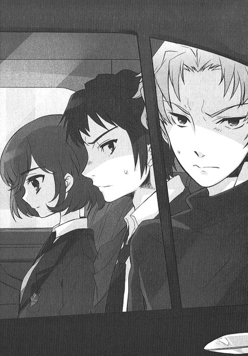
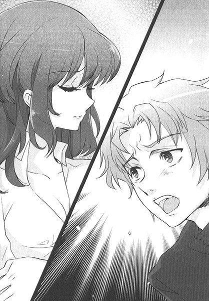
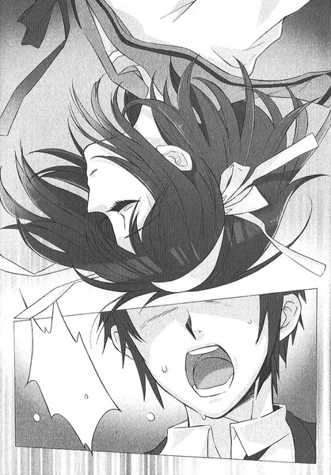
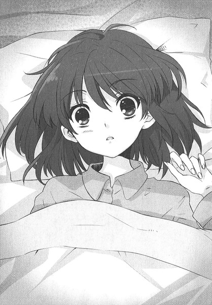
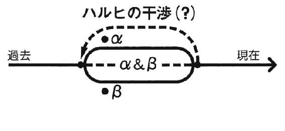
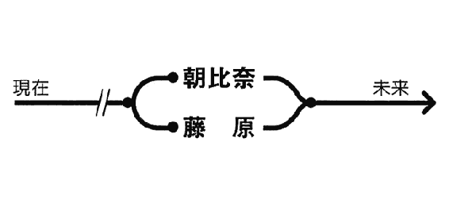
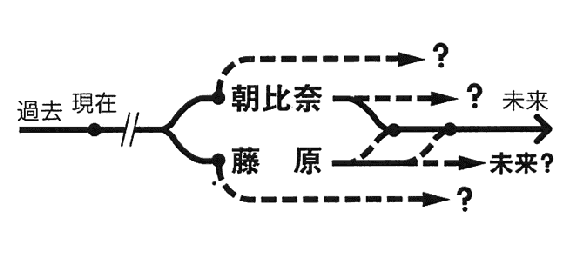
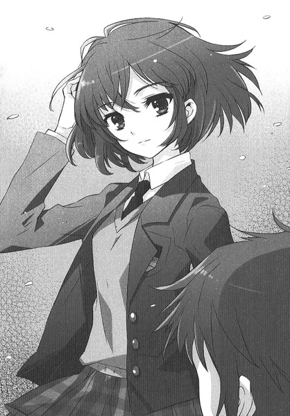

| [谷川流] 涼宮ハルヒ11 | |
| 谷川流 | |
| (2015) | |
|
涼宮ハルヒの驚愕（後）
谷川流
|
底本データ
一頁16行 一行42文字 段組１段
α─ ３字上げ
β─ ３字下げ
最終章・エピローグ ２字下げ及び２字上げ
「〈」「〉」置換え
●谷川流
兵庫県在住。２００３年、第８回スニーカー大賞〈大賞〉を『涼宮ハルヒの憂鬱』で受賞し、デビューを果たす。また、電撃文庫より『学校を出よう！』『電撃!!イ─ジス５』『絶望系閉じられた世界』『ボクのセカイをまもるヒト』の著作がある。趣味はバイクと麻雀。人生有楽苦楽中。今一番欲しいものはプロフィール欄に書けるような趣味二つ。
団長閣下による難関極まりないＳＯＳ団入団試験を突破する一年生がいるとは思わなかったが、俺に押しつけられた「雑用係」という不本意な肩書きを譲渡できる人員を得た幸運を噛みしめるのに、何のはばかりもないはずだ。なのに、ハルヒ同席のあのぎこちない再会以来、佐々木たちが顔を見せていないことが妙に引っかかるのはどうしてかね。類い稀なる経験に裏打ちされた我が第六感は、何を伝えたいんだ？圧巻のシリーズ第11巻！
涼宮ハルヒの驚愕（後）
ＣＯＮＴＥＮＴＳ
第七章...
第八章...
第九章...
最終章...
エピローグ...
あとがき...
第七章
α─10
翌、木曜日。
朝から夕方まで普通にルーティーンな授業を受け続ける時間が、ひねもすが地を這うごときにだらりんと続き、ホームルーム終了の合図でようやく俺とハルヒは五組の教室から自由の身となった。
ハルヒの俺に対する個人授業も昨日までだったらしく、掃除当番たちの何とも言えない怪奇現象を眺めるごときのアットホームな視線を浴びつつの特別講座も打ち止めとなり、そのようなわけで俺とハルヒは一目散に教室を飛び出した。言っておくが俺はあくまで団長殿に腕を引っ張られての強制連行に近いのだぜ。そこだけ勘違いしないでいただきたい。もちろんハルヒ講師の居残り補習を受けなくてよくなったという喜びには満ちあふれてはいたが。
そうしてハルヒと肩を並べて文芸部室まで行く道のりもいつも通りなら、学内の春的雰囲気も普段通りである。四月も半ばとなるとすっかり春という季節に飼い慣らされちまう。さすがは四季、頼みもしないのに律儀に毎年現れて、悠久の歴史で地球上の生物をコントロールし続けるのも伊達ではないと言ったところか。
だが、無常に訪れ続ける月日の流れには逆らえない。一年前の春から強引そのままの勢いで続くＳＯＳ団にだって、無視することのできない変化が訪れているのも確かだ。
そんな現象を裁判所に提出しても何の差し障りもなく証拠物件化できるような存在が俺たちを待っていた。
俺とハルヒが扉を開けるかどうかのタイミングでパイプ椅子からすたっと立ち上がり、
「お待ちしていましたっ！ 先輩」
巣に戻ってきた親鳥に応えるツバメの雛のような音階で叫んだのは、ハルヒの繰り出す理不尽で難関全開の入団試験をただ一人クリアした新一年生の元気少女である。パーマに失敗したような自由気ままな方向性を持つ髪にスマイルマークの飾りを揺らし、クリスマスイルミネーションのように輝く瞳を爛々とさせて俺たちを待っていた娘は、
「今日からわたしはＳＯＳ団の一員です！ よろしくお願いします！」
深々と一礼した。
渡橋ヤスミ。どこか舌っ足らずながらも、コーラス部にでも入ったほうがいいのではないかと思えるほどの声量であり、その表情は夜明け付近の金星のように煌びやかだった。少なくとも元気体力だけはハルヒと並んでいつまでも走れるくらいのエネルギーを内在させていると断言していいだろう。
「まあ......なんというか、そこそこよろしくやってくれ」
気の抜けた俺の返答にもヤスミはまるで意に介さなかったようで、ぴょこんと頭を上げ、
「はいっ！ それはもうがんばります！ 大そこそこで！」
その直情的な視線に荷電粒子砲のようなエネルギーが見て取れ、このまま生命力に満ちあふれた笑顔を見続けていたら両眼の水晶体がキャパオーバーで破裂しそうだったため、さりげなく目をそらして部室内に助けを求めた。
いつものメンツは全員がそろっている。ヤカンを火にかけている朝比奈さんはとっくにメイド服姿だし、古泉は長テーブルの上に将棋とも囲碁とも違うけったいな盤を置いて丸い駒をいじくっている。長門はと言えば定位置でまた何かのハードカバーのページに目を落として森羅万象にシカトを決め込んでいる体勢だった。
ハルヒは意味もなく満足そうな顔で団長席にどっしり座ってから、
「では」
カノッサ城において神聖ローマ帝国ハインリヒ四世と面会した教皇グレゴリウス七世のような威厳たっぷりな満足笑顔と口調で、
「みんな知ってると思うけど、あらためて紹介しておくわ。この子が厳正かつ公平な審査で選びに選び抜かれた新入団員、渡橋ヤスミちゃんよ。みんな、あたしたちＳＯＳ団がこの一年で得たすべての教訓と実績をみっちり叩き込んであげなさい。時には厳しく、時には子供に綿菓子をあげるような感じでね。次代のＳＯＳ団を支える礎となるように、バシバシ鍛えるのよ！」
「バシバシ......ですかぁ？」
朝比奈さんはヤスミに目をやって、次に自分の管轄区域であるお茶くみセットの在処を見渡し、はて田舎武将にどこから茶の湯の神髄を教えたらいいのかと考え込む千宗易のような表情になった。茶道部じゃあるまいし、番茶や煎茶を淹れる手順にそれほど技巧的なものが必要とは思えないが、ハルヒが適当に淹れる出がらし茶より朝比奈さんの御手によるもののほうが甘露であることを考えると、次代に残すべきテクニックとして朝比奈流お茶くみ術の極意をこの新入団員に教えてやってもらいたいところでもある。
ついでにハルヒにも指南してやってくれないかな。あいつの出す茶は味も解らないくらいの色の付いた熱湯でしかないのだ。
「はい！ お茶、お茶淹れます！ くみます、朝比奈先輩、この浅学なるわたくしめに、渡橋ヤスミめにお茶くみ係の極意の伝授を！ぜひぜひっ」
ヤスミは朝比奈さんを師匠と即断したようで、あっさり朝比奈さんのテリトリーに侵入を果たした。少し戸惑った様子の朝比奈さんだったが、ヤスミの決意は本物だと感じたのか、
「ええと、これが涼宮さんの湯飲みで、これがキョンくんの。あ、後、みんな好みの熱さが違うから気をつけてね。そこの戸棚にあるのがお茶の葉。その日の気温や湿度によって選んだりするの。今あたしが研究しているのがこの葉で──」
いちいちふむふむとうなずくヤスミのキラキラした瞳は朝比奈さんの一挙手一投足を一秒たりとも見逃すまいとする望遠カメラのレンズのごときそれであった。
「それから、あたしもメイド服着たいです！ あ、ナースも！やらせてくださいやりますぜひぜひぜひっ！」
十万馬力のロボットもかくやと思える、ヤスミのエネルギー源はなんなのかね。核融合か太陽エネルギー、まさか光合成でもしているんじゃないだろうな、この後輩は。おまけにそんな新入団員に最初に教えることがお茶くみとは、どこの企業の一般職だよ。
だが口出しは無用だろう。実際、他に教えることなんてこの団にほとんどないしな。
俺は鞄を床に置き、古泉の向かいに座った。
「どうです？一局」
ヤスミを面白そうに目で追っていた古泉が、ふと視線を切ってテーブル上の盤を俺のほうに寄せてくる。
「なんだ、これは」
一風変わった盤上に丸い石。刻まれている漢字は『帥』とか『象』とか『砲』などの、動かし方の見当もつかないチャイニーズミステリアスな様相を呈する駒だった。オセロでも囲碁でも軍人将棋でも連戦連敗の古泉め、今度こそ勝てそうなボードゲームを搬入してきたということか。
「中国の将棋です。象棋とも呼ばれていますね。ルールさえ覚えたら、気軽に誰でも楽しめますよ。たいして難しくはありません。少なくとも大将棋よりは手短に終わるでしょう」
そのルールさえ、という部分が問題なのさ。そいつを覚えるまで俺は連戦連敗の苦汁を舐め続けるに決まっているじゃないか。花札にしないか？オイチョカブでもコイコイでも母方の田舎ではちょいと鳴らした経験がある。
「花札は盲点でしたね。いずれ持参しますよ。それでこの象棋ですが、チェスや囲碁将棋と同じでゼロサムゲームだと解っていれば、それで充分です。あなたならたちまちのうちにルールを飲み込めます。差し掛けの囲碁の盤面を見て、あっさり勝敗を看破できる実力があれば鉄板ですよ。これもボードゲームとしては運の要素があまりありませんから、あなた向きだと思いますよ」
余裕の笑みを浮かべ、
「では、最初は練習ということで、初戦は勝敗度外視でいきましょう。まずこの『兵』という駒の動かし方ですが──」
気軽に説明し始めやがる。こいつはヤスミに対して何か思うところはないのか？なんだってハルヒ曰く超難関である入団試験を比較的苦もなく突破してきた才媛なんだぞ。世代交代次第で彼女が次期部長になるかもしれんのだぞ。ハルヒの目が節穴レベルでないのは間違いないとして、では古泉、お前はどうなんだ？顔にくっついている二つの目玉はラピスラズリでできてるんじゃないだろうな。
古泉は駒を並べながら、ニヤリとした笑みを浮かべた。ええい、気味の悪い。まるで影の首領にこき使われる中堅のレギュラー幹部みたいな余裕があるんだかないんだかの微笑だ。
俺側の駒を揃えるふりをして、古泉はこちらに頭を寄せてきた。小声での囁き。
「僕は何も心配していないのですよ。それどころか、安堵に包まれてもいます。これから何が起きるとしても、それが我々にとって悪いことにはまずなりません。あなたもそのつもりで、悠々とした態度を取っていてはいかがですか？」
確信がない、ってのが俺の反骨精神を形成する理由なのだ。今まで新たなる登場人物が出て来て、そのまま何もせず退場した例などあったか？それでなくとも佐々木や橘や九曜、匿名希望の未来人といった規格外部隊が思わせぶりに飛び出てきたんだ。あいつらはあいつらで現在何もやってないようだが、それはそれで不可思議で、だったら何で出て来たんだって話になる。伏線の仕込みにしては杜撰すぎるだろ。なんたって、あいつら挨拶だけでどっか行っちまったからな。
そんなんがミステリ小説の伏線だったとしたなら、俺は読了後どころか探偵が推理を開始した時点で本を壁に投げつけるぜ。
「穏やかではありませんね。読書はもっと鷹揚な心持ちで楽しむべきです。たとえどんな駄作でも、きっと後の糧となりますよ。優れた教師は反面教師、という格言もあることですし」
初耳だ。
「でしょうね。今僕がとっさに思い浮かべた格言ですから。でも、そんなに間違ったことを言ったとは思いませんよ」
「......ヘーゲルは偉大だな」
俺のつぶやきに、古泉はニッとした笑みをよこした。
「その通りです。人間が社会生活を送る上で、もっとも有益なアドバイスを残した哲学者でしょう。どんな人間でも実践可能なのですからね」
もっともヘーゲル的な弁証法がこの中華風将棋の勝敗になんら関係するとは思えないけどな。
俺は古泉に教えられるまま、駒を並べ、それぞれの動きの把握にかかった。将棋に近いが細かい部分はけっこう違う。まあチェスやオセロにも飽きていたことだし、新しいボードゲームに親しむのも悪くはないかな。
古泉と象棋に集中している間も、俺は他の団員の様子をちらちらと窺っていた。
長門は本を読んでいる。黙々と読んでいる。新しい団員が増えたところで所詮それは文芸部の新戦力ではないと達観しているのか、一年前からこの部室での態度はアイスランドの永久凍土のように不変だった。膝に置いている単行本がやや薄茶けているが、古本屋から堀り出し物を入手した稀覯本なのかもしれない。こいつの行動範囲も市立図書館から広がりつつあるのか。寂れた古書店を巡ってふらふらした足取りで本棚から本棚へと移動している長門を想像し、俺の精神はどことなく落ち着いた。
俺と古泉が盤上の闘争をぼちぼち始めようかという、その時、
「お待たせしましたーっ」
ピッコロの調べのように明るい声色とともに、お盆に湯飲みを載せたヤスミが視界の横から闖入してきた。彼女の背後で、メイドな朝比奈さんがハラハラした表情を隠さず俺たちに目を泳がせている。
「ルイボス茶ってやつです！ カフェインゼロ、お通じもよくなり、栄養価も申し分ありません。ぜひご賞味をっ！」
メイド服の予備はなかったっけ。ヤスミはだぼだぼの制服のまま、湯気の立つ湯飲みを俺と古泉の前のテーブルに注意深く置いた。
ハルヒの墨痕淋漓たる筆によってそれぞれ『キョン』『古泉くん』と書かれている湯飲みである。既製品に極太マジックで印されているだけでちっともワビもサビも感じない茶器だが、茶の湯の心得のない俺にとってはどうだっていいことだ。
ヤスミのキラキラしている瞳をなるべく見ないようにして、俺は赤茶けた液体を一口すすり、同様の行動をとった古泉と数秒後に目があった。
「......風変わりな味ですね」
微苦笑とともに感想を述べた古泉とまるごと完全に同感である。決して不味くはない。かといってかつ刮目するほどの美味さでもない。むしろ口には合わない、妙な風味がする。これなら煎茶や麦茶のほうが忌憚なくがぶ飲みできるだろうが、正直に舌の具合を報告するには俺はちと小心者すぎた。
「まあ......なんというか......今までにないお茶だな。ええと、身体に良さそうなのは非常によく解る。健康になりそうな感じだ」
「わぁお」とヤスミは嬉しそうに一声上げ、軽やかな仕草でさっと移動すると、長門の前にも専用の湯飲みを差し出した。
「............」
長門は、ちら、と『有希』としたためられたハルヒが勝手に決めつけた自分の湯飲みに冷徹な一瞥をくれ、
「............」
まるで水で戻す前の乾燥ワカメを見たかのような無反応ぶりで読書の続きに戻った。
これはいつものことだったので俺たちは何ら気にするところではなかったのだが、さてヤスミはどうかと眺めていると、こいつもまったく動じた様子もなく、跳ねるような足取りで朝比奈さんの元へと戻っていった。
「ちょっとちょっと」
声を荒げたのはこの空間における絶対にして根元的な究極支配者である。
「あたしのお茶は？」
ハルヒはディスプレイの横から不満顔を出すようにして、
「こういうの、まず団長に提供するもんじゃないの？あたしが後回しってどういうことよ。みくるちゃん、ちゃんと教育を行き届かせないとダメじゃない」
「あ......ごめんなさいっ」
慌てて両手をバタバタさせて焦る朝比奈さんの横で、ヤスミはくすっと笑った。
「すみません。忘れてました。緊張していたのかもしれません。今、とっておきの淹れ方をしますので、お待ちください」
ハルヒのワニ目にもう動じた気配はない。ヤスミは翅の生えた妖精のように軽やかに立ち回り、熱々のお茶を団長机にささっと提供した。例のごとく、ハルヒは熱湯に近いはずのお茶を一気飲みし、しばらく目を白黒させ、舌をフーフーさせる犬のような呼気を発してから、
「ちゃんと覚えていってよね。ここんとこ、かなり重要な決まりだから。みくるちゃんは教育係なんだから後輩に厳しくしないとダメよ」
いつ朝比奈さんがヤスミの教育係になったというのか。
「まあ、お茶はお茶でこれくらいでいいわ」
ハルヒの切り替えも早かった。茶を味わう暇もなかっただろうしな。
「渡橋ヤスミちゃんだったわね。あなた、パソコン詳しい？」
「ちょっとちょっとですけど、できますできます！」
「そう？ じゃあ」
団長机に鎮座するコンピ研印のパソコンディスプレイには、例のＳＯＳ団ウェブサイトが、かつて俺が作った状態のまま表示されている。もちろんショボいレイアウトにチャチなコンテンツと、意味のある文字列などメールアドレスしかないという、今時日進月歩で進化し続けるネットの世界において、ほとほと時代遅れなホームページであると言わざるをえない。ブログ？何それ？って感じのデジタルデバイドっぷりである。
そのうちリニューアルすべし、とハルヒの意気だけは高かったが、もっぱらその役目は俺に任じられており、そしてそんなもんまったくする気のなかった俺はなんやかんやと理由をつけて先延ばしにし続けていたわけで、実際、ＳＯＳ団の名がネットワークに流出して誰一人幸福な結果になりそうにないというのは、去年のコンピ研部長の件でも明らかだったため、ハルヒには適当に忘れていて欲しかったのだが、アクセスががんがん増えてネット内知名度を高める野望を未だ捨てきっていなかったらしい。もちろんハルヒは長門がロゴマークに細工したことを知らないし、気づいてもいない。
「サイトをもっと人目を呼ぶようなのにしたいんだけど、できるかしら？」
と、ハルヒは付けっぱなしのパソコンモニタを指さし、
「ＳＯＳ団のメインサイト。キョンが作ったきりのまるで殺風景な役立たずな代物なのよ。なにより美しくないわ。世界にはもっとスタイリッシュで情報満載なサイトがたくさんあるっていうのに、これじゃワールドワイドウェブの名が泣くというものよ」
悪かったな。
「そんなわけでヤスミちゃん、パソコンをちゃちゃっといじくって、ううんと見栄えのいいものにしてくれないかしら。あ、これは新人研修の一環なわけなのよね。入団試験があれで終わったと思ったら大間違いよ。正団員への道は厳しいものなの」
「はぁい！ やりますやります。やらせてください」
ハルヒの言葉の重みを理解しているのか否か、とにかくヤスミは即答した。
「やってみたいです。やってみます。やるならやります是非是非是非っ！」
打てば響くごとき返答で、この明確なまでのポジティヴリアクションには俺もちょいと驚いた。それで、つい、
「おい、お前。サイトとか今まで作ったりしたことあんのか？」
「ありませんけどっ」
そんな動物将棋をもらった俺の妹のような笑顔を向けられても。
「でもでもっ！ できる気がするんです！ あたしはみなさんのお役に立ちたいのです！そのためにはコンピュータの一台くらい、さっぱりと調教して見せます！」
パソコンなんてのはただの計算できる箱であって、いくら調教しようが狩猟犬のように言うことを聞いてくれる万能ツールではないのだが......。
しかし俺が止めるまもなく、ヤスミは座っていたハルヒを押しのけ、キーボードを引き寄せてワイヤレスマウスを握り、さっそくカチカチカタカタと事務職のお局女子社員のように作業を開始した。タイピングの手際はなかなか良いようだ。
一通りハードディスク内のデータを参照した後、
「あ、ツールはひと揃い網羅されてますね。でも、あれ？こんなアプリがあるんだったら最初からもっとハデなサイトが作れたと思うんですけどぉ。この無駄なタグだらけのサイト、えっと、誰が作ったんですか？ひゃ、懐かしのテキストサイトですねこれ。テーブルの指定も酷いし......。ほい、ソース表示......っと、あらら、うわ、酷い。このフォントタグの群れにいったい何の意味が......。ひゃあ、スタイルシートすら使ってないじゃないですか。こんなの、今時ネットにちょっと詳しい中学生ならもっとマシなのできそうですよ、先輩」
さっきハルヒが俺作成と明らかにしたばかりだろ。なかなか失礼な感想を述べる後輩じゃないか。渡橋ヤスミとやら。名は覚えたぞ。
「では、ちょっといじらせてもらいまぁす！」
明るく楽しげに宣言し、ヤスミは軽快にパソコンを操作し始めた。まさに鼻歌交じりのような気楽さだが、本当に鼻歌を吟じていて、どこかで聴いた曲だと思ったら去年の文化祭でハルヒが急造ボーカルとして参加した軽音楽部のナンバーだった。新一年生であるところのヤスミはその頃当然中坊だったろうから、たまたま見にきていた模様だ。
ま、あんときのハルヒが輝いて見えたことは、さすがの俺でも否定しきれないね。もっともその後、バンド活動に目覚めたハルヒによって俺たちがしないでもいい苦労と思わぬ事態を招き入れたのは誤算だったが。
ハルヒはヤスミの後ろに陣取って、二杯目のお茶を手に満足げな雰囲気を醸し出している。ようやく見つけた有能な部下の活躍にご満悦な管理職のような上機嫌さだ。これから雑事やコマい作業はすべてヤスミに押しつけてしまおうとしている決意が、表情から菌類の胞子のように振りまかれている。
俺もやっとで雑用係を解任されるかなと甘い未来を夢想しかけたものの、強情で理不尽な決定にかけては人後に落ちないハルヒのことだ。ヤスミ以下の待遇が待ち受けているのが関の山だろう。後輩にたった一日で上を行かれるとは、俺の存在意義はますます希薄になりそうだ。別に悲しんじゃいないけどさ。
差し向かいで打っていた俺と古泉の中国将棋が決着を迎えたとき、ちょうどヤスミの持ってきた湯飲みの中も空になった。当然のように俺が勝利を収めたが、あまり勝った気がしない上に慣れないゲームだったせいか、ちと疲れた。
「もう一戦どうです？」
リベンジの誘いを向けてくる古泉を無視して、大きく伸びをしたとき、何気なく向いた俺の目の先に段ボール箱が映った。それまでのＳＯＳ団戦利品がぶち込まれ、棚の上に放置され続けていた一応は団の備品とも言うべき物体。
その箱からはみ出しているのは昨年の草野球で使用したバットとグラブである。
多少、気詰まりなものを感じていたのは初の後輩ができたという異物感と、新入団員渡橋ヤスミに淡い警戒心──なんせあの電話の件がある──を抱いていたせいだろうか。気づいたら俺は、
「よ、古泉。たまにはキャッチボールでもしてみないか」
我ながら不可解な提言を発していた。
「ほう？」
古泉は一秒ほど俺の目を見つめると、すぐに破顔し、
「いいですね。身体を動かさなければどうしたって鈍りますし、適度な運動は健康と創造的思考の一助でもありますから」
そうと決まれば古泉の行動は早く、たいして背伸びすることもなく段ボールを棚上から下ろすと、ボロボロのグラブ二つとテニスボールを取り出していた。中には軟球や硬球もあったはずだが、さすがは古泉、しっかり俺の意を先読みしてやがる。
これまでＳＯＳ団は一年近く五人で通してきた。俺たちが進級して空きの出た一年生枠に滑り込んできた初の後輩、ヤスミに対して何ら含むところはないとは言え、さんざん五人一組で様々なオカルティックでサイエンティフィックな出来事に駆けずり回っていたせいか、ペンタグラムがヘキサグラムになったおかげで奇妙な不安定感が、俺の心根の中に生じているらしいと自己分析できる。
簡単に言えば俺はヤスミをこの安定していた部室内に突如として現れた異物的な存在だと、なんとなく思うでもなく感じているのだろう。今後、ヤスミがＳＯＳ団内でどんな役割を果たすことになるのか、ハルヒはこれでいいと考えているのか、どうもすっぱりとは完全に納得することができにくい。
俺の風呂中にヤスミからかかってきた電話もひっかかる。あれが入団希望の先走り的勇み足なんだったとしても、なぜ俺にわざわざ？まあ長門や朝比奈さんや古泉にかけても意味はなかったかもしれない。あの三人は特別な背景事情を背負っているからな。しかし、相手が俺だったとしても特に意味など発生しないはずだ。現にあの時、ヤスミはロクな自己紹介もせずに切っちまった。まったく、ハルヒ並みに意図の読めない後輩がいたもんだ。
つまり、俺は何となくヤスミのいるこの部室から消極的に逃げ出したく思っていて、その格好の口実が、すなわちキャッチボールだったということなのさ。こればっかりは室内ではできないからな。
「つーわけで」
と、俺はヤスミのパソコン作業を見守るハルヒと、新茶について研究を始めている朝比奈さん、読書に専念している長門に、
「ちょいと外に出てくる。俺と古泉がいても教えられることはないしな。逆に邪魔だろ。新入団員の初期教育は任せる」
古泉はすでに二人分の野球グラブを携えて誰に向かうともなく微笑をたゆたえ、
「そうですね。こういう時は女性陣のみのほうが、円滑に忌憚のない活動が進むでしょう。邪魔者たる我々男性陣はしばし退席しておきますよ」
フォローだけは天下一品の副団長だった。
ハルヒはちらりと俺に待ち針のような視線を向けたが、
「いいんじゃない？ そうね、キョンの今までの団員活動もヤスミちゃんに教えておきたいしさ。いい？ヤスミちゃん。この男が団で唯一の平団員であるゆえんを話してあげるわ。まったく、ほんとどうしようもないったらないのよ。反面教師にするといいわ。我が団は完全貢献主義だから、キョンなんてあっという間に抜き去ってしまえるわよ」
そうかいそうかい。ま、おまえがその認識でいてくれている間は、俺も安心だよ。ぜひこのままけったいな役職をおしつけられることなく平穏に卒業を迎えたいものだ。
俺は古泉に目配せする。古泉も正確に俺のアイズオンリーコミュニケートを受け取ったと見えて、ボロいグラブを投げてよこすと、
「それでは一時失礼します。飽きた頃に戻ってきますよ」
パチリ、と音がしないのが不思議なほどの厚いウインクをかまし、俺の背に手をかけた。
「我々は我々で、久しぶりに男二人での時間を楽しませていただきましょう」
部室を出る前に振り返ると、長門はいつも通りの没頭読書術を継続し、朝比奈さんは「このお茶、違うのとブレンドしたほうがいいかなあ？」などとお茶くみ考察に真剣な面持ち、ハルヒはパソコンを手際よくいじるヤスミの後ろで、解ってるような実はまったく解っていないであろう微妙に複雑な表情で、モニタを半口開けて見守っていた。
新入団員の一年が加わるだけで、ずいぶんと雰囲気が変わるもんだな、この部室も。
部室棟から出た俺と古泉は、中庭にてキャッチボールを開始した。
どっからどう見ても暇をもてあました男子学生二人の暇つぶし以上の光景には見えるまい。
ちょうど校舎と部室棟の間にある芝生敷きの中庭であり、三階にある文芸部室の開け放たれた窓から容易に見下ろせる位置にある。こちらからも見上げられるので、部室から誰かが顔を出していたら一発で解る距離だ。
「女性が一人増えるだけで華やかになるものですね」
言いつつ古泉が投げたボールは緩やかな山なりだった。
「何だ、男のほうがよかったのか？」
オーバースローで返したテニスボールを受け取った古泉は、
「バランスですよ。男子は我々二人だけ、なのに女子が四人になると、どうにも劣勢な状況になると思いませんか？ただでさえ僕たちの発言権はそれほど大きくないというのに」
情けない話だが真実だな。正確にはハルヒの発言力がベース用ラウドスピーカーなみにやかましすぎるのが問題なのだが。
「あの少女も一筋縄ではいきそうにないですよ」
古泉の投球はやや勢いを増した。
「ヤスミにも何か奇怪な背後関係があるのか？」
俺のグラブにパスンと音を立てて蛍光色のボールが収まる。
「いえ」
と、古泉は謎の含み笑い。
「それはご安心を。彼女にはどんな組織のバックもありません。純粋な個人ですよ。何にも属さず、誰にも指図されることのない、ただ一つの意識を持った存在でしかない。それ故に興味深いんですよ」
俺はボールを握り、それがまるでもぎたてのレモンであるように睨みながら、
「回りくどいな、古泉。知っていることがあるんだったらさっさと言え。渡橋ヤスミは何のためにＳＯＳ団に潜り込んできた？」
「目的は解りません」
古泉はお手上げのポーズをして、
「僕が知っている、あるいは推測していることはただ一つですから」
ワインドアップモーションで投げ返したボールを、古泉は事もなげにキャッチした。聞いてやろうじゃないか、そのただ一つの推測とやらを。
「涼宮さんが望んだんです」
またそんな理由かよ。
「渡橋ヤスミの存在をＳＯＳ団の一員にすべきだという決定。それを涼宮さんが望み、選んだのです。必要な人材だと確信しての新入団員採用でしょう。おそらく無意識による現実操作でしょうね」
それよりも──と、古泉は俺に目線を投げかけ、
「なぜ、いきなりキャッチボールという発想が出てきたんですか？あなたが僕を誘うなんて、さて、今まで何度あったでしょう」
俺だって知るか。なぜかこのタイミングで野球道具を使用しなければならない予感がしたんだよ。あまり放ったらかしにしておいてグラブやボールが付喪神に化けちまうのはぞっとしないからな。
「そうですか」
古泉は即座に納得したようで、
「部室の器物が意志を持つようになっては、いよいよ異空間化に拍車がかかりますからね。ですが、あなたの心情には賛同できます。なぜなら、僕もなぜだかキャッチボールをしたい、いや違いますね。しなければならない、という妙な強迫観念に捕らわれていたからです」
古泉が投げ込んできたボールは手元で変化し、くいっと落ちた。それをすくい上げて、
「どういうこったよ」
「解りません。しかし、必然的な行為である可能性があります。僕たちはここでキャッチボールをすることが義務づけられてきたんじゃないかとね。未来人が言うところの、ようするに既定事項というやつですよ」
解らんな。だったら朝比奈さんなり朝比奈さん（大）なりが回りくどくメッセージを送ってくるはずだが、そんなものはなかったぞ。第一、お前と野球ごっこをすることが、未来のどんな伏線になるってんだ。
「朝比奈さんに訊いてみてもいいのですが......」
古泉は三階にある部室の窓を眺めて、軽く息をついた。
「あの調子では何もご存じないでしょうし、おまけにこれは僕たちの自発的行為です。どうも疑心暗鬼に捕らわれているだけである可能性のほうが高いでしょうね。こんなことまで疑っていたら、ますます未来人の思うがままですよ。過去人として、未来人の思惑には負けたくありません。超能力も『機関』も関係ない。現代を生きるものとしての個人的なプライドというやつです」
こいつにしては本音くさい語調だった。俺が意外なものを感じていると、
「見下されるのは結構です。あいては我々より組織も力も強大だ。でもね、僕は見下されるまま諦観するのは個人的に気に入りません。敵が強ければ強いほど、どんな手を使ってでもギャフンと言わせる逆転の展開は古今東西、王道と呼べるのではありませんか？」
週刊漫画のバトルヒーローみたいだな。インスタント修行とか、秘めたる能力の覚醒で九曜あたりを一網打尽にしてくれたら俺の出る幕はなくなるんだが。
「その役回りは」
と、古泉はチェンジアップを投げてきた。
「あなたが適任でしょう。あなたの背後には涼宮さんが、涼官さんの背後にはあなたがいる。あなたがた二人にできないことなどこの宇宙に存在しませんよ」
そしてニヤリと、
「前にも言ったことですが、いっそアダムとイブから始めてしまえばいいのです。日本的にイザナギ、イザナミといったほうがいいでしょうか。産んで増やすを続けていけば、そのうち地球はあなたと涼宮さんのような人間で溢れかえることでしょう。なかなかシュールにして愉快げな光景ではありませんか」
そこまでいったら不条理ギャグの領域だな。俺はこのツッコミ体質をわざわざ子孫に残すつもりはない。ましてや、相方がすべてハルヒ起源の人類なんぞになると、ノアの箱船まで歴史が続いていそうな気がしない。まともな判断を持っている船長なら乗船拒否は覚悟しないといけない。
考古歴史学会のためにも、その手の提案は却下だ却下。せいぜいアララト山を凍土の底まで掘り返していろ。木造宇宙船が出てくるかもしれん。
「残念ではありますが」
古泉はボールを握った手を風車のように振り回す。
「ほっとしています。僕はあなたたちをもうしばらく見ていたい。長門さんや朝比奈さんたちもね。地球上の生物で唯一、想像力と知的好奇心を持って誕生した人間の一人として、最後まで見届けたいというのも本音なんです」
ここで古泉はいきなり話題を変えた。
「涼宮さんとの放課後学習ははかどっていますか？」
知ってやがったか。俺はあえて平静を保ちつつ、
「おかげさんで、まあまあだ。教えられているというより、あいつが教える楽しみを満喫しているだけのようにも思うがな」
「いい傾向です。あなたも涼宮さんも進学コースでしょう。できれば同じ大学にそのまま上滑りしてくれると、こちらとしても助かりますよ。大学入試までご尽力のほどをよろしくお願いします」
いいって。俺の進路にヤキモキしているのはオフクロだけで充分だぜ。幸い時間はまだ二年近くあるんだし、今から慌てて問題集を座右の書としなくてもいいはずだ。俺にはもっとこう、やらねばならないことがある。
「ほう。何でしょう」
......たとえば買いそびれている新作ゲームとか、やり残して積んだままで評判のいいとよく聞くゲームとか。
古泉はかすかに笑っただけだった。余裕をかましている同級生の呆れたような微笑ってな、なんでこんなに神経に障るんだろうね。くそったれ。俺もこんな笑い方をしてたまには周囲を煙に巻いたりしたいもんだ。
「さて、次の球種は何がいいですか？ カット、ナックル、まっスラと、各種取りそろえておりますが」
俺がキャッチできる範囲のボールで頼む。あいにく捕手の経験がないもんでね。永遠のセカンドプレイヤーと呼んでくれ。
次に古泉が投じたのはど真ん中直球のストレートだった。何かの意思表示だったのかもしれない。それくらい普段の古泉の腕からは想像できない球威である。これだけの投球術があれば、去年の草野球大会はお前がリリーフのマウンドに立つべきだったな。他に隠し持っている鷹の爪があるならそろそろさらけ出しておいてくれよ。
しばらく古泉相手の無言のキャッチボールが続いた。取り立てて野球に興味もないんだし、そろそろ飽きてきたなと思っていると、
「おや？」
最初に古泉が顔を上げ、つられて俺も奴の視線の先を追う。
紙ヒコーキ。
適当に折ってみましたという感じのシンプルで稚拙な紙飛行機が、中庭の上空を旋回している。ろくに風もないせいでふんわり落ちてきた飛行機は、着地に失敗した高跳び選手のような軌道を描いて、俺の足下に突き刺さった。見ると、部室にあったコピー用紙が製作材料らしい。
拾ってみる。
羽の上にサインペンで急いで書いたような文字が躍っていた。曰く、
『ＯＰＥＮ！』
古泉が近寄る前に素早く、俺は紙飛行機を折り目の付いたタダの紙に戻し、若干の時間、固まっちまった。同じサインペン、筆致で黒々と書いてある文字はごく短いものの、いささか衝撃を受けるに充分だ。
『ＭＩＫＵＲＵフォルダ発見！』
反射的に見上げる方向は、部室窓に決まっている。
窓際に立つ人物いかんによっては、これから始まる弾劾裁判を覚悟しなければならないな、と内心ビクビクしていたのだが───。
開け放した三階の窓からこちらを見下ろしているのは、渡橋ヤスミの小柄な姿で間違いなかった。ヤスミは俺が原始的飛行便のメッセージを確認したと確信したのだろう、立てた人差し指を唇に当ててから、舞台袖にはける女優のような身軽さで窓際から姿を消した。
どうやらヤスミとやら、侮れないＩＴスキルの所有者らしい。機械オンチの朝比奈さんや精密機械だろうと乱雑にしか扱わないハルヒに慣れててすっかり油断していたというべきだろう。長門にはバレてるかもしれないが、あいつの口の堅さは鉄鉱石レベルだし問題ない。
しかしよく、あのパスワード付き隠しフォルダの中身を開けたな。これはセキュリティ強化の必要性がありそうだ。そのうちコンピ研の部長にでも相談してみるか。
「どうかなさいました？ それにいったいどんな言葉が──」
古泉が物欲しげな顔を俺の手にした元・紙飛行機に向けてきたが、
「気にするな。俺と朝比奈さんのささやかな秘密ってやつだ。お前の人生に何の影響も及ぼさない無益な情報さ」
微笑を浮かべた古泉は返答せずに肩をすくめ、訳知り顔を向けてきたが俺は無視した。
そしてもう一度、部室を見上げる。脇に寄せられたカーテンが春風にたなびいているせいで、内部の様子は見て取ることができない。
少し前から思っていたが、改めてヤスミへの感想をつぶやくことにする。
「変な女だ」
それからしばらくして部室に戻ると、ハルヒがパソコンの前で大喜びしていた。
「見なさい、キョン！ この綺麗で華麗な画面を！」
俺は野球道具を古泉に任せ、子猫が揺れる紐にじゃれつくようにマウスを振り回しているハルヒの横へ移動する。
「おお？」
モニタに映っているものを見た俺の口から謎の感嘆符が漏れた。
「こりゃ、ＳＯＳ団のサイトか？」
「見れば解るでしょ。どじゃーんとでっかく書いてあるじゃない」
確かにロゴマークはそうなってるな。しかし、かつて俺が適当にでっち上げたホームページモドキの面影がまったく残っていない。壁紙からフォントからインデックスから何からすべてが一新され、おまけに文字の一部がピカピカ光りながら動いているし、画面の色使いがやたらとハデだ。俺の作った初期サイトがアダムスキー型だとしたら今のはまるでシャンデリア型ＵＦＯである。しかしちょっと装飾過剰すぎやしないか？
「こういうのは人目をひいてナンボなのよ」
ハルヒは自分の手柄のように意気軒昂と、
「それにね、ネットの世界はドッグイヤーなわけ。せっかくの技術を使わないでどうするのよ。ヤスミちゃんにはとにかくありったけの素材を使ってもらったわ。ほら、ここをクリックすると──」
フリー素材丸出しないかにもな音楽が鳴りだした。正直、やかましい。
俺はやってはいけないサイト作りの典型例のような画面を睨みつつ、
「コンテンツは何があるんだ？」
「メールフォーム」
それだけか。
「しょうがないでしょ」
ハルヒはぷうと唇をとがらせ、
「活動報告のとこにいっぱい写真を載せたかったんだけど、あんたが反対したんじゃないの」
ああ、朝比奈さんの件か。よく覚えていたな、こいつ。
「でも、こんなのならあるわよ」
マウスカーソルがするすると動き、ゲームと表示されている部分で停止した。クリック音とともに映像が切り替わった。星空を背景にした、何かのゲームのメニュー画面らしい。意味なく凝った書体で描かれているタイトルを読むと、
「ザ・デイ・オブ・サジタリウス......５？」
「コンピ研からもらってきたのよ」
しれっと言うな。
「以前やったゲームのネットオンライン対応改良版らしいわ。世界のどこからでも誰かと対戦できるそうよ。よくわかんないけど、これくらいはあったほうがいいでしょ？もちろん無料でプレイできるわ」
誰が金など払いたがるものか。しかし、なんとバージョン５まで来るとは、連中にとってよほどこだわりのあったゲームらしいな。それだけに俺たちに敗北したことはけっこうこたえただろう。まあ、ありゃ自業自得と言えるが。
「ついでにコンピ研にはさらなるゲームの開発を依頼しておいたわ。これじゃああんまりＳＯＳ団っぽくないもんね。あたしはもっと違うピコピコが欲しいから」
命じておいたの間違いじゃないのか。ＳＯＳ団っぽいゲームを作れなどと言われたコンピュータ研究部の困惑ぶりを成り代わって噛みしめてやっているうちに、ふと気づいた。
「で、あいつはどこだ？」
部室に渡橋ヤスミの姿がない。いるのは片隅で読書中の長門と、グラブとボールを片づけ終えて自分の席に着いている古泉、それから今ちょうど湯飲みにお茶を注いでいる朝比奈さんだけである。その朝比奈さんが盆に載せた湯飲みを差し出しながら、
「帰っちゃいました。ついさっき」
「へぇ？」
本格入団初日から早退か。
「どうしても外せない用事があったんですって、何度も謝りながら走っていっちゃいましたよ」
俺に湯飲みを手渡した朝比奈さんは、なぜかいつもより一回り大きな笑顔を咲かせていた。その理由を問いかけると、
「すごい可愛いんですよー」
と、とろけるような口調で、
「声とか、口調とか、仕草とか、表情とか、お辞儀の仕方とか、もう、どうしようもないくらい可愛いんです。本当に」
盆を抱きしめてくねくねする朝比奈さんも相当のレベルだが、かくも短時間でこの愛らしい先輩の心を射止めるとは、渡橋ヤスミ恐るべし。
「まあ、あたしにはピンとこないけど」
ハルヒは朝比奈さんの様子を半分あきれ顔で眺めていたが、
「本気で急いでいる様子はピョコピョコしててまるでヒヨコ。でも、みくるちゃんのツボにハマったみたいでよかったわ。いろいろ引き出しの多そうな娘だし、しばらくは退屈せずにすみそうね。まだ一日目だけど、才能の片鱗を感じるには充分な時間を過ごせたわ」
まだ身体をくねらせていた朝比奈さんは、
「長門さんにもすぐに懐いていましたよ。あの娘には仲良しの才能がありますね」
ここでやっと我に返ったか、それとも何もないテーブルの上をわざとらしく見つめ続けている古泉に気づいたのか、再び急須を手にして副団長専用湯飲みを探し始め、俺は長門に視線を移して一体こいつと瞬時に信頼関係を築く方策とはどのようなものであるのか想像することに努めた。
長門は俺の思考を正確に判読したらしい。じわりと文字の海から顔を上げると、
「本を貸した」
抑制しすぎの声でぽつりとつぶやき、直後に補足の必要性を感じたようで、
「貸すように依頼された」
と継ぎ足して満足したとみえる。また視線を下ろした。
「なんか、どっかの衛星かギリシャ神話のキャラみたいな名前の本だったわね」
何気なさそうにハルヒが言う。ドライアイスを飲み込んだような冷たい焦りが俺の喉を通り抜ける。が、長門が反応しないので俺も何とかポーカーフェイスを貫いた。
ありがたいことにハルヒにとって本当にどうでもよかったことなのだろう。長門文庫への言及はそれだけで、そのままカチカチとマウスを操作してブラウザを閉じ、パソコンを終了させにかかった。そろそろ今日の部活もお開きという宣言に等しい。
「有望新人が来たのは新年度早々からいい前兆だわ。ＳＯＳ団は次世代の育成も怠ってはいけないの。たとえこの学校が取り壊されてもＳＯＳ団だけは残るくらいの気概を見せないと。あたしたちはその礎となるのよ。いいえ、ならなきゃダメ」
俺は立ったまま茶を啜りつつ、
「お前が言うんだったら、そうなるんだろうな」
生返事をしながらヤスミの顔を思い浮かべる。俺専用朝比奈さんフォルダに口をつぐんでいてくれたことには大いなる感謝を捧げるしかないが、どうにもこうにも気がかりだ。横目で窺うと、長門は平素と変わらぬ態度でハードカバーから顔も上げないし、古泉に茶を給仕中の朝比奈さんは前述の通りである。しかし、ハルヒが選択した唯一の新入生がまともであるはずがない。とてもそうは見えないが、それでも何かあるはずだ。
俺の風呂中にかかってきた電話といい、数日前からつきまとう奇妙な違和感といい、何だかもやもやしてならん。まあ、それは佐々木や九曜、名乗らない未来人や橘京子などの懸案事項があいかわらず何も片づいていないからなのだとしても、ヤスミ本人に対して感覚的な胸騒ぎを覚えるのはなぜだろう。それも、どちらかといえば楽観的な方向の騒ぎ方で。
ヤスミは敵か味方か、といった中途半端な存在ではない。あの少女から受ける印象は、長門や朝比奈さん、九曜や橘京子たちとも違う。強いて言うならば──。
俺はハミング混じりで帰り支度をしているハルヒの横顔をチラ見した。
宇宙人とも超能力者とも未来人とも違う。渡橋ヤスミから感じる雰囲気は、そう、ハルヒか佐々木に近いのだ。
しかし、何故なのかが解らない。
こうして、ちくわと間違えてちくわぶを口に入れてしまった直後のような正体不明な感覚、いわば明るい胸騒ぎとでも表現すべき気分を抱きつつ帰宅した俺は、自室の扉を開けるなり仰天することになる。
「キョンくん、おかえりー」
やたら愛想のいい猫みたいな笑顔でそう言った妹と、異常に無愛想な人間のような顔でベッドに横たわっているシャミセンが待ちかまえていたのは充分予想できた、というよりいつものことなので驚きもなにもない。
あんぐりという擬音を背負いたいくらいに俺の口を開けさせたのは、そいつらの他に見たばかりの顔を持つ人間を発見したからで、そしてそいつは妹の前で正座していたかと思うとペンシルロケット打ち上げ直後かと思うほどの勢いで直立し、
「お帰りなさい、先輩！ おじゃましてますっ！」
よく通る明度の高い声でそう叫び、深々と一礼した。実に行儀良く。
「な......」
どういうわけかさっぱり理屈が飲み込めないのだが......。
渡橋ヤスミが俺の部屋にいた。その少女の姿が俺の幻覚だと思いこむには、とてつもなく困難な出来事だった。無理がありすぎる。
急用で走って帰ったというヤスミが、何の用事、どんな理由でここにいるんだ？
いや待て。冷静に対処しよう。俺は今まで散々予想外のイベントに巻き込まれては、不承不承ながらも強引に慣らされているはずだ。ハルヒが消えたり、何度もタイムスリップしたりしたことに比べると、たかが新入部員が俺の自室で帰りを待っているくらい、全然、日常の範疇に収まる。犯人の犯行動機が最後まで解説されなかった本格ミステリ小説のようなものだと言えよう。よし、俺は冷静だ。事情聴取にはまず身近な人間から始めるべきだろう。
ヤスミは胸の前で両手を組み、キラキラした目を俺に向けて、
「本当は昨日来たかったんです。でも、予定より延びちゃって。やっぱり迷いがあっちゃダメですよね」
と意味の解らないことを言った。予定？ 迷い？なんだそりゃ。まあいい。それは後で考えることにしよう。俺はいつもニコニコ悩み知らずな妹の首根っこをつかみ、
「お前が家に上げたのか？」
「だってー」
妹はくすぐったそうに身じろぎして、
「キョンくんの友達ーって」
素直すぎるのも考えものだ。知り合いならともかく、見知らぬ人間をそうほいさっさと信用するべきでないと教育してやらねばならない。なんというか、こう、兄として。
俺が説教の草稿を組み立てるより、ヤスミの助け船のほうが速やかだった。
「玄関で会ってすぐ先輩の妹さんだと解りました。フフ、いい子ですね！あたしもこんな妹が欲しかったです。抱っこして寝たいくらいです。それにその猫！立派な三毛猫ですよね！すっごい頭良さそうで、あたし、感心しちゃいました」
早口でまくし立てた後、ヤスミはややしょんぼりと、
「でも、ペットはもう飼えないんです。それが残念で......でも！こうして人の家のペットと遊ぶのは大好きなのですよっ」
その威勢のいい口調にやや物理的に気圧されるものを感じ、俺はちょっと仰け反りつつ、
「お前......。用事で早めに帰ったんだよな。まさか、その用事ってのは......」
「ハイ。一度こうして来てみたかったんです。先輩の家に。フフ」
あっけらかんと答えるヤスミの顔にも口調にも怪しいところはまったくのゼログラビティだった。特徴的な髪留めがお辞儀とともにひょこんと揺れる。
「ねー、ねー」
妹がヤスミの袖を引っ張っていた。
「さっきの話の続きー。その髪留め欲しい。もう売ってないんでしょ。ちょうだい」
「ごめんなのです」
ヤスミは屈んで妹の目線の高さに合わせ、つぶらな瞳同士を二つとも合わせた。
「これはあたしが小さい頃からの宝物なんです。今はダメ。でも、そのうちあなたのところに巡ってくるかもしれませんね。あたしたちは世界の流れに乗っている小舟です。またいつか、ここに戻ってくることもあるでしょう。この髪飾りだけでも。そのうち、いつか」
スマイルマークに近似した髪留めは、鳥の巣のような髪をまとめるというより、ただ身分証明のようにくっついているだけのような気がしたが、そんなにいちいち気にするのは些事でしかない。もっと気にするべきことは何かと考えているうちに、ヤスミは俺の部屋を歩き回り、ベッドの下をのぞき込み、シャミセンの耳を引っ張って、
「当たりですよ、この猫、大当たり」
などとコメントしたかと思うと、妹に飛びついて抱きついていたりしていたが、また俺の眼前に直立不動のすっくとした姿勢で戻ってきた。その口から飛び出したのははっきりとした意思表示、
「帰ります」
ああそう、としか返答できなかった自分が何やらみすぼらしく感じる。もう少しマシなボキャブラリーを内蔵していたはずなんだけどな、俺。言いたいことがあるのに言葉が出てこないのはもどかしいことだ。
ヤスミは正面やや下から俺を射貫くような視線をむけていたが、ふと短い半生を懐かしむような表情に変化し、
「新しい学校に入ったら、きっと面白い部の一つはあって、あたかも吸い寄せられるような偶然的な事件があって、行きがかり的にそこに入部してしまうっ、なぁんてことを夢見てたんです。黙っていても向こうからやって来るもんだって。そうじゃないですか？面白い物語の語り手って、みんなそんな感じな気がするんです。そこには面白い先輩がいっぱいいて、その中の一人と仲良くなったりして、あたしはそういう主人公になりたかった......」
いつかどこかで聞いたような、いつかどこかで俺が考えていたような話だった。だが俺が長期記憶をまさぐり始める前に、ヤスミはぴょこんと頭を下げ、バネ仕掛けのように小さな身体を反らすと、
「なーんて、実はただ先輩の部屋に一人で来てみたかっただけなんです。おじゃましてすみません。でもすっかり満足しました。あたしはもう来ません」
ヤスミが俺に向けた笑顔は、朝比奈さんが腰砕けになるのも解る、小動物の子供が世話主に全幅の信頼を持っているごとき、純粋で柔らかな燐光に包まれていた。こんな目で見つめられて何も思わずその場を立ち去る人間など、ペットショップの客にはいないだろう。
「それでは、またお会いいたしましょう。先輩、あたしのこと嫌いにならないでくださいねっ」
言うやいなや、ヤスミは妹の頭とシャミセンの額を一撫でして、春一番のような勢いで出て行った。ちょっと待てという暇すらない。気づけば、一年後輩の新入団員は姿形を我が家から消している。
あくびをするシャミセンを無理矢理抱え上げた妹が、
「あの人、だぁれ？」
その質問の回答は、俺が今一番欲しているものだぜ。
「あ......」
直後、俺は訊き忘れていたことに気づく。いつだったかの夜、風呂に入っている最中に電話をかけてきたのは、紛れもなく、あのヤスミで間違いないのは確かだ。
しかし何故、俺なんだ？ ただ名前を告げるだけの短いメッセージ。あの時点でヤスミはハルヒの課す入団試験にただ一人残ることを確信していたのだろうか。まるで予知能力者だが、古泉からすればそんな形跡もないらしい。てことは、偶然北高に入学し、偶然ＳＯＳ団に混じり込んできた一般学生ということになるが、あまりにも出来すぎた偶然だ。
──この世に偶然などありません。すべては必然です。認知することのできなかった必然を、人は偶然と呼ぶのですよ......。
誰かが言っていた言葉、いや長門から適当に借りた小説にあったセリフだったかな。
ぼんやり考えつつ、俺は意味もなく妹からシャミセンを取り上げ、鼻と鼻を近づけた。いつものように迷惑そうに顔をそらすシャミセンに、
「ヤスミをどう思う」
独り言にしかならないと理解していたが、なんとなく誰かに胸中を分け与えたい気分だったのさ。
「ヤスミお姉ちゃんって言うの？ ハルにゃんや鶴にゃんのお友達？」
三毛猫よりもまん丸の目をした妹が脇から口を出してきたため、俺はうんざり顔のシャミセンを床に下ろした。これ幸いと部屋を立ち去るシャミセンの猫追い人となった妹も出て行って、ようやくの静寂が自室に立ちこめる。
いくら考えても解らない。まるで log 記号なしでフォアフォーズの素数を永久に解き続けよと明示された数学助手のような気分だった。
あいつは渡橋ヤスミ。そういう名を名乗る北高の一年生で、ハルヒの認めたＳＯＳ団新入団員一号である。
だが、何者なんだ？
β─10
木曜日。
考えることが多すぎる割には、何を考えていいものやら見当がつかない。
俺に出来ることは、と指折り数えてみても、折ることの出来る指など右手の人差し指一本きりで、結局のところ普段通りに登校して、普段通りに上の空状態で授業を受ける、ただそれだけだ。
そしてどうやら、ハルヒもまた俺と同じ心境を共有しているらしく、始業時にはすでに心あらずと言った具合に、意識のほとんどを長門の部屋に残してきているようだった。
「ねえ、キョン」
一時限目が終わって休み時間になるや否や、ハルヒはシャーペンの先で俺の背中をつついた。
「有希のことなんだけど、やっぱり無理矢理にでも病院に連れて行ったほうがいいかしら」
長年一緒に暮らしていた家族同然の小型犬が散歩を拒否したかのような、深刻な顔つきだ。
「春風邪だろ。そこまでいくと過保護としか言いようがないな」
合いの手を入れる俺の心もやや痛み気味である。抗生物質や栄養点滴で何とかなる状況でないのは俺にはよく知れたことだからな。
「でもねえ。なんだか気になるのよ」
と、ハルヒはシャーペンの尻をカコカコと押していた。無意識の行動だろう。俺は無意味に押し出され長く伸びていく芯の先を眺めながら、
「古泉が言ってたろ？ いざとなりゃ、強引にでも担ぎ込めばいいさ。でもな、」
俺は息を吸い込み、次のセリフのための準備時間を稼いだ。
「当の長門ご自身が平気だとおっしゃっているんだせ。あいつが太鼓判を押したことで、今まで違っていたものなんざあったか？」
「それは......そうなんだけどさ」
しかしまだ、ハルヒの顔に差す疑念の色は金星の見えない薄曇りの明け方のように晴れない。
「何だが胸騒ぎがするの。有希のことだけじゃなくて......んー、うまく言えないんだけど、もっとスケールの大きいことで、変な事件が起きそうな、そんな気分」
謎の病原体が地球全土に広がって古いＳＦみたいなパニック映画の世界になるとでもいいたいのか？俺がガキのころに観たテレビ映画ではそんなのがやたら多かったが。
「そこまで大げさじゃないわよ。あんな古くさい世界観は今の世の中じゃ流行しやしないわ。火星人が攻めてきたり、生物兵器が漏れて人類滅亡の危機なんて、そんなの今の人生に嫌気が差したカタストロフ願望のある自殺志願者の弱気がそう思わせているだけよ。そういう連中は自殺する勇気もないもんだから、全人類まるごと死んじゃえばいいと思っているにすぎないの。甘えよ、甘え」
ＳＦの大家が聞いたら苦笑いしそうなコメントを発したハルヒは、つんと鼻先を反らして、
「あんたに相談したのが失敗だったわね。どうせそんな的はずれな冗談モドキしか言わないと知ってたのに、あたしも耄碌したものだわ。いいわ、キョン。忘れてちょうだい。いえ、忘れなさい。あたしの考えはあたしだけのもので、誰かと共有しようとしたのが間違いだったってわけよ。それだけは認めざるを得ないようね」
そっすか。ま、俺には独創性のある嘘ストーリーを構築する能力が欠如してるってのは自覚してるから、今更ハルヒに指摘されたところで何ら痛痒を感じんさ。アホであることを充分認識している人間に、おまえはアホだと言ったとしても失笑を返されるだけなのだ。つまり、今の俺がそうだ。
そんな会話の後も、ハルヒはどこか上の空で、午後の授業が終わるまで、まるで肉体はただの抜け殻と言わんばかりに精神を教室から遠く離れた場所に飛ばしているような無反応さを禅僧の瞑想修行のように続けていたが、終業のチャイムが格好の目覚まし時計になったようで、速やかに幽体と合体したらしい。
慌ただしく通学鞄を肩にかけると、
「あたしはみくるちゃんと一緒に有希のとこに行くから。ああ、あんたは別にいいわ。部室にいてちょうだい」
個人的にも長門や朝比奈さん不在の部室に何の用もありはしないが。
ハルヒはわずかに目をつり上げ、
「新・入・団・員！」
不機嫌な水鳥そっくりの口の形をして、
「来るかもしれないでしょ。そっちのフォローをお願いね。古泉くんならともかく、あんたなんかが有希のお見舞いに行っても役に立たないし......」
少し言いよどんだハルヒは、だが言わずばなるまいと思い返したか、
「むしろ有希の病状が悪化しそうな気がするの。まるで疫病神ね、キョン。女の子の部屋に男がズカズカ入り込むなんて、それも病気で弱ってる時なんて、何だか卑怯だわ。だから、あんたも古泉くんも来なくてよろしい。部室の番をしておいて。それも歴としたＳＯＳ団の仕事のうちよ」
こうして団長直々に体よく留守番を命じられた俺に、他に出来ることなどあるだろうか。
考えてもみよう。これから俺が立ち向かわねばならないのは、まずは九曜だ。あいつとその親玉が長門を不調にしている原因なのだから、その根本的要因を取り除かない限り事態はいつまでたっても好転しない。
もう一つは、藤原の存在だ。これまで煙に巻くような皮肉しか耳にしていない気がするが、あの自称未来人と九曜がなんらかの繋がり、あるいは同盟関係にあるのは疑いの余地がない。橘京子は察するに双方に利用されているだけだろう。こちとら、だてに古泉と長々と顔をつきあわせてはいない。橘京子は宇宙人と未来人の向こうを張って立ち回るには、相当に役者不足だった。朝比奈さん誘拐事件での詰めの甘さでもそれが解る。気の毒だが彼女は古泉の敵にもならない。ただの雑魚キャラだろう。ただし、何らかの役割を本人にも気づかぬまま与えられている駒なのだ。軽視は禁物だが、橘京子その人には驚異はないと言っていい。
「......やっぱ、佐々木なんだな」
小声でつぶやいたつもりだったが、
「何か言った？」
デビルイヤーのハルヒが聡くも俺の独り言を聞きつけた。
不機嫌そうな表情は長門を心配してのものだろうと判断し、俺は気軽に両手を広げた。
「仰せの通り、今日は部室で待機しておくさ。入団希望の一年が来たら適当に相手をしておくから心配すんな。たぶんお前がいないほうが勧誘には効果的だと思うぜ」
ふん、とハルヒは鼻を鳴らし、
「頼むわよ。何かあったら連絡しなさい。こっちからも連絡するわ。気が向いたら。じゃっ！」
何事も素早い行動をモットーとするハルヒは、強力な掃除機に吸い込まれる猫の毛のような勢いで教室を出て行った。
あいつはあいつで長門が心配でたまらないのだろう。俺もだ。
ただし俺とハルヒでは心配の手段と目的が異なるというだけのことである。俺は俺なりに、ハルヒはハルヒなりに、長門を慮っている。どちらが正しいというわけではない。正答などありはしないのさ。
しかし、ハルヒも俺も答えを見つけようとしている。そして今、どちらが核心に近いと言うならば俺のほうだ。
俺だってとっくに走り出してしまいたかったんだ。でも、その役目はとりあえずハルヒが肩代わりしてくれた。では、俺がなすべきことは何なのか。
待つことだ。それはいずれやってくる。決して遠い未来ではない。九曜の襲撃、朝倉の復活、喜緑さんの横やり......。
すべては伏線に違いない。時間の概念がよく解っていないような宇宙人三人組が同時に現れたのは絶対に偶然ではない。あれらは予兆だ。俺だけに解る辺鄙なメッセージなのだろう。
まもなく動き始めるはずだ。誰がそうしなくても俺が動いてやるさ。そして動かしてやる。
きっと佐々木も同じことを考えている。その予感は曖昧な思いつきを超えて実感として俺の中にあった。
長門は何も出来ないかもしれない。
だが、俺にはハルヒがいて、佐々木もいた。
未確定で内実不明とはいえ神レベルだと関係者どもが言い張る現代人が二人。この人類双璧があれば、異星人端末も不良未来人もへっぽこ超能力者も、そうそう手出しはできまい。もっとも一切合切がどれかの勢力が周到に用意したトラップの可能性もある。だが、どんなに高い可能性だろうと笑い飛ばして無しにするのがハルヒであり、どんなに低い可能性だろうとつきつめて思案にふけるのが佐々木だ。
俺は自分の思いつきに恐懼した。ハルヒと佐々木。この二人が真面目に手を組めば、本当に宇宙を支配できるのではないかという発想が溶け出したメタンハイドレートのように胸の内に湧いて出る。でも、そんな事態は永遠に来ないだろう。きっとハルヒが望まない。そして佐々木は一笑に付して説教を開始する。そんな彼女たちの表情を、俺はまざまざと幻視することができたんでね。
「よっと」
部室に向かうべく、最低限の荷物しか入っていない学生鞄を肩に引っかけ立ち上がったところで、同じくさっさと帰宅の途に就こうとしていた万年帰宅部の谷口の姿が目に入った。
現在の俺の懊悩に役に立つ人員ではないが、降ってわいた素朴な疑問が口を開かせ、
「おい、谷口」
「ああー？」
谷口は面倒くさそうに振り返る。そっとして置いて欲しい的なオーラを発散させてはいたし、俺もそうしてやりたいところだったが、こいつはこいつで重要なサンプルなんだ。当人は知るまい。自分が地球外生命の人型有機生体と誰よりも長い時間を過ごしていただろうことを。
「九曜について、訊きたいことがあるんだ」
言った途端、谷口のツラからあらゆる表情が消え、リビングデッドでももう少しは元気だぜと言いたくなるほどの倦怠感を思わせるオーラを全身にまとわせつつ、
「......キョンよお。そいつに関しては忘れて欲しいし、俺も思い出したくないんだ。あの一時期の俺はどうかしていたんだ。思い出すと死にたくなる。と言ってもほとんど覚えていないんだが、きっと自分の馬鹿さ加減に記憶が耐え切れねえんだろうな。だから、そいつの名前を俺の前で出すんじゃねえ。明日の朝一で教室の窓から飛び降り自殺を図っていたら、お前のせいだと思ってくれ」
悲壮感と徒労感をミキサーでかき混ぜたような谷口の暗い顔には同情するにあまりあるが、それでも俺は問いつめざるを得なかった。情報のためには心を鬼にしなければならない時だってある。そして凹むのは谷口であり、こいつの精神が一時的に減衰したところであっさり元の脳天気的悪友に戻ってくるのはアカシックレコードを参照しなくても明白な事実だと俺は確信していた。
「クリスマス以降、お前は九曜とどんな過ごし方をしていたんだ。デートくらいはしたんだろ？」
「まあな」
谷口の目は過去の歴史を彷徨うように、どこにも焦点が合っていない。
「向こうから声かけてきてつきあうようになったってのは話したな。クリスマスのちょい前だ。あの通り、あんまり喋らないし無表情丸出しで、どういう奴だか最初は解らなかったが、ほらよ、なんせ美人だったしなあ」
思い起こせば確かにそうか。俺は不気味なオーラを感じるあまり容姿にはとんと注目していなかったが。
「で、だ」と谷口は続ける。「年末から年始にかけて、二人で色んなところに行ったさ。健全な高校生カップルが行きそうなところにはたいていな。俺から誘う場合がほとんどだったが、あっちから行き先を指定することもあったぜ」
地球外生命体の人造人間が求める場所とはどこなのであろう。長門の場合は偶然連れて行った図書館がお気に召したようだが、別種の宇宙人の興味はいかなるものなのか。
俺のアカデミックな疑問など知りもしない谷口は、
「定番だったさ。映画に行ったり、飯喰いに行ったりとかだな。周防......ま、あいつはちょっと変わってたな。ファストフード店にやたらと行きたがった。こっちだって金ねーから好都合だったが、変な趣味だとは思ったもんだ」
クリスマス前からバレンタインの間には二ヶ月はあったろう。どんな会話をしてたんだ。もっとも九曜が率先的に話題を振ってくるとは思えないが。
「そうでもなかったぜ」
意外な答えを谷口はよこした。
「無口は無口だったが、たまにスイッチが入ったみたいに話し出すことだってあったぞ。それも、あっちからな」
九曜が自発的に話し出すだと？
「ああ。実はあんまり覚えてはいないが、猫を飼いたいとは言っていたな。猫は人類より優れた生き物だとよく主張していた。そっから人間に対する猫の有効性だかなんかを延々二時間くらい聞かされたが、途中で寝そうになった。あとは小難しい話題が好きだったみたいだな。人類の進化についてどう思うか、とか訊かれて、お前ならどう答えるよ？それも一億年単位でだぞ。知るかっつー話だぜ」
九曜が饒舌に喋っているところを想像してみる。無理だった。天蓋領域の端末は気まぐれなのか、それとも会うたびに中身が入れ替わっているのかどちらかだろう。
「でも、それでもお前は性懲りもなくつき合ってたんだろ？」
「おおよ。逆ナンしてきた女なんて生まれて初めてだったしな。それに......まあ......美人だったし......」
結局それか。顔がいいってのは男でも女でも得だな。多少は電波さんでも許される余地がある。こと若者の恋愛で最も重要なのは見てくれなのかよ、と俺が絶望しかけたとき、
「そんなつき合いも一瞬で終わった」
舞台で悲しみの演技をことさら大仰にする男役のように、谷口は天を仰いだ。
「約束の時間に走っていった俺に、待っていたあいつの第一声が『間違えた』だ。何を、とか言い返すヒマもなかったぜ。気づいたら姿が消えていた。それっきりさ。こっちの連絡は完全無視、あっちからは完璧ゼロ。しばらく悶々としていた時間がバカみてえだ。俺は振られちまったんだよ。さすがにそんくらいは解るさ」
それがバレンタイン前か。今年の二月。俺と古泉が必死になって山を堀り返したり、近未来からきた朝比奈さん（みちる）たちとすったもんだし、藤原や橘京子と初邂逅を遂げていた、あの冬の事件。知らないところで谷口と九曜のどうでもよさそうな物語が進行していたとはな。
しかし谷口談話を聞くところによると、ずいぶんと間抜けなやつらしいぞ、周防九曜。
もし九曜がハルヒのクリパ計画より前に俺に接触していたら、あの散々苦労したハルヒ消失と長門のあれこれに、さらに面倒な一件が加わっていたかもしれない。九曜が俺と谷口を間違えてくれて幸いだった。四年前の七夕に時間移動して事件を解決するまでで俺はこれまでの人生のほとんどすべての勤労意欲を使い切ったと言っていい。その間、九曜の相手をしてくれたことに関しては、谷口に感謝しなくてはならないな。
「もう話は終わったか」
俺が考え込んでいるふうだったので、谷口は通学鞄を肩にかけ、即時撤退の構えだ。
「ああ」
俺は晴れやかな顔で応じた。
「谷口」
「何だ、その気色悪いツラは」
「お前、自分では解ってないかもしれんが、実はスゲェ奴なんだぜ。俺が保証してやる」
「はあ？」
俺の精神状態を心配してくれたのかもしれない。谷口は気の毒そうに、
「おめーにんなこと言われても嬉しかねーな。涼宮に浴びせ蹴りでもくらって脳天がイカレタか？それともついにやっちまったか、ああ？」
しかし谷口は、一瞬そっぽを向かせた顔をすぐに戻し、悪友らしい笑顔を浮かべた。
「だがよ、そいつはお互い様だぜ。キョン、お前だってただ者じゃねえさ。あんなイカれた部を一年も続けてんだからな。涼宮のお守り、卒業までちゃんとこなしてくれよな。なんたって、あいつにはお前しかいねーんだからよ」
らしくないセリフを言っちまったと思ったか、谷口はどこか照れくさそうな表情を俺に見せまいとするかのように、ダッシュで教室から出て行った。
順当に年次が進めば、俺と谷口は共に同じ卒業式で『仰げば尊し』あたりを唄うことになる。その頃にはお互い、卒業後の進路が決まっていたらいいものだな。
特に同じ大学に行きたいとは思わんけどさ。高校での腐れ縁を最高学府にまで引っ張るのは、どうも新しい出会いを阻害する要因としか考えられない。新たなる環境では、やはり新たな人間関係があってしかるべきだろ。それが後の人生に良いこととなるかどうかは解らないが、俺はそう思うのだ。いつまでも同じ集団でいるメリットはあんまりなさそうでもあるしな。
しかし、ハルヒはどう思っているのだろう。
我らを率いる団長にして、神のごとき存在の、涼宮ハルヒは。
谷口との和やか、かつ快活な会談を終えた俺は、いつもの習性で部室に向かった。
行ったところで古泉しかいないと解っているとモチベーションもダダ下がりというものだが、団長命令であってはしかたがない。万が一にでも入団希望の新一年生がいたりしたら一大事件だからな。俺としては後々ややこしいことになりそうな新入団員などまったく欲していないが、みすみす獲物を見逃してしまったことをハルヒに知られた日にはややこしいを通り越して暴力沙汰になりかねず、その結果、いたずらに傷が増えるのは俺の首から上に他ならないだろう。
誰かから聞いた言葉がある。宝くじに当たる確率はたまたま乗り合わせた飛行機が墜落事故を起こす確率よりも低い。きっとＳＯＳ団に入団希望者が来る数字はもっと矮小な数値でしかないに違いない。この高校には公営カジノも飛行場もないしな。
そんな確信を持って部室の扉を開いた俺は、内部にいる人影を見て、一瞬たたらを踏んだ。
「え？」
疑問形の発音を生み出したのは俺の口ではない。俺が言うより先に、そして俺が到着するより先に部室にいた人間のものだ。
窓際に立っていた小柄な女子、素早く振り返ったその娘は、体躯に合っていないぶかぶかの制服を着て、ややパーマネントな髪にスマイルマークみたいな髪留めをつけた、見たこともない一年生だった。上履きに入っている色で年度が解る。というか、どっからどう判断しても年下で、なぜかその印象は強烈なまでに俺の精神に楔となって打ち込まれた。最初に朝比奈さんと出会った時以上の、それは鮮烈な確信だったが、どうして一見して俺がそう思ったのかは解らない。
「あ？」
と、これは俺の間抜けなリアクションだ。見ず知らずの女子が普段いつものメンバーしかいない空間にいたら、そのくらいの一文字発声くらいは許されてもいいだろう。
しばらく気詰まりな沈黙が訪れると思いきや、その少女の反応は早かった。
「あ、先輩っ？」
元気よく笑顔で言われても困る。俺には後輩と認識する女に心当たりがないのだ。
しかし、その娘は、居住まいを正すように直立すると、深々とお辞儀をし、さっと顔を上げたと思ったら可愛らしく舌を出して微笑んだ。
「間違えちゃったみたいです」
何を？ 何を間違えたんだ？ 訪れる部活動の仮入部募集所か？文芸部だったら間違いどころでなく大正解だが、あいにく長門は留守だ。
「いえ、違うんです。ここＳＯＳ団ですよね？そっちは間違ってません」
俺が反応するより早く、その娘はミニガンのような口調で、
「もともと来るつもりだったんですけど、ズレちゃいました。あ、ここの先輩とは初めましてになるんですね！フフ、でもまあいいです。これくらいの間違いは大したことじゃないです。先輩、ここであたしと会ったこと、覚えてても忘れてもかまいません。どっちだって同じなんです。いやもう、あたし、うっかりうっかりさんでした！だいたいややっこしいんですよねえ。こんな勘違いもありってことで許してください。どうせすぐに解りますからっ！解らない事態になることはないですからっ！でも、もし変な邪魔が入っておかしなことになっても、決して慌てたり感情に流されたりしないでくださいねっ！それだけは約束してください。約束です。約束しましたからね。いいですねっ！ねっ!?」
いや、ねっ、と言われても俺は棒立ちでいるしか対処のしようがないのだが。
その少女が古泉が性転換して女装した姿と考えるには、まるで遠い存在だった。ハルヒでもなく、朝比奈さんでもなく、もちろん長門でもない。それ以外の北高一年女子が文芸部室にいる存在事由とはなんなのだ。おまけに一方的に意味の解らない主張をフランスに侵攻したエドワード黒太子が率いるロングボウ隊のように矢継ぎ早に繰り出されたとしたら、なすすべもなく守勢に回るしかないではないか。しかし、この押しの強さ、なんだかどこかの誰かに似ているような──。
と考えているうちに、少女はだぶついた制服の袖を翻し、俺が開け放していた戸口に跳ねるような足取りで移動していた。
──おい、待て。
くらいのことは言いたかったんだがな。相手が一歩早かった。
「それでは、先輩」
彼女は振り向きざま、海軍式の小さな敬礼をして、
「また会いましょうっ！ ではっ」
柔和な笑みだけを残し、ふいっと部室から駆け去った。不思議と足音を聞いた覚えがない。まるで廊下に出た途端に朝霧のように消えてしまったかのようだった。
「............」
俺が呆然としていたのは何秒？あるいは何分か。
やっと気を取り直した俺は、窓際に小さな細口の花瓶が置いてあることを発見した。昨日まではなかった物体で、その陶器製の花瓶には、一輪の瀟洒な花が挿してあった。
見たことのない綺麗な花である。さっきの謎の少女が持ってきたものに違いない。朝比奈さんにもそんな余裕はないだろう。花の正体も気になるが、それよりあの娘はなんだったのだ？俺に対してやけに馴れ馴れしい態度と、何やら喋り散らかしたと思ったら春一番のように即時退散したところから考えて、ハルヒや長門、朝比奈さんがここに来ることはないと明確に理解していたのは確実だ。
つまり、あいつは俺に用があったのか？ まさか花を部室に設置するためだけに侵入したとは思えない。
いや、待て。本当に入団希望者だったのか。見たとこ、一年生のようだったし......。
にしてはやけに物怖じもせず人好きのする少女だったな。せめて古泉が来るまで足止めしておくべきだったか。
「いや......」
速攻で帰っちまったのは、あえて古泉と顔を合わせたくなかったからだろうか。
だとしたら、あいつは俺に用があったのだ。
──また会いましょうっ！ ではっ。
でも、何の？ いつどこで、俺はあの娘と会うことになるんだ？
「わからねえ」
ただでさえ天蓋領域と長門、九曜や佐々木、いけすかない藤原未来人兄さんや橘京子といった対ＳＯＳ団同盟たちとのイザコザを抱えている俺である。この際他の謎人物の相手までは気が回らない。
まったく、俺がもう一人欲しいぜ。些末な事態はそいつに任せて、俺は俺に課せられた公式を解かなければならないんだからな。いざという時に古泉に加勢を頼むとしてもだ、いくらあいつが『機関』とやらの組織力をバックボーンにしていても、宇宙人と未来人相手では荷物が重かろう。同様の理屈で鶴屋さんも却下だ。九曜はタチが悪すぎる。対抗できるのは今や喜緑さんか朝倉しかいないが、長門と違って情報統合思念体の一派でもあの二人は信用に値しない。俺たちが無様に失敗しても黙って眺めているか、「だからいったでしょう」なんて嘲笑されるのがオチである。そんなん、俺じゃなくてもムカツクだろ。なあ？俺は乱雑に学生鞄を机に投げ出すと、パイプ椅子を引いて腰を下ろした。
テーブルの上には古泉が用意していたらしい将棋もどきみたいな駒と盤が整然と置かれている。
ルールがさっぱり解らない盤面を眺めているうちに、いつしか夕暮れとなり、校内のスピーカーから学内退去を命じる『シルクロード』のテーマが流れ出していた。
本日のＳＯＳ団営業は、俺一人だったか。古泉すら欠席とはな。何かあまりいい予感がしないが、そこは学生の本分は胡散臭い部活よりは学業に決まっている。古泉もそろそろ進路に向けて真剣に考える時期になっているのかもしれない。あいつのことだから、卒業後もハルヒの後を追いかけていきそうだが、肝心のハルヒはどこの大学に行くつもりなのか。
いや、それ以前に、俺たちより一年先に卒業する朝比奈さんの扱いはどうなるんだろう。愛らしい先輩に代わるお茶くみメイドな後輩がやってきて、それがまた未来人だったりするのか？
「まずいな。来年のことを考えると鬼ならぬ人の身では、とうてい笑えそうにねえ」
寂しく鞄を肩にかけると、俺は無人の部室を後にした。
一人きりで誰もいない部室が、まるで廃墟となってうち捨てられた田舎の病院棟の一室のように思えるなんてな。
これほど感傷的になったのは、たぶん高校入学以来初めてだ。俺らしくない。一般的な高校生男子としては普通のことかもしれないが、なにせ俺はＳＯＳ団の一員であることが毎夏うるさく鳴き始めるセミと同じくらい普遍的な習慣になっちまってるからな。
「くそ」
自然に舌打ちが出た。まるで、自分の精神が誰かに乗っ取られているような気分だぜ。
その夜のことだ。佐々木から電話があった。
『明日、また駅前で集まろう。と、藤原くんが言っている』
ついに来たか。
佐々木の声も今までとは違い、どこか決然としている。俺が気づくくらいなのだから、佐々木にはとうの昔にお見通しだろう。
そろそろ決戦の時が来てもいい頃合いだったのだ。いや、むしろ遅すぎたくらいだぜ。ダラダラと喫茶店でだべっていたところで何一つ事態が好転しないのは、昔からよく熟知している。たとえ相手が宇宙人や未来人でもな。思えば無駄な時間を過ごしたものだ。これでようやく、すべてのカタをつけてやれる。
『ところで、キョン』
佐々木の口調には心から俺を案じているトーンが含まれていた。
『どうやら藤原くんは本気だよ。カーテンコールなしの閉幕さ。これで終わらせようと考えているみたいだ。本人はいつもの韜晦トークだったけどね。僕にごまかしは通用しない。これでも人心観察には自信のあるほうなのでね』
だろうな。佐々木を出し抜ける人間なんか今まで出会った老若男女の中でもそうは思いつかない。自分の偽りのなさを高速で体現する鶴屋さんくらいのものだろう。あの人は思考を読む前に行動する素早さを持っているからな。
『でもね、彼が僕を排除しようとするのか、利用しようとするのかどうかが未知数だ。この場合、僕は不確定な観測要素なんだよ。ただ一つ、確定しているのはキョン、キミだよ。キミとキミの判断がすべての鍵なんだ』
くっくく。この期に及んで佐々木は特徴的な笑い声を電話越しに寄越し、
『そんなに気張らなくてもいいよ。世界がどうなったところで、僕もキミも何も変わらないと断言できる。変わるのは未来さ。藤原くんや朝比奈さんにとっては重大な事件かもしれないが、なあに、現代人である僕たちが気に病むことはない』
朝比奈さん（大）の意図は読めない。でも、俺は俺の朝比奈さんが泣くところは見たくないぜ。
『未来など何とでもなると思おうよ、キョン』
電線にとまったスズメが明日の天気の話をするように、
『彼らにとって僕たちは過去の人間だ。でも僕たちにとって彼らはこの現代から地続きの未来の人間に過ぎない。そして、これが一番重要なメソッドなんだが、あくまでここ、この世界は現在であるってことさ。それが僕たちが有する未来人に対するアドバンテージなんだ。覚えておくんだね、キョン。キミならなんとかするさ。なんといっても──』
佐々木は含み笑いを漏らし、
『涼宮さんと僕が選んだ唯一の一般人、それがキミなんだからね』
今の俺の意識は選民意識とはほど遠い地点にある。そんな自信満々に言われてもただ困惑するだけだ。選ぶだの選ばれただの、何なんだよそりゃ、と言いたい。叫びたい。長門や古泉や朝比奈さんが俺を特別視したがっているのは解ってるし、俺だってそこそこの覚悟を持っている。去年のクリスマスイブに腹をくくったさ。それは今でも作りたての豆腐のように心の深奥に沈んでいる。でもな、ハルヒの無意識が何かをしでかした結果として俺がこんな立場に置かれているのは渋々ながらも認めざるを得ないとして、佐々木、お前までもが俺を選んだと言うのはどういうことだ。
ハルヒは徹底的に無自覚のはずで、お前はそうじゃない。神もどき的存在であるという、ちゃんとした自覚があるはずだ。理解しているんだったら教えてくれ。
なぜ、俺を選ぶ。
『ふっ、くく。キョン。キミの鈍重なる感性には前から気を揉ませてもらっていたが、この期に及んでまでそんなことを言うとはね』
愚弄しているのではなく、単に呆れているだけのようだった。
『たとえ話をしよう。もしキミが、何でもいいんだが、宝くじを買ったとしようか』
買ったことないけどな。
『宝くじの当籤番号は厳正なる抽籤の結果、発表される。一等賞の数字と手持ちのくじの数字が一致する確率は、条件にもよるが数万分の一以下でしかない』
つまり金で夢を買っているだけで実入りは期待できないってことか。
『確率的にはそうなる。なんにせよ博打で儲かるのは胴元だけで、ほとんどの購入者は損しかしない。しかし、誰かには当たるんだ。事前に購入したくじの数字列と、当籤番号が一致する確率もゼロではないのさ。いいかい？この場合、涼宮さんと僕が胴元であり、キミは一枚の宝くじを持っている一般人だ』
いったん言葉を句切った佐々木が、電話の向こうで大きく息を吸ったような気配がした。
『驚くべきことに涼宮さんと僕がランダムに決定した当籤番号は末尾二桁以外はまったく同じ数字だったのさ。そしてキミが持っているくじの数字もそうなんだ。ただし、キミはまだ自分の最後二桁の数字を知らない。いや、あえて隠されている。それはまだ見えないんだ』
いったいそりゃどんな宝くじだよ。
『その数値は常に変動している。今のところはね。心配はない。すぐに確定するだろう。ただし、キミが確定した数字を知るのは、それが確定してからだ。また確定には観測の必要がある。キミがいつまでもそいつを机の奥に押し込んであらためようともせず、換金期限を過ぎてしまったら、ただの紙切れとなって意味を失うだろう。そうなればどちらを選ぶかという問題ですらなくなる。まったくの無に帰するんだ』
さすがにそこまで間抜けじゃないぜ。こと大金がかかってるんだったらな。
『そうともキョン。だからなんだ。キミは数字を確定させなければならない。涼宮さんのものか、僕のものか、どちらかをね。そうすることができるのはキミだけなんだよ。藤原くんでも九曜さんでもない。彼らにもできないことなんだ。この全世界の誰にも、未来の人間にも、宇宙に存在する生命体にも不可能なんだよ。彼らがキミに執着するのはそのせいだ。キミがすべてを決定するのさ』
「............」
『ん、くふふ。実にイヤそうな沈黙だ。正直だね、キミは』
解ってるんだったら代わってくれ。いま俺が置かれているこの立ち位置を。
『僕だってイヤだね、そんな立場はさ。でも僕はキミが......おっとと、というかね、あーそうだ、キミを信頼している、と言いたかった。キミの進むべき道は正しいルートのはずだ。それはキョン、もうとっくに自分でも解っていたことだろう？』
まるで世間話のような佐々木の爽やかな弁舌には、俺の精神を柔らかくする効果があった。佐々木は俺に忠告しようとしているのではない。誘導しようとしているのでもない。自称中学時代の親友にして国木田から変な女判定を受けていたこの俺の同窓生は、かっきりと自分の思う正直な心根を言語化しているだけなのだ。
「解ったよ、佐々木」
受話器を握る手に力を込めて、言った。
「俺に任せておけ。明日、また会おう」
佐々木は一瞬の沈黙の後、ふふふ笑いを漏らしていたが、
『ああ、期待しているよ。僕のキミへの信頼は進水式を迎えたばかりの潜水艦の圧壊深度より深い。思う存分、ダウントリムするといい。いささかも構わないよ。じゃあね、親友』
電話を切ったのは、数瞬のラグもなく、まったく同時だと記憶している。
第八章
α─11
もう金曜日か。
この一週間はやたらといそがしかった気がするな。ハルヒの新入団員試験から始まり、ヤスミがたった一人の後輩に決定しただけだというのに、なんだか二週間分の人生を過ごしたような気がしている。やはり例の未来人男や橘京子と九曜とかいう天蓋領域製の宇宙端末、そして佐々木と偶然のように出くわしてから、どうも気がそぞろになっていかん。
むしろ不思議なんだ。あれだけ物語チックな出会いを果たしたというのに、ここまで何の接触もないってのは逆に変なんだよな。普通ならそこからまたいつものバタバタが始まってもいい頃なのに、なしのつぶてってのはどうにも解せん。
ひょっとして、俺の知らないところで長門や古泉、朝比奈さんたちが暗闘しているのかもしれない。ハルヒに平穏な生活を送らせたいと考えているのは三派ともに共有する目的にして手段だから不思議ではないが、ううむ、俺に一言もないというのはどういうこった。ここに来て俺は部外者扱いになっちまったのか？まあ俺がのこのこ出て行っても役に立たないどころか人質になっちまうかもしれんから、連中が配慮するのもしょうがないとは言え......。
てなことを考えつつ、汗を拭き拭きやっとの思いで北高昇降口に到着した俺は、機械的かつ習慣的な動作で自分の下駄箱を開けた。
「ぬう？」
ずいぶんと久しぶりな物体が、揃えた上履きの上に載っていた。
何かのマスコット的なキャラがプリントされたカラフルな封筒。宛先の名は俺。そして、裏に書いてある差出人に違いない文字は、
『渡橋ヤスミ』
と、読めた。
ここで記憶を呼びさまそう。こんなことは今まで幾度もあった。最初は朝倉で、やつの目的は俺の殺害処分だった。次が朝比奈さん。しかし朝比奈さんでも大人バージョンのほうで、重大なヒントをくれてすぐにいなくなった。その次も朝比奈さん（大）だ。わけもわからず指示に従っているうちに別種の未来人からイヤミを言われただけで終わった。
散々経験してきたものだから、下駄箱のアナログなメッセージが俺への桃源郷の入場パスでないことは熟知している。
ただ、今度ばかりは事情が異なっているように思えた。なんせ相手は入団したての一年生で、どっからどうみても無害そうで明るく能動的な女の子、それも高一とは思えないほどの背丈と体格に合っていない無邪気そうな少女なのだ。昨日の自宅訪問といい、ずいぶん積極的なヤツである。
「こいつは......」
積年の夢が叶うときが来たのかもしれないぞ。後輩の女子から舞い込んだ、本気のラブレター。俺にもとうとう春が来ようとしているのだろうか。
──初めてあなたを見たときからあたしはあなたに一目惚れをしちゃいましてだからＳＯＳ団になんとか入ろうと懸命にがんばったんですよぉ──。
「バカか俺は」
とりあえずつぶやいてみたものの、何をどう考えてもあの元気な後輩が俺にモーションをかけてくる理由が思い当たらない。
おまけに、この手の呼び出しにひょこひょこ乗っちまうと、たいてい日常とはほど遠い展開が待ち受けていると相場が決まっている。蘇る顔は二つ。さて、今度はどっちだろう。迫り来る危機か、特上の微笑か。
「さて」
いつまでも下駄箱前で突っ立っていたら誰に目撃されるか解らない。ハルヒや谷口に見られたらややこしいことになりそうだ。
俺は素早くトイレに駆け込み、封を切った。出てきたのはトランプカードみたいな紙片に、急いで書いたような走り書きが一行だけ、
『午後六時、部室で会いましょう。来てください。ねっ！』
と、あった。
何ともコメントし辛い。一言で表現すると、まあ、怪しいよな。
もはや懐かしい朝倉の一件が脳裏に浮かばざるをえないではないか。しかし、俺の本能はまるで危機意識を発生させることもなく、警鐘の一つも鳴らしていない。朝っぱらから山登りを強いられたことで特に研ぎ澄まされてもいない感覚が告げるところによると、これはどちらかと言えば朝比奈さん（大）寄りの呼び出し文だ。基本的に俺は自分自身をまったく信用していないが、たまにはマイ勘を信じてやってもいいんじゃないか？
とは言うものの、石橋は叩いておくに越したことはない──か。
ホームルーム前の一コマである。
「ところでハルヒ」
「何？」
「ここに自分ではどう判断すればいいのか解らない問題があったとする」
「へぇ、勉強の話？」
「そのようなもんだと思ってくれ」
「少しは向学心が芽生えてきたみたいね、キョン。団員のやる気をアップできたかと思うと団長として嬉しいわ。んで、その問題、まず自分で考えてみようとしてみたんでしょうね」
「もちろんだとも」
「調べたら解ることなら、さっさと調べなさい」
「資料があるような問題じゃないんだ」
「はぁん？ 数学なの？ だったら、その問題の解き方を知らないといけないわね。何の公式？」
「いや、数学じゃない。ついでに言うと、俺が知りたいのは解き方じゃなくて答えだけなんだよ」
「夏休みの宿題を丸写しする小学生じゃあるまいし、それじゃ学んだことにならないわよ」
「別にいいんだ。出題者の考えが解ればそれですむ話なんでな」
「なんだ、現国なの。それを先に言いなさいよ。この文章を書いた時の作者は何を思っていたのでしょうか、とかそういうやつでしょ」
「それが一番近いかな」
「くだらない問題だわ。小説でも評論でもそうだけど、文章なんて何が書いてあるかが問題なんであって、筆者が何を思って書いたのかなんて出題者が本人じゃない限り解るわけないじゃない。正解があるんだとしても、そんなの答案に○×をつける人間の気まぐれか思いこみでしかないもの。その手の問題はこう改めるべきね、この文章を読んだときの私は何を思ったのでしょうか、それならまだ問題として納得がいくってものよ」
「いや、そこまで踏み込まなくていいんだ。この場合、書いたヤツと出題者は同じなんだ」
「なら簡単よ。すぐに解けるわ」
「是非教えて欲しいね」
「それはね、」
ハルヒは鼻先を俺にぐっと近づけ、福射熱を放っているとしか思えない圧力笑顔で、シンプルなコメントを発した。
「書いた人間本人に直接訊けばいいのよ！」
そして昼休み、俺は谷口と国木田と弁当箱を置き去りにして行動に移した。
ハルヒの言うとおりだ。解らないのならアレコレ悩む前に解っているヤツに教えてもらえばいい。そいつしか真意を知らないのならなおさらだろう。本人に問いただせばあっさり片づく。口を割らせる必要はあるが、大立ち回りをしなくとも、そうそうややこしいことにはならんであろう。なんせ相手は一学年後輩の素直そうな少女だからな。
というわけで、俺はヤスミの姿を求めて一年のクラスが密集している校舎をうろうろしていた。
六時に会おうと言っている手紙を無視して乗り込むのはマナー違反かもしれないが、とにかく気になるんだからしかたがないと思ってもらうしかないな。万が一にでもナイフの餌食になるかもしれない可能性がある限り、俺は自分の勘などいくらでもトイレに流して捨てる所存である。
と、意気揚々としていた俺の足がふと止まった。
「あいつ、何組だったっけ？」
入団試験の解答用紙に書いてあったはずだが記憶にない。あんときゃ風変わりな回答と名前のほうに気を取られていたからな。
「昼休みに来たのは失敗だったか」
昨年度まで慣れ親しんだ廊下や教室の風景も、新入生たちが群れているとまるで別世界に来たようだ。上履きに入っている色が違うだけなのに、異なる学年の教室を覗き込むのはやはりというか緊張する。おまけに下級生だって見慣れぬ二年がいちいち室内を見て回っているところを眺めて気分のいいものではないらしく、何だか希少動物を見る目をしているような感じさえ受ける。
ヤスミを発見したらすぐに声をかけて人気のないところに連れ出そう。多少誤解を受けるかもしれないが、一応は同じ部活じみたものの先輩後輩なんだし大丈夫だろ。しかし──、
「......いねえな」
肝心のヤスミがどこにも見えない。チビっこい姿形が逆に目立つはずなのに、まるで目に留まらないのはどういうことだ。もしや学食派かと思い食堂まで出向いてみたが、こちらも空振りに終わり、そうこうしているうちに俺の空腹が限界に近づいてきた。こうなりゃ根比べだとばかりに一人気を吐きつつ、学校中を彷徨ってみたもののまったくの無駄足で、ついに俺は天を仰いだ。所はまさに中庭であり、目の先にたまたま文芸部の窓があったのは偶然だろう。
まさかな。
俺は矛先を部室に向ける。わざわざあんなところで弁当を食うヤツがいるとは思いがたいが、ひょっとしてということもある。しまった、ならば俺も弁当持参で出発すべきだったか。
放課後、ハルヒとともに開けることになるであろう扉を開いた先には、長門がいた。そして長門だけだった。この当たり前すぎる結果を目の当たりにした俺は、長門に片手で挨拶するとすぐさま置きっぱなしの弁当箱の元へトンボ返りしようと身を翻しかけ、直後に停止した。
解らないことを尋ねるにはうってつけの人材がここにいるじゃないか。
「............」
いつもの隅っこ椅子で本を膝に載せ、読書に励んでいる長門は俺の闖入にもマツゲ一本すら不動状態であり、確たる日常がこの空間で停滞していることを教えてくれた。昼休みの部室で黙々と本を読みふける少女に静謐で平穏なアトモスフィアを感じるのは、そいつが地球外生命体の有機生命体だと知っていなければ、ごく普通の光景でもあろう。
そうではないことを知っている俺は、一旦弁当箱の中身のことを忘れることにして、長門に話しかけた。
「長門」
「なに」
まずは水を向ける。
「あいつは何者だ」
「何者でもない」
さすが長門、俺が問題文の主語にしている人物を一瞬で把握したらしい。だが、それにしたって、
「そいつは言い過ぎだろう。渡橋ヤスミという、一般生徒じゃないのか」
「そのような名前の生徒はこの学内に存在しない」
この返答には瞬間たじろいでしまった。物理的にではなく精神的に半歩ほど。
存在しない？ ってことは、えーと......。俺の頭がマルチタスクで回転する。
あ、そうか。
「偽名だな。どこかの誰かが北高生に成りすまして放課後だけ侵入してるってことなのか」
「その認識で合っている」
やれやれ。やっぱり渡橋ヤスミは一筋縄ではいかない出自をお持ちのようだ。いや、だいたい解ってはいたさ。明らかに変だったもんな。ご都合主義な展開には必ず人為が働いているのはどんなに荒唐無稽な小説でも当然のプロットだ。
で、どの勢力の手先なんだ？ 第一候補に挙がるのは......。
宇宙人か。
「違う」
未来人？
「違う」
超能力者......でもなさそうだな。その感じだと。
「そう。違う。そして異世界人でもない」
丁寧な念押しは長門らしくない物言いだ。そこに引っかかるより先に俺の未知なるものに対する探求心が口を聞かせていた。
「じゃあ、ヤスミはちょっと行動がかっとんでいるだけの変な女なのか。モグリの北高生ってだけの」
長門は文字の詰まった見開きのページから顔を上げ、初めて俺に目を向けた。黒飴に金箔を散らしたような、思わず吸い込まれそうな瞳だった。
腹式呼吸とは縁遠そうな細い声が、
「何とも言えない。今は」
なぜ。長門が保留の条件を出してくるなんて初めてではなかろうか。さらに、
「そのほうがよいと判断した」
「何だって？」
反射的に返してしまい、ツッコミ失格だと反省しきりだ。でも、俺だってＴＰＯくらいはわきまえているつもりで、別に俺は長門と面白フリートークをしに来たのではない。驚いたのはただ一つの事象に関してである。
長門が主張した？ 俺に？
これは──天変地異の前触れかもしれないな。
「今、俺に言わないほうがいいってな、誰の判断だ。統合思念体か？」
「良い結果を生む公算が高いとした推論はわたしのもの。時と場合、限定された空間においては、無知であることが有効に作用する可能性がある」
なぜだろう、褒められてるような気がしない。なんとなくいつかの意趣返しをされているんじゃないかと俺の居心地悪さがリミットに達しようとしたとき、救いの手がポケットに入りっぱなしだったことを思い出した。
そのブツはもちろん、渡橋ヤスミからのラブレター未満の呼び出しメッセージである。
「で、この手紙なんだが......」
ヤスミに断りもなく見せるのは気が引けたが、そこまでの義理はあいつにはまだない。
長門は興味もなさそうにチラリと一瞥したのち、あっさり告げた。
「行ってかまわない」
本当か？ そりゃ。
「彼女はあなたに害意はない。むしろ──あなたの役に立ちたいと考えていると推測できる」
思わず唸ってしまった。実を言うと俺もそんな気がしているのだ。
ハルヒの理不尽な入団試験をことごとくパスし、めちゃめちゃ陽気に跳ねるように歩く一年生。だぶついた制服をもてあましたように身にまとい、部室の雑用からハルヒのサイト改造注文まで楽しげにこなす、ちょこまかとした癖毛でどこか幼げな少女には、愛らしさ以外の他の感想を抱くことはなかった。こんな後輩がいたらいいなという、まるで理想像だ。怪しさを覚える俺の脳髄が間違っているとしか言いようがない。
ただ一つ、下駄箱に入っていた封筒の件を除けば、という条件付きで。
その後、何を聞いても「そう」か「違う」としか言わなくなった長門に別れを告げ、俺は教室に戻った。直後に休み時間終了を告げるチャイムがなり、まったくやれやれ、結局、昼飯は喰いそびれちまったさ。放課後に部室で喰うか。
幸いなことに、ホームルーム後のハルヒ教授による勉強会は、新入団員が決定したおかげで免除となっていた。俺とハルヒは肩突きあわせて、とうの昔に形骸化した文芸部の部室にハエ取り紙に付着する羽虫のような勢いで赴くものである。そろそろ飽きが来てもいいほどのルーティーンな行動だが、新参者が加わったとなったら俺の心も多少は揺らめくというものさ。
だが、相変わらずの蹴飛ばすような勢いでハルヒが開いた扉の中にいたのは、旧式部員であるメイド姿の朝比奈さんと、昼休みから一ミリも動いていないんじゃないかとさえ思われる長門の読書姿だけだった。女子二名で俺の唯一のよりどころたる数少ない男子古泉がまだ未到着なのは、特にそれほど気にならない。どうせクラス委員とかにされちまって同じクラス委員の女子とピロートークでもやってんだろ。ＳＯＳ団なんぞにいなければもっとモテまくっていいヤサ男だし、俺たちに気取られないように学園恋愛ゲームを楽しんでいるのだとしても、あいつなら尻尾の一つも出さないだろう。要領のよさではＳＯＳ団随一と言ってもいいほど頭のキレる男だからな。
っと、思考がズレかけたところで、気づいた。
「新人はまだか？」
ヤスミの小さな姿も見あたらなかった。自分の学校からこちらに向かっている最中なのだとしたらやむを得ないが、この手の本人責任による行軍遅参には人一倍厳しいのが涼宮ハルヒ団長閣下なのでござるぜ。
「あ......」
朝比奈さんが自分の不手際を詫びるように、両手を合わせて、
「今日はお休みなんだそうです。自分の人生にとって一か八かの賭をしないといけない大切な用事があるんだって、放課後すぐに来て、帰っちゃいました」
俺の眉がぴくりと動いたのをどう取ったか、朝比奈さんは弁護人にしては感情過多な口調と身振りで、
「本当に急いでいるみたいでした。何度も何度もお辞儀して、とっても申し訳なさそうにしてたんですよ。早退に続いて二日目も欠席なんて人類失格ですよね！って言いながら、うるうるした目であたしを見つめて......ああ......もう......」
頬を染めた朝比奈さんは、また自分の身体を抱きしめてくねくねを始めた。よほどその時のヤスミの様子が可愛くてたまらなかったと思われる。
「小動物みたいな瞳があたしを見るんです......！か、可愛かったあ......」
朝比奈さんの臨場感溢れる一人芝居を見つつ、俺はどういうことかと考えていた。
ヤスミの用は本日午後六時、この場所での会合に違いない。俺を相手に、あいつは何をするつもりなんだ。だいたい、それまでどこにいるつもりなんだ。校舎のどこかで身を潜めているところなのか？適当にでも部活に参加して時間つぶしするわけにはいかなかったのだろうか？謎の少女であるヤスミがすることは、なるほど本当に謎だらけだ。
これがハルヒの勘気を被らなければいいがと思っていたら、
「あたしは昼休みに聞いたわ。食堂に行く途中で」
ハルヒは団長専用椅子にどっしり腰を下ろし、鞄を乱雑に床に置いた。
聞いたって、何をだ？
「今日の部活は休みますってさ。せっかく正団員にしてもらったのにこんなバカですみません、って、含羞草みたいにペコペコして、半分泣きかけだったわね」
とことん低姿勢な元気少女のヤスミの姿を想像しつつ、俺があれだけ練り歩いて見かけなかったヤスミとそんな簡単に出会えるルートもあったんだなと思いながら、
「理由は訊いたのか」
「あのね、キョン。あたしはそこまで無粋な人間じゃないわよ。そこまでツッコんで根ほり葉ほりするほどのピーピングトムじゃないの。それに、ＳＯＳ団に入ったことを後悔してフェードアウトしようとしているふうでもなかったしね。本当に、たまたま偶然、どうしてもしかたない用事ができちゃったんでしょ。これでもあたしは部下に寛大かつ寛容な精神で接するのがモットーなの」
その割には俺に対するそのモットーとやらが十全に発揮されているとは思えないね。
これ以上の会話が不毛であると悟った俺は、テーブル机に鞄を置いて、いつものパイプ椅子に座ろうとして、そこで初めて、部室内の風景における違和感に気づいた。
団長机の後ろ、窓際に見慣れない物体が置かれていたからである。
俺の視線に気づいた朝比奈さんが、つきたての餅のような柔らかい口調で、
「お休みするお詫びにって、ヤスミさんが持ってきました。さっき」
さっき？ よく俺たちとすれ違わなかったな。まあ、それはいいが。
正体は陶製の細口の花瓶だ。窓枠にちょっと載っているそいつには、一輪の瀟洒で綺麗な花が挿してあった。
ハルヒも振り返って花をしげしげと眺める。
「見たことのない花ね。これ、ヤスミちゃんが持ってきたの？」
「はい、はい」
と、朝比奈さんがこっくりうなずき、
「面白いと思ったので持ってきましたって、言ってました。昨日、あれから近くの山に入って採ってきたんですって。絶対珍しいものだから部室に飾ってくださいって、まるで宝物を渡されるようにあたしに......」
昨日か。俺が帰宅したらすでにヤスミが先回りしていた。そこから山に入ったとしたら、かなり暗くなっていたはずである。山というのがお馴染みである鶴屋山なんだとしたら（というかこの近辺にはあれしかない）、街灯などの人工的な明かり一つない暗闇をヤスミは単身彷徨っていたことになる。高校一年になったばかりの少女の行動としては相当に危なっかしいと思うぞ。
「......んー」
ハルヒも腕組みをして花を注視していたが、
「ま、いいでしょ。面白いものを持ってきなさいって出題したのはあたしなんだし、ヤスミちゃんにとってこれはとっても面白いものなのかもしれないわ。そう！こういうきめ細やかなフォローをしてこそ、ＳＯＳ団新入団員の心意気ってものよ。あたしの入団試験問題はズバリ！的確な資格選別になったみたいね。フォーマットを後世に残しておけば、たとえあたしたちが卒業してもふさわしい人材確保に困ることはないと言っても過言ではないわ」
そりゃどうかねえ。ハルヒ流ＳＯＳ団試験が有効化されるのは俺たちが卒業してからなんじゃないかな。現時点での入団資格はハルヒの減点法ふるい落としに最後まで残ることが条件で、ハルヒは本心では新入りなど欲していなかったように見える。偽らざる胸のうちを白状すると、俺は決して、ハルヒがヤスミを心から歓迎しているようには思えないのだ。いろいろあって長いつき合いである。ハルヒの考えなど、ちょっとした眉毛の角度から視線の向きですぐ解るようになっていた。もともと感情がそのまま顔に出るタイプだけに、その程度ならすぐ読める間柄なわけで、俺のハルヒ観察術が弾き出した回答は、ただ一つ、戸惑いだった。
つまりハルヒは、渡橋ヤスミに対して何やら複雑な評価軸を持っており、未だ解答を出すことができてないらしい。朝比奈さんほど単純でない何かを感じ取っているのだと推察できる。
実は俺もなんだがな。ポケットにはヤスミの手紙が収まっている者としては、あやつがＳＯＳ団にどんな思惑を持って入り込んできたのか、あやふやにして怪異の一種と言えよう。
一方で、朝比奈さんはめったにないほどのふわふわ上機嫌で、いつもより足取り軽くお茶くみに精を出している。明るく活発でとことん素直そうな同性の後輩ができたことが嬉しくてしょうがないみたいだ。
思えば俺やハルヒ、長門や古泉は言うに及ばず、彼女にとって決して良い後輩とは言えなかった。言えるわけなかろう。横暴なるハルヒ団長を始めとして、無口無反応の長門、堅苦しい慇懃さを常備する古泉なんぞに囲まれていたら先輩風など吹かせる余地なんかあるまい。俺にしたって、ついつい忘れがちになるが、朝比奈さんはあれでも最高学年なんである。あまりの可愛さに未だに中学生としか思えないとは言え、ヤスミはさらに幼く見えるし、やはり二学年も下の女子生徒には格別の思いがあるんだろうな。明日からどんなお茶の淹れ方指導をしようかと、わくわくほわほわしている朝比奈さんを見ていると俺の心の奥に積み重なった澱みがみるみる解消されていくようだったが、そんなＳＯＳ団マスコットガールをいつまでも凝視し続けているわけにはいかない理由が俺にはあった。
朝比奈さんの淹れてくれた謎の薬草茶をすすりながら、ちらりと腕時計を見る。
ヤスミが指定した午後六時にはまだ時間があるな。さてと、部活終了後にまたここにとって返す算段を今から考えておかないと、と考えていると、
「やあ、どうも。遅れてしまいましたね」
ニキビ治療薬のＣＭタレントのように清々しい笑みを顔面に張り付かせた古泉が登場した。
「春先はどうも雑事が多くて困ります。今年度の生徒会長はやり手でしてね、教員との折衝も少なくない頻度で行われているのですよ。無視していてもいいんですが、文化部の統廃合といった議題なら、出ないわけにもいきませんからね」
訊いてもいないのに古泉はさりげなく自分の労力をアピールしながら部室に入り込み、鞄を机に置くと、テーブル上の中国将棋の盤面を気にするわけでもなく、窓際に歩を進めた。
「ほう。これはこれは」
探求心に彩られた声で覗き込んだのは、例のヤスミ持参による一輪挿しの花だった。
「この花は、誰のプレゼントですか？」
「ヤスミちゃんですって」
ハルヒは空の湯飲みをつんつんつつきながら答える。それを見て、朝比奈さんは慌てたようにお茶を点て始めた。今度は普通の茶が飲みたいね。
古泉は顎に手を当て、まるでトリフィドを見るような目で花と細い花瓶を観察していたが、
「ちょっと失礼」
ブレザーのポケットから携帯端末を取り出し、花を撮影し始めた。何枚もカシャカシャしていたが、やがて得心がいったのか、さらに携帯を操作して、どうやらどこかに送信した模様である。
「どうした古泉」と俺。「まさかそれ、トリカブトかジギタリスなんじゃねえだろうな」
「いえいえ」
ポケットに携帯を滑り落とした古泉は、安心させるような笑みで、
「毒草ではありませんよ。見たところ蘭の一種だとは思ったんですが、ちょっと気になったもので。いえ、僕の思い違いでしょうけどね。念のためです」
この後、長門は上下巻からなる厚いノンフィクションを読みふけり続け、朝比奈さんはまたしてもどこかから入手してきた謎の味がするお茶を俺たちに振る舞い、ハルヒは新生ＳＯＳ団サイトをひたすらいじくり回していた。ちなみにハルヒのネット的初仕事となったのは、ＢＢＳの半ばを埋め尽くすスパムのＵＲＬを残らず踏んづけてブラウザをクラッシュさせることであった。
なんとかフリーの最新アンチウイルスソフトとアンチスパイウェアを導入し、一通り対処し終わった頃には、すでに下校を推奨するメロウなイージーリスニングが校内スピーカーからなり始めていた。
約午後五時半といったところか。
タイミングよく、長門が本をパタンと閉じ、その読書終了を合図に俺たちは帰り支度にかかる。俺だけはアリバイ工作の、半ば演技だがな。まずこの部室から全員を撤収させなければ、ヤスミとの一件が始まらないんだ。
一同で校門を出て、学校脇の坂道を下っている最中のことだ。俺は一世一代の大芝居を打つ決心をして、いささか自分でも唐突なのは解っているが他に思いつかなかったセリフを発した。
「あ！ しまった！」
何事かと先行していたハルヒと朝比奈さんが立ち止まって振り返る。長門と古泉が足を止めたタイミングが寸分違わなかったのは、まあ、そりゃそうだろうか。
「教室に忘れ物をしてきちまった。急いで取ってこないとなあー」
若干、棒読みくさかったのは否めない。しかしハルヒは、
「何よそれ。教科書だってろくに持って帰らないあんたに忘れ物を心配する必要なんてこれっぽっちもないと思うけど」
いつもならその通りだし、実際そうなんだが、この時はハルヒを納得させる理由が必要だった。
「いや実は」
一応用意していたセリフを諳んじる。
「谷口にエロ本を借りていたのを思い出したんだ。それを机の中に置きっぱなしにしてきちまった」
「はあ？」とハルヒの眉が急速につり上がる。
「まさかとは思うが、誰かにみつかっちまったらヤバい。今から速攻、取ってくる。ああ、お前らは先に帰ってていいぞ。これがまたスゴい貴重なエロ本でな、すでに発禁、絶版になってる稀覯本なんだよ。もし没収されたりしたら俺は谷口に一日三度は五体投地礼しなければならんことになる。なんとしてでもそのエロ本を回収しないとこの先俺は谷口のパシリと化すだろう」
ハルヒの唖然顔、古泉のニヤケ面、朝比奈さんのきょとんとした顔に次いで、長門と目があった。わずかにうなずいたような気がしたが、黙視する限りではミクロン単位だっただろう。
なんか後ろめたいな。もっと違うイイワケにすりゃよかったかな。
「そういうこったから、俺は教室に戻る。往復にゃけっこうかかりそうだから、待ってなくていい」
それだけ言い捨て、俺はきびすを返した。ほぼ競歩の速度で坂を上り始める俺の背に、ハルヒの声が追いかけてきた。
「乙女の前でエロ本とか言うな！ バカキョン！」
誰が乙女だって？ ああ、朝比奈さんには明日にでも謝っておこう。そうしよう。
夕暮れと宵闇の端境期にある時間帯は校舎にもグラウンドにも人影は少なく、俺は誰一人ともすれ違うことなく部室に直行することが出来た。ドアを開ける。
「来てくれてありがとうございます。先輩」
やや暗色の混じったオレンジ光の夕日に染まった部室で、ヤスミが俺を待っていた。
昼休みにあれだけ探して見つからなかった少女。この高校の生徒ではないと長門が断じた謎の女。その可愛さから朝比奈さんを虜にし、しかしハルヒは妙に扱いづらそうにしていた新人団員一号──。
いたずらっぽい表情に焼きたてマシュマロのような柔らかい笑みを浮かべ、ヤスミは嬉しそうに、
「きっと来ると思ってました。信じていたんです。こうなることを。信じたいんです。これから起こることを」
意味不明な謎かけにはスルーが一番だ。
「俺に何の用だ？」
まずはそう言ってみる。こいつはハルヒの団員選抜に最後まで残った。そんなヤツが訳なし人間のはずはない、という俺の予感は正しかったに違いない。
「これから何が起こるんだって？」
ヤスミの返答は軽やかな笑い声だった。
「あたしにも解りません」
なんだと？
「でも、もうすぐ解るはずです」
ヤスミはふんわりした髪を揺らした。スマイルマークの髪留めの模様が、満面の笑みを浮かべているように見えたのは角度のせいだろう。
ヤスミは俺を見つめ続け、俺もヤスミの顔から目を離せないでいた。
そのままどれだけの時間が経過しただろう──。
誰かが部室のドアをノックする音が聞こえた。
β─11
金曜日。
俺の威勢の良さは眠りにつく、その瞬間までのようだった。
朝、妹による必殺フライングボディプレスによっての目覚めは至って最悪の部類に勘定できるだろう。目的地が解っているというのに全然辿り着けずあちこち走り回っている夢を見ている最中に強制覚醒を強いられたおかげで、たっぷりの睡眠時間を経たにもかかわらず、起き抜けたばかりなのに、すでに身体が疲労困憊しているとはな。ほとんど眠って休んだという気分がしない。余計に疲れただけのような気がするほどだ。
せめてオチまで見終えてから技をかけて欲しかったぜ、我が妹よ。
「......あー......」
俺が半ボケした眼のままベッドで上体を起こしたとき、かたわらにいたシャミセンは我関せずとばかりに枕に頭を載せてぐうぐうイビキを立てていた。布団の中か上に乗っていたら俺と同様に妹の餌食になってくれただろうが、猫にすら後れをとる人間様の不明を恥じている場合でもなく、俺はパジャマ姿のままベッドを下りた。
やっと週末が来てくれたのはありがたいが、今日の放課後には今後の俺およびＳＯＳ団の命運を左右する出来事が待ち受けているはずなのである。寝ぼけ気味から覚醒途上の脳味噌でだって、そのくらいは覚えているさ。
ただ、本格的にシリアスな心境へと達するには肉体的精神的に、もっと明確な覚醒が必要だろうな。そう考えたら北高までの長い坂道は、格好の早朝ラジオ体操に匹敵する運動になるのかと思いつつ、いや小学生時代の夏休みにラジオ体操のスタンプをもらった途端即座に帰宅して昼まで二度寝の続きを貪っていたことを考えると、長期休みに入っていないぶん、健康的と言えるのかもしれなかった。何で俺はあんな高校に願書を提出しちまったんだろうね。近場にそこそこマシな市立高校があったにもかかわらず、まったく中三時代の担任教師を今更ながら問いつめたい。大学進学率がどうのとかいうお題目にすっかり騙されたぜ。
「キョンくーんー」
早寝早起きを習慣としている妹は、とにかく朝から元気だった。誰に似たのか朝が弱くてぐんにゃりと寝ているシャミセンを重そうに抱き上げつつ、
「今日は大事な用事があるんでしょお？ 昨日の夜、早めに起こしてねって言ったよ。起こさないと二度とゲームで対戦しないって言ったもん。そんなのヤダ」
まったく記憶にないが、今日が俺にとって特別な日になりそうなのは確かなことだった。学校でもなく、ＳＯＳ団の活動でもなく、放課後になって高校を去り、佐々木とその他のうさんくさい連中との会合が待ち受けている。
「ああ......」
妹のこいつ本当に小学六年生かと疑うほどの幼い顔と、不器用に抱かれているシャミセンのあくびを見ているうちに、徐々に意識が鮮明になってきた。昨夜の佐々木との電話会談の概要が、眠っている間に整理整頓された頭にふわりと蘇ってくる。
藤原との決着。
あの未来人は何のために過去に来て、九曜や橘京子とつるんでいるのか。
周防九曜との決着。
あの地球外生命体は、何のために長門を寝込ませているのか。
橘京子との決着。
朝比奈さんを誘拐したと思ったら、古泉を尊敬の念で想う無害そうな似非超能力者は佐々木を本当の神にしたてあげたいのか。
俺のちっぽけな脳髄を悩ます問題はまだある。
喜緑さんはただ観察しているだけで、たとえ天蓋領域が情報統合思念体に取って代わろうとしても、傍観者である立場を貫き続けるのか。
一時的に復活した朝倉涼子は、そんな事態の推移をただ座して動かないつもりなのか。
これまで何度も俺を過去へと誘ってきた朝比奈さん（大）とは、もう二度と会うことがないのか？
古泉の勢力は？ 多丸兄弟や、森さん、新川さんたちはどうなるんだ？
「わからねー」
俺はガラガラ声でやくたいもないセリフを漏らした。
今日、確実に何かが起こる。それも、今までにない巨大なイベントが放課後に待ち受けているのは間違いない。そのほとんどの問題が、今日で解決されりゃいい。夜になって風呂にでも入りながらうろ覚えの洋楽ソングを機嫌よく唄っていたい。いや、そうならなきゃ嘘だ。
これで終わりにしないと、俺は延々と気に病んだり、部室でひとりぼっちの待ちぼうけを食らい続ける新二年生生活を送らなくてはならないような、そんな気がするのだ。
俺の居場所を奪われてたまるものか。
一年生だったあの授業中、背後からハルヒの頭突きを決められたあの日から、俺の中にあった歪んだ歯車はぴったりあいつに合致してしまった。運命？そんな単語は中性子星にでも放り込んじまえ。ハルヒが望み、俺も望んだ、その結果が今という時間なんだ。
過去も未来も知ったことか。何よりも守らないといけないのは、現在の現実であって、仮定の未来や宇宙人の考える常識などではない。文句のあるヤツは直接俺に言いに来るか、メールか手紙でも寄越すんだな。もし俺より優れた意見がそこにあれば、大いに参考にしてもいいさ。
だが、これだけは忘れるな。すべてを決定するのは俺だ。どんなに頭のいいヤツの論文だろうが、聡明なる天才の意見だろうが、俺が却下といえば却下なのだ。
うまいこと俺を納得させるには古泉クラスの根回しか、長門レベルの信頼性か、ハルヒ並みの問答無用さが必要だぜ。
この世で自分こそナンバー１だと信じる者、重々たる覚悟をもって現れるがいい。
しかし、これだけは言っておきたい。もしキミにそんな自信と覚悟があるのなら、自分の物語について考えるのが先だ。なぜなら、キミの周りに宇宙人や未来人や超能力者、ついでに異世界人がいないとは限らないのだからな。
人の心配をするより、まずは自分の周囲に気を配ったほうがいいぜ。これは俺からのささやかにして無責任な忠告にすぎないから、あくまで自己責任で頼むぜ。
学校に行き、ちゃんと始業チャイムまでに教室の自机に着いているのは普段と変わらない、ひねもすのたり的な日常の範疇だった。
長門が欠席続きのせいで、真後ろの席の住人が始終そわそわしているのを除いてな。
ハルヒにとって長門の体調不良以上に気がかりなことなど、再放送アニメの予告編ほどもないようで、授業中もシャーペンの尻をガジガジ噛んだり、教師から当てられた問題にまるで誰かロゼッタ石を持ってこいと言いたくなるような謎の文字列を板書したりと、アストラル界に精神を飛ばしっぱなしのような非集中ぶりであったが、そこはハルヒのいつもの奇行ということでクラスメイトたちは冷静にスルーしていた模様だ。ハルヒが完全にハルヒ的であることもたまには役にたつものなんだな。いいやら悪いやらだが、成績のよさが物をいうのかね。
放課後になるや、ハルヒはもはや俺におざなりな言葉を投げかけただけで、すぐさま教室を飛び出していった。おおかた朝比奈さんをとっつかまえて長門マンションまでクロスカントリーの下り坂訓練じみた勢いで走るつもりなのだろう。
長門の不在はそこまでのものなのだ。いつ行っても部室の隅っこにちょこんと座り、静かに読書にいそしむ小柄な団員の姿がないというのは、それはもうＳＯＳ団の部活とは言えない。誰が欠けても成立しない、そんな間柄に俺たちはなっちまった。この一年を思い起こせばいい。俺や朝比奈さんや長門が複雑怪奇な事件に搦め捕られていたのは、そりゃそれでまあいいさ。そうではなく、むしろ蚊帳の外であったハルヒにとっても、やっぱり仲間意識はすっかり強固になってしまっている。何故か？それは解らん。
あるいは野球大会だったのかもしれんし、孤島への旅行か、遊びほうけた夏休みだったか、コンピ研とのゲーム対決とか、しょうもない映画撮影で連帯感を感じた可能性、軽音楽部の助っ人やクリスマス以前の俺にまつわる入院事件であったり、冬休みの雪山で遭難したこととか、文芸部vs生徒会や───。
まあ全部かもな。いつの間にか、ハルヒは一年前のハルヒから大きく様変わりしている。身体的成長がどうかはかたくなに口を閉ざしているが、精神面はあの頃の勢いを残しつつ、だが少しずつ、確実に一歩一歩階段を上っているのは、いくら洞察力がガラパゴスゾウガメの全力疾走より鈍重だと自覚している俺にだって解るぜ。
俺の手やネクタイをつかんで引っ張り回すエネルギーはまだ有り余っているようだが、全身ハリネズミの針をロケットのように発射しまくるような無差別攻撃はすでに縁遠い。
少し寂しくはあるがね。
しかし、それも長門の回復までの期間限定なのかもしれぬ。
ならば──。
と、俺は思うのだ。
早く片を付け、長門をアホな任務から解放してやろう。それが俺に調合できる、ハルヒと長門に対する何よりの特効薬になるはずだ。
「やあ」
自転車を不法駐輪し、いつもの駅前公園にやって来た俺を、佐々木が片手を振って迎えてくれた。先日同様の落ち着いた笑み、皮肉を我慢して堪えているような表情は、何年も前から変わらない佐々木オリジナルのものだが、黙って微笑さえ浮かべていればいいのに系の顔立ちは確かにハルヒと同種の匂いがする。
ハルヒにしろ佐々木にしろ、もう少し男の付け入る隙のような雰囲気を醸し出していればな──と思っていたのも今は昔の話で、両者に性別を超越した何とも上手く言えないし言いたくもない奇怪な吸引力を感じるのは、俺が誘蛾灯に吸い寄せられる虫みたいな習性を獲得してしまったからかもしれない。
どうもハルヒに出会って長門しかいない文芸部室に連れ込まれたあの日から、俺の目は他人とは違う風景を映し出しているようだ。趣味が変わったわけではないと思いたいところだが、自分のことなどさっぱり解らないのでね。この手の分析は古泉か国木田にでも任せるさ。後でな。
今は、目の前にいる佐々木と両脇に付き従うように立っているそのお仲間について考えることが先だ。
二人の男女は、橘京子の小柄で控えめな姿と、長身のくせに視線を低くして無表情でいる藤原の形をとっていた。自称超能力者の橘京子、未来人藤原。それと佐々木を合わせた三名が、待たせちまっていた全員らしい。
「九曜がいないな」
長門の件もあって一番用があるのはあいつなのだ。それとも目に見えないだけですぐそばに突っ立ってでもいるのか？俺の不審あからさまな表情を見て取ったか、佐々木が答えた。
「九曜さんとは連絡がとれなかった。目下のところ行方不明中さ。もともとそういうところがあったからね、待ち続けてもいつ登場するか解らない。でもどうせ、必要なときには現れるよ。僕が保証する」
「そうなのか？」
俺は藤原に水を向けた。
「......ああ」
いつもは人をとことんバカにしているような藤原の顔だったが、なぜか硬い表情に見える。真面目な──じゃないな。緊張しているような、思い詰めているような、そんな面構えで、人を小馬鹿にする例の冷笑が口元から霧散している。
「来るさ。あいつは」
藤原は固形物を吐くような声で、
「必要な状況になれば必ず、どこにでも出現する。誰が望もうと望むまいとお構いなしにな。ふん、異星人は余裕があって羨ましいことさ。僕だって出来ればあいつとはこれっきりにしたいと思っているくらいなんだ。地球は異星人のものでも過去人、お前たちのものでもない。お前たちは僕たちの時間にとって、ありふれた生物の化石程度の価値しかない。廃棄場所に困るくらいのな」
......いつにも増してムカつくセリフで安心するね。おかげで気兼ねなくこいつを憎たらしく思うことができるってもんだ。
「あの、あのー」
脇から顔を出した橘京子が、俺と藤原の視線上にある殺意光線の間に入ってきた。
「タクシーを手配してます。すぐに出発しましょう。あ、あと、今日は来てくれてありがとう」
ぴょこんと頭を下げた、橘京子のつむじを眺めていると、こちらはどうも憎めそうにない。彼女の組織にはよほど渉外担当者が不足しているようだな。いや、ある意味うってつけなのか？
ま、疑い始めていては二年はかかる。佐々木もいることだし、エネミーマーカーは藤原一人に付けておいてやろう。九曜の不在は俺の精神に有効だ。朝倉再々復活の心配がないからな。いや再々再だったか？
「では、こちらにどうぞ」
橘京子が新米バスガイドみたいな不器用さで先頭を歩く。
彼女のほうがよほど緊張していたようで、タクシー乗り場に停留していた車のドアを叩く手も相当にぎこちない。驚くべきことに、それは本当に客待ちをしていた民営タクシーだったらしく、運転手は開いたスポーツ紙を顔に載せて夕寝をしていた。何度目かのノックでようやく目を覚ましたオッサンタクシードライバーが後部扉を開き、佐々木、俺、藤原の順に後部座席に乗り込む。橘京子は助手席だ。
運転手があくびを噛み殺すような声で、
「どちらまで？」
「県立北高校までお願いします」
橘京子の言葉に、俺は初めて本日の目的地を知った。
「とんぼ返りかよ」
俺が胸中を漏らすと同時にタクシーが出発し、俺たちは旅を道連れとする四人の同乗者となっていた。あらかじめ言っておいてくれれば北高で待っててもよかったんだぜ。
「僕もそう思ったさ」
藤原のセリフだ。
「何もこんな煩雑な手順を踏まなくてもよかったかもしれない。だが、ふん。これもまた既定事項だったんだ。こんな些事でわざわざ冒険することもない」
「ふうん」と、佐々木が顎を撫でた。「既定事項か。つまり僕たち四人がタクシーに乗って北高に向かう、というのは未来から見て当然なくてはならない過去の歴史的事実なんだね」
「ああ」
藤原の返答は素っ気ない。それ以上は訊くな、いや訊かれたくないという顔だ。
そこに橘京子が助手席から身を乗り出し、
「もう終わりにしたいでしょ？ これは既定事項なんですから従うのがスジなのです」
俺を見て、
「ふふっ、あなたは未来人の既定事項にはいろいろ振り回されてきたんじゃないですか。だったらこれもその一つですよ」
言い返そうと口を開きかけた俺の先手を取ったのは、意外にも藤原だった。
「黙れ」
低いトーンの静かな一言だったが、妙に腹に響いた。特に橘京子には効果がてきめんだったようで、血の気の引いた顔で助手席に収まり、うつむく。
どんよりした空気を内包したままタクシーは走り続けていたが、どうも運転手は細かい機微などには無頓着らしく、
「あんたら、高校生かい？ 若いねえー」
などと訊かれてもいないのに話しだし、
「いやあ、うちの小せがれもこの春小学六年になったんだけどね。こいつがまた俺の子供とは思えないほど勉強熱心でいるのよ」
「はあ」
助手席という位置関係上、話し相手を務めざるを得ない橘京子が適当に相づちを打つのも構わず、話し好きとみえる運転手は格好の相方を見つけたとばかりに運転中、話し続けだった。
──小学六年生の息子が科学だかバケ学にハマってしまって難しいことばっかり言ってる。塾にも通わせてみたが、程度が低いとか言ってすぐに行かなくなって困る。今は近くの高校生に個人家庭教師をしてもらっているが学校の成績はまったく伸びない。でも、本人は勉強するのが楽しくてたまらないみたいで、時間があればノートに何かの数式や文字やら書き込んでいるが、ただの落書きなんじゃないかねえ。家庭教師は放任主義だし、まったく困ったもんだよ──
橘京子は「はい」とか「へぇ」とか「うーん」とか「なるほどー」とか気のない返答を繰り返している。しゃべり好きの運ちゃんに当たったらこうなるのも運のよしあしだと思うしかなかろう。橘京子が手配するくらいなら自前のハイヤーだろうと考えていたおかげで意表をつかれるだけはつかれたものの、古泉機関と違って財政状況が芳しくないのかもしれない。喫茶店でも領収書貰ってたしな。それにしても、なんとなくどっかで聞いたような声と話しぶりをする運転手だなと一瞬思ったが、思い出すのも面倒なので、俺は両脇を挟む二人の人間に集中力を傾注した。
ピリピリと前を凝視している藤原に、
「これは何かの罠か？」
躊躇うような一瞬の沈黙の後、
「罠なんかじゃないさ。ただの確認だ。僕だって意味など知らない。こうするものだと知っていただけだ。これは予定であり、結果でもある」
なぜ北高に行く必要がある。北高のどこだ。文芸部に行っても、とうに誰もいないぜ。
「だろうな」
佐々木が行く必要はあるのか。
「あるから、ここにいる」
九曜は？ お前にとってあいつが一番役に立つ存在じゃないのか。
「いずれ来場するさ。その時が来たらな」
短い応答の後、藤原は木像のように沈黙した。命を吹き込まなければ鳴くこともない木鶏のように。
代わりに佐々木が口を開いた。
「純然たる好奇心で質問するんだが、藤原くん。キミは自動車が苦手なんじゃないのかな」
藤原は沈黙中。
「キミの来た未来の世界がどうなっているのかは推測するしかない。でも、原油ベースの内燃機関を利用して推進力を得るような、こんな乗り物にはなじみがないんじゃないかな」
藤原の頬がぴくり、とした。
「だったらどうだと言うんだ」
「どうもしないよ」
佐々木はやけに明るく、
「科学技術の発展は僕の喜びとするところだからね。未来には当然未来的な希望を持っていたいんだ。この時代、世界は様々な問題を抱えている。キミの未来でそんな過去の愚行が解消されていることを望みたい。人は学び、学び続けるべき生命体だ。高度に発展した科学が人類の抱える破滅的な思想や技術を、快刀乱麻に解決していると思いたいね。どうだろう藤原くん。その程度の願望を抱く程度なら、過去人にも許されると思わないかな」
「好きに望め。好きに願え」
藤原は険のある目を佐々木に向けた。
「お前たちのそんな希望が、未来を作ったんだ。そして、お前たち過去人の大それた過信もな。これ以上は............ふ、さすがに禁則か。そうでなくともお前たちに教えてやるほど僕は寛大ではない」
「禁則事項......じゃないね」
と佐々木は応酬した。
「キミのいう、これは既定事項なんだろう？だがその意味を藤原くん、キミも知っていない。キミが知っているのは今日のこの時間に北高に行かなければならない、というあらかじめ設定されていた行動計画なんだね。そこで誰と会うのか、何が起こるのか、キミは知ってなどいないんだ。ただ、それが既定されていた過去だからという理由しかキミは知らない。だから答えようがないんじゃないかな？」
藤原は、くっくっと小さく笑った。
「さすがだ。そうでなくては我々の器にふさわしい候補とは言えない。佐々木、お前にその資格があることを改めて確信したよ。涼宮ハルヒ以上の、お前はこの宇宙でただ一人の鍵だった。すぐに自覚するだろう。いや、そのヒマもないかもしれんな」
佐々木は眉を寄せて藤原の横顔をにらみつけたが、未来人はどこ吹く風とばかりに無視している。俺は不穏当な空気にさらされていることに気づいた。
「器って何だ。初めて開いた言葉だぞ」
「もうじき解るさ」
俺に対してはとことんそっけない藤原だった。
「本来、お前はもう無用の存在なんだ。しかし既定事項に逆らうのは得策ではない。僕としても最小限に留めたいのさ。だから、お前もこうして呼んでやったんだ。過去人唯一の目撃者として、存分に傍観者の立場を満喫したらいい」
よくもまあ下に見られているものだ。ちったあ反撃してもバチは当たるまい。
「よう、藤原。お前は自分のいた未来をどうにかして変えようとしているのか？」
沈黙。
「だとしても、そりゃ無理だろ」
俺は最初に朝比奈さんとの不思議探しデートで聞いた説明を思い返しつつ、
「時間ってのはパラパラマンガだ。いくら未来から過去に介入しようが、そんなものは決まった時間の一枚にイタズラ描きするのがせいぜいで、未来には何の関係もないんじゃねーのか？」
沈黙。
「実際、お前が何をどうしたいのか知らんが、既定事項がどうのとか言ってるくらいだから知ってんだろうよ。だったらお前がこの時代で何をしようが──、」
「黙れ」
鋭い声が俺の耳に突き刺さった。殺意を秘めた視線が付帯している。

「いいから黙っていろ、過去人。それ以上の妄言を吐くと、僕の禁則は禁則でなくなるぞ」
ぞっとするほど冷たい声だった。藤原は本気だ。俺はやつの地雷を一つ踏んじまったらしい。
情けないことに俺の凍り付いた心臓が危機を訴えていた。
さりげなく佐々木が俺の袖をちょいと引き、無言の合図をしてくれなかったらそのまま藤原のペースでいくことになったかもしれない。サンキュー・フォー・テリング・ミー・佐々木。
後部座席三人組のこんな会話を運転手が聞いていたら、第三者からの面倒な質疑が始まるのではという危惧は杞憂のようだった。運転手は橘京子を相手にひたすら自分の子供話に熱意を傾け、人がよくて聞き役に徹している娘と一方的に会話を弾ませている。
多少は同情したものの、橘京子もＳＯＳ団とは相容れない敵方なんだよな。どうもそう思えなくなりつつあるのは決して籠絡されたからではなく、ちょっとの付き合いでも彼女の人となりが理解できたせいだろう。何より、佐々木が橘京子をまるっきり危険視していないのが大きい。佐々木は俺より聡く、賢く、そして人を見る目がある、と俺は信仰している。俺のそばに佐々木がいる限り、悪い方向に事態が変転することはありえないと考えていた。
それは正しいはずだったんだ。
タクシーが北高の校門前で停車し、後部扉が開く。橘京子が運転手に金を払って、
「あ、レシートください」
という控えめな声を聞いて、本日二度目の登校を果たした俺が、相変わらず開きっぱなしの鉄門の前に立つまで。
すでに空は薄暗く、しかし校内にはまだ部活の片付けをやっているらしい運動部たちの声がまばらに聞こえてくる。
「どうした。行くぞ」
藤原が先陣を切り、校内に足を踏み入れた。おっかなびっくりという感じで橘京子も他校の敷地に足裏を着地させる。俺はただ、なじみすぎの校舎を見上げながらごくごく自然に入門し、そして、数歩も進まないうちに立ち止まった。
「なんだ......。なんだ......これは？」
目を見開き、口も大開きにした俺は、呻き声を上げていた。
空が───。
淡いセピア調のクリーム色に染まっていた。
数秒前までの金星が光ろうとしていたような夕暮れ空が消え、自然現象ではありえない光に包まれている。柔らかく、優しい気配のする、穏やかな淡色系のライティングが森羅万象を照らしていた。
俺はこの光を知っている。
かつて佐々木から喫茶店に呼び出された俺が橘京子に誘われて迷い込んだ、あの世界だ。
誰もおらず、存在せず、ハルヒとは真逆の閉鎖空間......。
「！」
とっさに振り向いた俺の条件反射も捨てたものではなかったろう。が。
無駄に終わった。
タクシーを降りた後、俺のすぐ背後にいたはずの佐々木がどこにもいない。タクシー自体もだ。
わずか数十センチしか離れていない校門の内側と外側で、世界が一変していた。
俺が立っているのは、まるで無音の世界だ。さっきまで聞こえていた運動部の声も消えている。鳥のさえずりも、山から吹き下ろす風の音も、何一つしない静謐なる空間がここにあった。
俺の目に映るものは、何一つ変わらない校舎と、上空から降り注いでいるセピア色をした間接照明のような光だけでしかない。
とっさに俺は校門にダッシュし、やんわりと押し返された。
「これは......！」
いつぞやハルヒと閉じこめられたときと同じ、柔らかな壁が立ちはだかっている。それが意味するところは一つ、俺単体ではどうやってもここから脱出できない──。
「立場が解ったか？」
背後から藤原の声が届いた。
「ここはもう、お前の世界ではない。今までの現実や常識とは手の離れた世界なんだ」
首をねじってみた先に、藤原の陰鬱な悪党顔があった。その横に橘京子の気を揉むような姿がなければ、俺はこの未来人野郎の顔面に正拳突きを見舞っていたことだろう。こいつには俺の自制心が天井知らずであることを感謝してもらいたいほどだ。
「礼を言えばお前は満足するのか？」
「......罠か」
精一杯の呻きを漏らした俺に、
「それはどうかな」
藤原ははぐらかすように言って、俺に背を向けた。
「僕たちはまだ最終目的地にたどり着いていない。さあ、行こうじゃないか。すべての決着をつけるために、僕たちの未来のために」
藤原は横顔だけで歪んだ唇を見せつけた。
「佐々木には感謝しなければならない。ここまでお前を連れてくることに成功したのは、アレのおかげだ。もっともアレは自分がただそれだけのために動かされていたとは気づいていなかっただろうがな。ああ、そんなに怒るなよ。彼女にはこれからも働いてもらわないといけないことがある。その用が済んだら、自由の身にしてやるさ。そうしたら好きなだけイチャつけばいいだろう」
やっぱり殴ろう、と俺が決心しかけた時、藤原は見越したような口調で、
「では行くか」
どこへだ。この閉鎖空間内で、いったいどこに行こうと言うんだ。
「決まっているだろう？」
藤原は顔を上向け、
「お前たちが根城にしている、しょぼくれた小部屋にだ」
ヤツの視線の直線方向に、文芸部室があることをその目を見ないでも理解できた。
だが、なぜだ。いったい、あの部室に何があるんだ？
「知っていたと思っていたがな」
藤原の言葉が至近から聞こえる。
「あそこがすべての元凶なんだ。あらゆる勢力が集い、混じり合い、互いに影響し合って未来への鍵になっている。いや、楔と言うべきかもしれない。そこには、ありとあらゆる可能性が存在し、同時にまた、ありとあらゆる可能性への進展を妨げている。促進と停滞のプロセスが同時に実行されている場所なのさ。まあ、旧人類には解るまいが」
ああ解らん。解ろうとも思わん。
しかし、どうして誰も彼もが俺たちの部室にこだわるんだ。廃部寸前だった文芸部に一人でいた長門。それに目を付けたハルヒ。クリスマス前に改変された世界で俺がたどり着いた最終目的地。ほんの隙間から滑り落ちた栞。旧式のパソコン。そろった鍵。エンターキー。過去に遡った俺が行き着いた夏の夜。七月七日。
そして、かつて古泉が放った言葉。
──あの部室ならとっくに異空間化していますからね。何種頼もの要素や力場がせめぎ合い打ち消し合って、かえって普通になっているくらいです。飽和状態と言ってもいいでしょうね──。
あれは本当だったのか。
「橘」
ようやく俺は、藤原以外にもツレがいたことを思い出した。
「あ......はい。え？」
「お前は知ってて俺をここに連れてきたのか」
「......いいえ、あたしは......」
まともな回答が期待できそうにないのは解っていた。橘京子は俺と同じくらい、今の状況を飲み込めていないようだ。暑くもないのに一筋の汗を垂らし、意味なく両手をハタハタさせているところから読みとれる。
ということは、これは藤原のシナリオだ。そしておそらく、背後に九曜がいる。
藤原は悠然と歩を進めた。一本道のＲＰＧを進むように我が校の敷地を踏みしめ、昇降口へと向かっていく。施錠の確認すらせずガラス戸を開き、そのまま土足で侵入する藤原の後を追いながら、俺は理不尽な怒りに捕らわれていた。
確かにこの高校については今まで散々悪態をついてきた。駅前から長々と続く上り坂に、決して豪奢とは言えない古びた校舎は創立時によほど予算を切りつめたのだろうと推測できる。エアコンも完備されていなければ壁もスカスカで、夏は暑いわ冬は寒いわで、褒める点と言ったら山の緑に囲まれている野性的な自然と、夜になって見下ろすことのできる夜景の光源くらいだが、それでもこの北高は俺の母校なんだ。
ハルヒや朝比奈さんや長門や古泉や谷口や国木田と過ごす、俺の日常の大半を占める空間なのである。そんな俺のテリトリーに遠慮なく侵入する部外者を見て、心安らかでなどいられるものか。
ましてや藤原は俺たちの敵だ。なんでそんなやつに俺が付き従わねばならない。理屈など知ったことか、俺のムカツキは天井知らずに高まっていた。
なにより情けないのは、こいつの言うとおりにしないといけないということだ。今の俺は何をしていいのか解らない。ここでダダをこねて問題が改善するならいくらでもそうする。しかし、もはやそんな場合ではないらしかった。
藤原が何をしようとしているのか解らない以上、罠だろうがなんだろうがそれに乗るしかない。
ここは佐々木の閉鎖空間なんだ。古泉も侵入できない。そして長門は病床にある。ハルヒと朝比奈さんが長門の看病を捨て置いて颯爽と登場することなどもっとありえないだろう。最悪なのは、当の佐々木すら俺の横にいないってこった。あいつが自分の作る閉鎖空間内にタッチできないらしいのは、以前の喫茶店の出来事で明らかだった。
藤原、橘京子、俺、だけの三人が佐々木製閉鎖空間に存在する全員だ。周防九曜がいないのも安心材料にはならない。あいつは見えないだけでどこかにいるはずだ。長年超常現象に晒され続けた俺の勘がそう言っている。薄く淡い光に包まれた校舎のどこかに、最も的確なタイミングで登場するために待機しているに違いない。
──つまり。
俺は周りを完全なる敵に囲まれ、反撃の糸口すら見いだせないでいるのだ。
藤原が首をねじり、俺を敗者を見る目で、
「さあ、行こうじゃないか。それとも、ここで目と耳をふさいでうずくまりでもするか？なんなら背負ってやってもいいぞ。無料サービスだ」
「うるせえ」
行ってやるさ。俺たちの部室、文芸部兼ＳＯＳ団の部室をそうそうなめるな。あっこは俺たちの日常空間だ。いつだって、あの場所に行きさえすればなんとかなった。
長門はいないが、鍵が隠されているかもしれないし、思わぬ何かが発現するかもしれない──。
藤原と橘京子は、すでに校内を歩き始めている。俺がついて来ようが来まいがどうでもいいといった風情だった。なにくそ。無視するんじゃねえ。あの部室は俺たちのものだ。俺とハルヒと長門と朝比奈さんと古泉の帰るべき場所なんだぜ。他の誰にも先陣を切らせてたまるものか。
俺は笑いがちでカクカクする膝を気力で奮い立たせ、二人の後を追った。
第九章
α─12
しばらくして、誰かが部室のドアをノックする音が聞こえた。控えめというにはやや乱暴な叩き方で、ドア向こうにいる人間の対人マナーが知れるというものだ。
反射的にヤスミに目をやると、この摩詞不思議な一年生女子は、工事計画が滞りなく進んでいることを知った建設会社の現場監督のような、実に満足げな笑みを顔中に浮かべていた。
......なんなんだ、こいつは？
俺の後に誰かが来ることを知っていたのか？それともこいつが呼び寄せていたのか？そして、その誰かが何者であることをも解っているのか？
......とか、疑問に思っている暇はなさそうだ。
こちらから返答もしないうちに、ガチャリコとドアノブが回転する。扉が動き始め、すぐに矩形の空間が部室に口を開けた。
部室窓から照らし込む、西日の夕焼けの光に浮かび上がった人影は三つ。
ハルヒと朝比奈さんと古泉が戻ってきたという可能性はたったいま、雲散霧消した。
俺の知った顔を持つ三人だ。だからこそ意外性ぶっちぎりだったとも言える。それは、突発性失語症になるくらいの驚愕を俺にもたらす、超絶的に意表をつく三名でもあった。
「な......!?」
と言ったきり、俺の口は開きっぱなしのまま固定された。いま鏡を見たら生涯でベスト３に入るほどのアホ面を観察することができるだろう。
しかし、わざわざ鏡を用意する必要はなかった。
なぜなら──。
β─12
藤原に誘われるまま、俺は文芸部室の前まで来てしまっていた。
予感も何もない。佐々木のいない佐々木製閉鎖空間内で俺が出来ることなどありそうにないし、出来そうなやつなど傍らにいる橘京子くらいだが、こいつはそもそも藤原と談合している。頼りなく見える姿に偽りはないとしても、この場で俺の味方になってくれるとは思いがたかった。
そうでなければ、俺をまんまとこんな罠空間に閉じこめたりはしない。
藤原は俺には目もくれず、部室扉を乱暴にノックした。
中にいる人物を目上とも対等とも思っていないような、完全にマナー無視な叩き方である。
内部からの返答を待たず、藤原はぞんざいな手つきでドアノブを握り、内側に向けて扉を開け放った。
部室の窓から差し込む西日がまぶしい。逆光になっているおかげで、室内にいる人影がまさしく影となってよく見えねえ。
しかし、それが二人であることと、北高の制服を着たそれぞれ男女であることはシルエットだけで解った。
......だが......しかし......。
「う......？」
両サイドからうめき声がステレオで聞こえた。
「......どういうことだ......？」
押し殺した声は藤原のもので、
「......どういうことなの......？」
素直な驚愕の表明は橘京子のものである。
続けて今まで聞いたこともない感情を露わにした声で、藤原が、
「周防九曜はどこだ。お前たちは......いや、お前はいったい誰だ......？」
どういうことだと言いたいのは俺のほうだ。何が起こっている。
九曜はどこだ、だと？ これは藤原と橘京子の計画ではなかったのか？
俺は夕日に手をかざしながら、棒立ちの藤原を押しのけて部室に足を──。
待て。
西日？
ここはとっくに淡い光の支配する閉鎖空間になっているはずだ。なぜ、太陽が休み前の大盤振る舞いとばかりに悠々と夕日を輝かせている？ガラス窓をすり抜けて内部を照らす光は力強いオレンジ色をしていた。この部室だけが変なのか？
しかし、その疑問も中にいた二人の顔を認識したと同時に吹き飛んだ。
なぜなら、そこにいたのは──。
α─13
突然やってきた三人を見て言葉を失っているのは俺だけではなかった。
訪問者三人も、三種類の呆然を露わにして立ちつくしている。
「......どういうことだ......？」
「......どういうことなの......？」
調子の狂ったステレオのように声を発したうちの一人は、あの名の知らない未来人野郎だった。
今年の二月頃、俺と朝比奈さん（みちる）の前に現れて、何やらもったいぶった言い回しのイヤミをかましたと思ったら、朝比奈さん（みちる）誘拐犯の車の中から最後に出てきて、イリュージョンマジックのように消えちまった優男のツラを忘れ去るほど俺は耄碌していない。
もう一つの小柄な娘の顔もまたしかり、こっちは三度目の再会となる。確か橘京子と紹介された。古泉とは別組織の超能力者グループの、朝比奈さん（みちる）誘拐の実行犯でもあり、俺の旧友佐々木の知り合いとかであるらしい少女だ。
いつぞや、ＳＯＳ団御用達の待ち合わせ場所で偶然を装ったように出くわしたうちの一人だ。あの時は未来人野郎はいなかったが、代わりに異様な髪を持つ宇宙人モドキがいた。しかしそいつの姿は今は見えない。もちろんいて欲しいとは布団を干した後のイエダニの死骸ほども思わなかったから、それはそれでいいんだ。どうでもいい。
どうでもよくないのは──。
「......誰だ、お前は」
そのセリフがどちらのものかは俺自身、自信がなかった。言ったと同時に耳に届いた言葉に、数瞬の狂いもなかったに違いない。
「誰だ、お前は？」
もう一度言った。そして向こうもまったく同じタイミングで、同じ発音で、同じ語調で、同じ声で、同じ言葉を発していた。わずかのズレもなく、わずかな長短もなく、わずかな差違もなく、完璧なユニゾンで、ステレオどころか完全に同一の声として一体化し、空間を震わせた。
先客である俺とヤスミがいた部室に来たうちの一人は──。
俺だった。
そこにもう一人の〈俺〉がいて、唖然とした顔で俺を凝視していた。
β─13
俺だった。
「誰だ、お前は？」
そう言ったきり言葉を失った俺がとっさに思ったのは、またしてもタイムスリップしてしまったのかという疑問だった。
今まで何度も過去に飛ばされたことのある俺だからこその発想だろう。現に藤原と橘京子にとっては、よほど意外な光景だったようで、まだポーズセンスのない彫像化から脱していなかった。未来人である藤原までもがそうなのだから、これはよほどの事態に違いない。
しかし待て。それはそれでおかしいじゃないか。
俺の意識には、『過去、もう一人の自分』にこんな状況で出くわしたという記憶など明確にこれっぽっちも残っていない。ということは、これが時間移動の結果なのだとしたら、俺は未来から来た自分に出会ったことになる。俺が過去の記憶を都合よく吹っ飛ばしているのではない限り、こんなあからさまに自分自身と顔をつきあわせた事実などないからだ。
だが、それにしては相手の〈俺〉の反応が妙だった。
もし、この〈俺〉が未来からやってきたのであれば、過去人である今の俺と出会って、ここまで動揺の表情をあっけらかんと見せつけているわけはない。その〈俺〉にとっては既定事項のはずだからだ。あのハルヒ消失事件の際に、俺は長門と朝比奈さんとで過去に跳んで、自分自身とバグった長門を救った。あっちの〈俺〉が本当に俺の未来人型なのだとしたら、ちゃんと解っているはずである。そうではなさそうということは、この〈俺〉は誰かの化けた姿なのか？
「あ......」
と、〈俺〉が漏らした。
その声に含まれる成分と表情で、俺は今思いついたプロセスを、あっちの〈俺〉もが同時に悟ったことを知った。こいつは紛れもなく俺自身らしい。過去から来たわけでも未来から跳んできたわけでもない。ということは時間移動ではないのだ。これはもっと、何か違う別の現象だ。
俺は俺で唖然としつつも、〈俺〉と一緒にいる少女に目を留める。こいつは誰だ。小柄で、だぶついた制服を不器用に着こなし、髪には子供っぽいスマイルマークの髪飾り......。待てよ、どこかで──。
その時、俺の背筋に電流じみたものが走った。昨日部室で出くわした謎の少女と、彼女が置いていった花の一輪挿しの映像が、脳内を特急電車のように通過する。
目を向けると、ハルヒの団長机の後ろに、窓際にその花はあった。
繋がっている。
この世界と、俺がいままでいた世界は、全然違うものじゃないんだ。しかし時間移動でも、時空改変でもないとしたら、これは何なんだ。
「フフ」
こんな状況でも、その娘は背後の花に負けないほどの柔らかな微笑みを浮かべている。
完全にイレギュラーな闖入者、この娘は......いったい......何者だ？
その解答を、もう一人の〈俺〉は知っているのか？
α─14
俺は〈俺〉から目を離せない。
こいつは俺だ。俺自身だ。過去からでも未来からでも来たのではない。たった今現在の俺と寸分と違わない、何から何まで同じ俺だった。
むこうも俺と同様の結論を得たらしい、驚愕と疑念のダブルスパイラルに陥っているのがよく解る。今の俺のようにな。
そして、こう思っているはずだ。
──いったい、何がどうなっているんだ？
さらには、こうも。
──俺と一緒にいるヤスミは、いったい何者なんだ？
そのくらいは〈俺〉の視線の一瞥で解るさ。なんせ、相手は俺自身なのだから。
まるで冗談のような膠着状態が続いていた。誰も彼もが驚いている。名前の知らない未来人男、橘京子、俺と〈俺〉。
全員がすべきことを見失っていた。ただ一人を除いて。
「先輩っ」
ヤスミがすっと前に出た。幼げな顔で、嬉しそうに俺と〈俺〉を見比べて、再び笑った。
「ヤスミ」
俺は乾ききった声で、
「お前は......誰だ」
くふふ、とヤスミは子供みたいな笑い声を立て、立ちっぱなしでいることしか能のない俺の片手を取った。
次に、俺と同じ反応しかできていない〈俺〉へと手を伸ばした。
〈俺〉は吸い込まれるように腕を上げ、ヤスミが自分の手を握るままにさせている。それが自然の行為であるかのように。
ヤスミはぐい、と俺と〈俺〉を引き寄せた。
そして、
「あたしは、わたはし」
と言いつつ、俺と〈俺〉の手をやや強引に重ねさせた。
その直後、俺はすべてを理解した。
β─14
誰もが硬化した、まるで時間が止まっているような空間で、唯一動いたのは謎の少女だけだった。
「先輩っ」
少女がすっと前に出た。幼げな顔で、嬉しそうに俺と〈俺〉を見比べて、再び笑った。
「ヤスミ」
俺そっくりの〈俺〉が乾燥剤を飲み込んだような声で、
「お前は......誰だ」
すると、もう一人の俺にとってもこの娘は名前を知っているだけの謎の人物だったのか。
くふふ、とヤスミと呼ばれた少女は子供みたいな笑い声を立て、立ちっぱなしでいることしか能のなくなっているらしい〈俺〉の片手を取った。
次に、〈俺〉と同じ反応しかできていない俺へと手を伸ばしてきた。さあ、どうぞ。そんな声が聞こえそうなほど、自然な歓待の意が感じられる。
俺は吸い込まれるように腕を上げ、ヤスミなる女子北高生が手を握るままにさせた。この暖かく、柔らかな指の感触は、どこかで知っているものとよく似ているような気がする。
ヤスミはぐい、と〈俺〉と俺を引き寄せた。
そして、
「あたしは、わたぁし」
と言いつつ、〈俺〉と俺の手をやや強引に重ねさせた。
その直後、俺はすべてを理解した。
最終章
「うわっ？」
その言葉がどちらの俺から出たものかすら解らなかった。おそらく両方で、かつ同時だっただろう。ただ、耳に聞こえたのはユニゾンでもデュオでもなく、ただ一個体の人間が放つ声でしかなかった。
直後、頭の中に、凄まじい記憶の奔流が侵入してくる。味わったことのない、異物としか言いようのない誰かの記憶だった。俺は目を閉じ、うずくまった。反射的に耳をふさいだのは、これ以上の情報を外部から取り入れることを拒否せよと本能が叫んでいたからだろう。
「ううっ......」
朝比奈さんたちとの時間移動どころでない混乱が、俺の脳髄をかき回していた。
知らない情景、知らない行動、知らない状況、知らない歴史......。それらが知っている情景、行動、状況、歴史に襲いかかってくる。太極図のように渦を巻き、俺をぐるぐると回転する渦のただ中に放り込んでくる。
様々なフラッシュバックがきつく閉じたまぶたの裏で加速装置発動後の走馬燈のように流れていった。
───長門が倒れて団員全員で看病に来たＳＯＳ団───怒り心頭に発した俺が九曜と邂逅して朝倉の復活と喜緑さんの仲裁を受けた───佐々木たち橘や藤原、九曜たちと何度も会合したりしていた自分───橘に連れて行かれた薄明かりの佐々木式閉鎖空間───放課後ハルヒによる課外授業を受けていた俺───ハルヒが入団試験に邁進して片端から失格にしていた団員候補たち───唯一残された渡橋ヤスミ───そのヤスミが部室でお茶くみ指南を朝比奈さんから受けていたりサイトを弄ったり───ＭＩＫＵＲＵフォルダ発見と書かれた紙飛行機───彼女が持ってきた一輪挿し───謎の花
どちらも間違いなく俺だ。何一つ齟齬も矛盾もない俺の記憶だった。
なんなんだこれは。
新学期になって春の調子にあてられたハルヒの部員集め。誰も来やしなかった部室。新入団員で溢れていた部室。風呂に入っていた俺にかかってきた電話。その相手──。
ここからが違っている。
今は渡橋ヤスミだと解っているが、当時は聞き覚えのない声の主。
佐々木からの電話は俺とＳＯＳ団にとって深刻なものだった。
あの時だ。
まさにあの時から、世界が二つに分裂していた。
脳天気な団員試験と、シリアスな世界談義とに。後者の時系列は俺を散々に悩ませてくれやがった。佐々木の明るい閉鎖空間や周防九曜のコズミックホラー的リアクション。ついでに朝倉復活に喜緑さんの本気モード......。
たった一人の合格者、新団員渡橋ヤスミの謎なポジティヴ行動と、長門のノーリアクションに古泉の歯切れの悪い発言......。
ここ一週間ばかり記憶が、俺の中に二種類同居していた。
なんてことなんだ。どちらが真でどちらかが偽という話じゃない。どちらも本当の、実際にあった記憶なのだ。まったく同じ時系列を、俺自身が分裂して過ごしていたとしか考えられない。
二つの記憶のどっちもまるで違和感がないのだからな。自分の記憶力に絶大な信用を寄せているわけではないが、経験したことなら話は別だ。
共通しているのは入浴中にかかってきた電話の主がヤスミか佐々木かの違いでしかなく、そこからがまったく異なっていた。
その時から今まで、俺は同時に二種類の人生を送っていた。そうとしか思えない。
そしてその二つの記憶が現在、素粒子の移動速度なみの迅速さで融合しようとしている。神経シナプスがパチパチと音を立てているような錯覚に襲われ、俺は頭を抱えた。
「ぐ......ぐ......」
頭痛や吐き気も酩酊感もなく、ただ記憶が猛スピードで回転している感覚を、こんなもの説明できようはずはないが、まるで太極図にあるような白と黒の勾玉が高速回転して、灰色にしか見えなくなるような一体感と言えばいいのだろうか？異質だった二つの違う色の模様が一つの色へと結実していく。回転は止まらず、それは灰色としてあり続ける......。
「......む......ふ......う」
ヤドカリのように身を固めていた俺だったが、ようやく脳内タイフーンは過ぎ去ったようだ。いまだに混乱しているものの、目と耳を開けるくらいには回復している。かたわらの団長机に手を借りつつ、小刻みに震える両脚をなだめすかしながら立ち上がれるくらいには。
朦朧としながらも、部室内に目を向けるくらいの気力はかろうじて残っている。
そして気づいた。
俺が一人になっていた。さっきまでいたはずのもう一人の俺はどこかに消え失せている。だが、なぜかそれを不思議だと思えない。なぜかだって？それは実に簡単な理屈だ。１＋１は確かに２である。しかし、そうでない場合もあることを俺は知っていた。例えば一つの砂山と別の砂山を混ぜたとしたら、誕生するのは大きな一つの砂山だ。
足し算とは違う計算方法、今ふさわしいのは乗算に他ならなかった。１×２、その答えは小学生でも出すことが出来る。すなわち、２だ。
別の俺は消えた。その代わり、俺の中に二人分の記憶がある。
一つは長門がピンピンしていてハルヒが入団試験に浮かれつつヤスミが登場した数日間の記録であり、もう一つは長門が病床に伏していて佐々木たちと会談したり九曜に襲われたり朝倉が復活した数日間の思い出だった。
その二つが完全に並立して俺の頭の中に残っている。しかも、まったく違和感なく存在しているのだ。解りすぎて逆にワケが解らない。異なる二つの記憶が同居していれば普通は混乱するもんじゃないのか？
──そうでもありません。
ヤスミの声が朗らかに答えた。声だけが。
──どちらも先輩なんです。片方が正しくてもう片方が偽物というわけじゃないですよ。ただちょっと違う歴史を持っているだけで、それは同じ時間、同じ世界なんです。
声がした方に目を向ける。
いない。
渡橋ヤスミが消えていた。もう一人いたはずの〈俺〉と同様に、燃え尽きた線香花火の煙のように、最初からいなかったように、完全に消失していた。
どこに消えたのか？ 〈俺〉に関してはすぐに理解することが出来る。
融合だ。
ヤスミによって俺と〈俺〉の手が重ねられた瞬間、俺と〈俺〉はこの時系列上で同一人物として合体したのだ。簡単な話だろう。俺たちは元から同じパーソナリティーを持つ、一人の人間だったのだから。それが何かの事情で、あるいは誰かの思惑で、一時的に分裂していたに過ぎない。
ゆえに元に戻っただけのことだ。
だが、ヤスミは？ なぜヤスミにそんなことが出来たんだ？で、どこに行った？窓もドアも閉め切ったままである。密室から衆人監視の前で消え失せるとは、テレポート使いだったのか、それとも幻影だったのか？
しかし、それでは説明できないのは、藤原や橘京子もヤスミを目撃したらしいことだ。完全なイレギュラーとして、あの驚きの表情は決してフェイクではない。ついでに、部室にいた俺を見た感想からして、これもまた予定外の事象だったのだろう。
かくして、藤原は珍しく感情を露わに、
「既定事項を外れた......？バカな......。僕より先に禁則を外した者がいただと......？これは、いったい誰の.........？」
怒りと当惑、焦燥の入り交じった声で、
「スケジュールにない規格外の異分子だって？聞いていないぞ。誰の仕掛けだ。誰がヤツをここに呼んだ？」
苛立たしげに床を蹴り、
「くそっ、こんなことは僕の予定にない。九曜、どこだ。どうなっている」
雷鳴が轟いた。
部室のちっぽけな窓がフラッシュしたように光り、ここにいる全員に影を落とす。天空から墜ちた唐突な稲妻は、しかし名状しがたき色彩を伴っている。反射的に外へ目を向けた俺は、さらに信じがたい風景を目の当たりにし、呻き声を上げた。
「......何だ、この空は......？」
天上が渦巻いていた。薄く輝くクリーム色の空に、青灰色の暗い光が混在し、まるで銀河団の衝突のような、奇怪な情景を描き出している。そこかしこで淡く明るい光とぼんやりと暗い灰色の触手が入り乱れ、互いに勢力範囲を奪い合うように蠢いていた。絵の具を溶かした容器に墨汁を垂らしたような、発狂した画家が筆を自由に働かせたような色使いだ。
空だけではなく、矩形の窓に切り取られた世界のすべてが、二種類の色彩で埋め尽くされている。中庭の芝生も、そびえ立つ校舎も、渡り廊下も、葉ばかりの桜の木も、何もかもが。
淡色系の色合いの世界はまだ解る。俺は佐々木が無意識に発生させている閉鎖空間内にいるのだから。
その空間に対抗するかのように蠢動している別の色、当然これにも見覚えがあった。
ハルヒの生み出す閉鎖空間。
佐々木とハルヒのものが、今、ここでせめぎ合っているのだ。
なぜだ？ さっきまで一緒にいた佐々木の世界があるのは解る。橘京子がわざわざ北高まで来たのは、俺をその内部に取り込むためだろう。
でも、何故、ハルヒの閉鎖空間まで発生しているんだ？ハルヒは今頃、長門のマンションにいて......いや違う、普通に下校の途中なのか......くそ、解らん。
もっと解らんのは、目に見える範囲の世界のところどころで幾何学模様のような線が明滅していることだ。これにだって見覚えがある。朝倉が発生させた情報操作空間のそれによく似ている。
いったい俺のいるこの世界はどうなっちまったんだ？すべての怪異現象が混在しているじゃないか。何だこれは。何なんだよ。
「ー──これが始まり。あらゆる可能性への分岐点............」
陰鬱な声が耳を打った。顔を上げた俺の目の先に、異様なまでに漆黒の髪を膝まで垂らした黒衣のブレザー姿があった。
ローマ時代の石膏像よりも無表情な周防九曜が、藤原と橘京子の間に立っていた。その目には何の感情もなかったが、薄い色の唇が、わずかに動いて空気を振動させる。
「───過去も未来も、現在でさえも、ここには存在しない。物質、量子、波動、そして意志。現実への認識。未来は過去に、過去は今に.........」
九曜が突然現れたことなどに今さら驚いてなどやる義理はねえ。そんくらい息を吐くくらいにするだろうよ、こいつは。
だが、俺が何かを訴えかける前に、
「お前は僕を裏切ったのか？」
藤原がそう言いつつ、九曜へ向けた視線は肉食獣が天敵を見る目そのものだ。
九曜は微笑をひらめかせた。何もかもが唐突な、この地球外生命謹製エージェントの感情変化にも、もはや誰も反応しない。
「いいえ。わたしはここに来た。それが答え」
「ならば、これは何だ。まるで世界が──」
言葉を句切った藤原は、直後、何かから天啓を受けたように硬直し、振り絞るような声で、
「──そうか。なんてことだ。すでに分岐していたのか。いったい誰が......」
藤原のセリフに読点をつけさせる余地を許さないようなタイミングで、
がちゃり。
出し抜けに部室のドアが開いた。
「やあ、どうも」
まるでいつもの放課後のように、飄々とした微笑みとともに片手で挨拶して、ついでのように俺にウインクして見せたその姿に、俺が真っ先に反応したのも当然だろう。
「古泉!?」
「ええ、おっしゃる通り古泉一樹、嘘偽りなく本人です。本当はもう少しドラマチックな登場の仕方をやってみたかったのですがね。例えば窓をぶち破って入室するとか。しかし、検討している時間がありませんでしたので」
もう『驚』という漢字が使いたくない第一候補に躍り出た瞬間である。第二が『愕』だな。さりとて、では、どんな表現を使えばいいのか、もはや俺には解らない。
大股で入ってきた古泉一樹その人は、俺と藤原、九曜を確認するように一瞥すると、最後に橘京子へ妹を見るような目を向けた。
古泉に直視された橘京子の驚愕は俺以上だったようで、
「まさか」と上ずった声を震わせ、「ここは佐々木さんの閉鎖空間よ。古泉さん、あなたが入ってこられるはず、ありません！」
正答したはずの答案用紙に大きく×マークをつけられていた優等生のような反応だったが、
「残念ながら」
と古泉は舞台役者のような大仰な一礼をし、
「今のこの学校に限っては、あなたがたの閉じた世界だけ、というわけではないのですよ。どうぞ外をご覧ください」
見るまでもない。灰色とセピア色の混じり合った風景がそこにあることにさっき気づいたばかりだ。ハルヒの閉鎖空間と佐々木のものが混合した世界──としか言い様のない世界がそこに広がっていることを俺は視認していたからだ。
さすがに橘京子も気づいていたらしく、
「そんなはずないわ。だってここには涼宮さんは......」
言いかけて、橘京子は虚空に目を向けた。天敵であるハンターの足音を感知した牝鹿のように身体をビクつかせたのち、
「さっきのあの子......そういうことなのですか......？」
何やら悟った感じの語調だが、どういうことなんだ。何でこいつらに解ってることが俺には解らんのだ？俺はと言えば混乱する両手で頭を抱えないようにするのに精一杯の精神力を発揮しなければならないというのに。
おまけに、俺の精神力がさらなる試練に襲われる事態が待っていたことが直後に明らかになるなんて。
不意の訪問客は古泉だけではなかったのである。
長身の副団長の背後から、すっと姿を露わにした人物を目撃して、俺は腰を抜かしそうになる。よくもまあひっくり返らなかったものだ。なんとか尻餅をつかずにすんだのは、毎日エブリディな坂道登校で強靭な足腰が自然に出来上がっていたと思うしかなかった。入学以来にして初めて俺はあの過酷な登下校の道のりに感謝した、と言いたいところだが、ええい、重ねて言うがその時の俺は周囲数メートルの範囲の視覚映像を処理するので精一杯で、脳味噌が爆発スレスレだったのだ。
だから、その人の登場にも、とっさに頭と口が回らなくなったのも当然であろう。
「こんにちは、キョンくん」
白ブラウスとタイトスカートでは隠しようもない超グラマラスボディ、俺が何度も色々と数々のお世話になった妙齢の美女、女教師のテンプレートなコスプレをしているかのような彼女は、何度も見たことのある慈愛に満ちた笑みを俺に向けていた。
「......朝比奈さん、あなたがどうしてここに......！」
精々振り絞って出せたセリフはその程度であり、いよいよ俺の首から上がせっぱ詰まっていることを表す実にしょうもない問いかけでもある。
朝比奈さん大人バージョン。朝比奈さん（大）にして俺の朝比奈さんの成長した姿。正真正銘の未来人が、ひょいと古泉の陰から歩を進めてきた。
「古泉くんにつれてきてもらいました。閉鎖空間への侵入には彼の能力がいるもの。あなたも知っているでしょう？」
古泉に手を引かれて街中の閉鎖空間に入った思い出がよぎる。寒天のような手触りの閉鎖空間外周なら古泉と一度、ハルヒとも一度ならず体験した。
「本当は掃除用具入れから登場したかったんだけど......。時空間移動ではここには侵入できなかったの」
おちゃめなことを言いながら朝比奈さん（大）は小さく舌を出す。相変わらずメロメロになりそうなくらいの蠱惑的な仕草だ。四年前の七夕に何度も出会ったときと変わらない愛らしく美しい妙齢の身体、あちこち主張している豊満ボディ......。
瞬間走馬燈を幻視している俺をよそに、ハイスクール少年エスパー戦隊副団長は実に満足そうに横にいる人物に話しかけた。
「やっと会うことができて光栄です、朝比奈さんの本来のお姿にね。過去にも増してお元気そうで何よりです。今のあなたは禁則処理がさほど厳重でもないでしょうから、できれば長話などしたいところなのですがね」
「そうでもないわ。わたしも初めて知らされました。最大級の特秘禁則だったの。この件に関しては、わたしも駒の一つだったんだわ」
そのセリフを認識するには少々、そして理解するにはどうやら無限大の時間が必要のようだ。何が何だか、俺にはさっぱり解らない。
朝比奈さん（小）を操る朝比奈さん（大）を、さらに駒のように動かしている誰かがいるってのか？どんなヤツだ。朝比奈さんにはさらに上があるのか。朝比奈さん（特上）か？いやこんなことを考えている場合ではないんじゃないか？
「おい、古泉」と俺はようよう言った。「お前はどっちの古泉だ」
古泉は見慣れた仕草で両手を広げた。すべてを受け入れんばかりのオーバーアクトなそぶりは、こいつの得意とするところである。
「両方です。僕も先程自分と融合したんですよ。強いて言えば、αのほうでしょうか」
α？ 何の暗号だそりゃ。
「失礼しました。便宜上のコードですよ。あなたもそうでしょうが、今、ＳＯＳ団である僕たちには二種類の記憶があるはずです。一つは新入団員試験にかまけた脳天気な歴史、もう一つは長門さんが寝込んでからのＳＯＳ団が実質機能不全に陥っていた歴史、その二つです。区別が必要かと思いまして、前者をα、後者をβと呼ぶことにさせていただいたんですが、異論がおありですか？」
ねえ、ねえよ。ＡでもＢでもＮでも好きにしろ。どのみち今は一つになったらしいからな。
古泉は藤原、橘、九曜を順番に眺めてから、くくっと喉を鳴らし、
「どうやら、そこの方々の思惑とは大きくずれてしまったようですね。それはそうでしょう。僕たちを甘く見てもらっては困ります。あなたたちはまだまだ、涼宮ハルヒさんを解っていない。もちろん充分に研鑽を重ね、対策もしておられたのでしょう。でなければ、ここまで大胆な作戦を決行するはずがありませんからね。でも、涼宮さんは──僕たちの畏怖すべき団長閣下は、半端な未来人やおそまつな超能力組織や、地球に来て時代の浅いエイリアンなどには裏をかかれたりはしないんです。彼女は神ではないかもしれません。しかし彼女は、ひょっとしたら神のような力を持っている存在ですら、解析することのできない反則的な人間なのです」
古泉は制服のポケットをまさぐり、ファンシーな便箋を取り出した。
「今朝、僕の下駄箱に入っていたものです。お読みになりますか？」
その場の全員を代表して俺が受け取った。読む。たったの一行。
『午後六時に校門に来てください』
差出人の名は──渡橋泰水。
ヤスミは俺以外にも手紙を残していたのか。しかしなぜ、古泉にまで？
「βのほうの僕はあなたの後をつけていたんです。佐々木さんと橘京子、そしてその未来人氏とつれだってここに向かうあなたをね。一方、αの僕は呼び出しに従って校門に来ました。そこで二種類の僕が見たものは同一です。お馴染みの閉鎖空間ですよ。まるで前兆を感じていなかったので驚きました。おまけにβのほうの僕は、こちらにおられる朝比奈さんに声をかけられたんです。それから彼女を伴って閉鎖空間に入る直前、βの僕は、単身でそこにいたαの僕と顔を合わせました。後は解りますね。触れあった途端に僕は一人になっていた。そしてすべてを理解したんです」
「それがあなたの難点だわ、古泉くん」と朝比奈さん（大）。「あなたが必要な存在だったのは確かだけど」
「ふざけるな！」
藤原の激昂したセリフが大音声で室内に響き渡った。
古泉の長話に業を煮やしたのかと思ったのだが、ヤツの鋭い視線は朝比奈さん（大）のみを手術用レーザーメスのように貫いている。
身体を震わせ、内なる怒りのあまり顔を歪めている藤原、それはいつも人を小馬鹿にしていた上から目線のものとはまるで違っている。俺が初めて見た、こいつの生の感情だ。
「あなたは......、あなたはこうまでして僕の邪魔をするのか！世界を二つに割ってまで、あんな未来を固定させようとするのか！」
「すでに決定した時間平面を改竄しても、わたしたちの未来は変わらないわ。いいえ、変えてはならないんです」
朝比奈さん（大）は苦渋に満ちた表情で言う。
「変わるさ。あなたには無理だろう。僕にも、ここにいる誰にも、それはできない。だが、涼宮ハルヒの持つ力ならできる。あの女の力を使えば、僕は僕の生きてきたすべての時空間情報を新たなものにできるんだ」
藤原は語る。
「この時点から未来への時空連続体を完全に、完璧に書き換えることができる。時間平面への逐次修正程度じゃなく、無限に続く時間平面の全部を修正できるんだよ！」
叫び終えた藤原は、吐き出すものを終えたかのように下を向き、呟くように、
「僕は......。僕は、あなたを失いたくないんだ。......姉さん」
驚愕のセリフだった。は？ なんだって？姉さん？朝比奈さんが？この藤原の？ということは藤原は朝比奈さんの弟で......しかし、俺の知る朝比奈さんにはそんなそぶりなど一かけらも、またそんなことを臭わすような言動も一つとしてなかったぞ？これは藤原一世一代のギャグなのか？
朝比奈さん（大）は首を横に振った。栗色の髪が悲しげに揺れる。
「......わたしには弟は......いません。同様に、あなたの姉であるわたしは存在しないんです。失われた過去は......人は......二度と戻ってこないのよ」
混乱に拍車がかかるだけの朝比奈さん（大）の返答だった。だが、藤原の表情は真剣さをいや増すだけで、
「だから僕はここまで来たんだ。この時間平面、人類が愚劣なおこないを見せびらかす、僕たちが忘れたくても忘れられない浅はかな過去まで。僕はあなたを取り戻す。地球外知性と手を組んだのもそのためなんだ。そうでなければ、誰があんな連中と」
「わたしのことは忘れて。そんなことのためにＴＰＤＤを使ってはいけないわ。わたしたちは本来ここにいていい存在じゃないの。あなたにはこの時間平面が、涼宮さんがどれだけ貴重な人なのか解っているはずよ。もし彼女がいなければ、わたしたちの未来は......」
「解っている。だから、僕は第二の可能性に賭けた。未来が必要とするのは涼宮ハルヒではなく、その力だ。他の誰かに移せるなら、選択肢は広がる。うってつけの人物をこちら側の協力者、橘京子が見つけてくれた」
橘京子の肩が再び跳ねる。目を向けるとうつむき、やや涙目になった顔と俺の目が合った。
少しずつ理解が可能になってきた。
そうか、それが、佐々木だったのか。
「あの女なら涼宮ハルヒよりうまく制御できる。僕たちには好都合だ。無限の可能性を得ることができるんだ。既定事項に捕らわれることはない。既定事項をなかったことにもできる。僕たちは未来を選択できる。僕はそうしたいんだよ、姉さん。僕はあなたのいる世界を選択したいんだ」

勝手なことをまくし立てやがる。バカめと言ってやりたい。朝比奈さん（小）がどれだけ善良か、ここに来て深く解った。あの人は何も知らされていない。未来の思惑も、ハルヒや佐々木の利用価値も。
それが得難い特性だったんだ。役立たずなんてとんでもない。朝比奈さん（小）は最大レベルで愛すべき未来人だ。彼女だけが俺たちのいる時間帯の味方なんだ。過去を変えようとも、ハルヒを操ろうともしていないのだから。
そうさ。考えてもみろ。もし俺がいつでもいいから過去に時間移動して、自由に動き回れるとしたなら、きっと自分の知りうる知識を利用して歴史に介入していただろう。十年前、百年前、ロングレンジになればなるほど、その欲求に抗えなかったに違いない。
だが朝比奈さんは何もしない。未来から来て、ただハルヒにいいように遊ばれているだけだ。これがどれほど凄いことなのか、俺は初めて悟った。朝比奈さん以外にこんな役は務まらないんだ。藤原が朝比奈さんの立場になっていれば、ＳＯＳ団なんて成立していないだろう。
「だめだ」
藤原は再び、
「たとえ世界がどうなろうと、姉さん、僕はあなたを失ったままにしておくことはできない」
「あなたの時間線上にいたその人はわたしとは違います。わたしに弟はいません」
「同じことだ。僕の時間線にいたあなたが失われたということは、未来に訪れる交差ポイントであなたも必ず失われる」
「未来は変えることができるでしょう。そうならないようにすることだって」
あやうく聞き逃さなかった自分の耳と脳みそを褒めてやりたい。
なんだって？ 朝比奈さんは今、何と言ったのだ？
「できるものか。あなたから見た未来は、その時間の先にいる他の観測者にとっての過去なんだ。固定された事実は常に不変状態を保たねばならないと、あなたも知っているじゃないか」
「そのためのわたしたちですから」
「だが、もはやここから四年前より先には遡れない。時間平面修正の機会はないんだよ。必ずどこかで破綻を生む。なら、今ここでそうさせてもいいはずだ」
「許せないことです。あなたは自分の言っていることが解っているの？」
「誰よりも解っているさ。来るべき未来を固定させるために、ずっと時間平面をいじり続けてきたのはあなたたちだけじゃないからね。そう、ＴＰＤＤだ」
藤原は続ける。俺や古泉、橘京子どころか周防九曜の存在すら忘れたかのように、
「諸刃の剣とはよくいったものだ。時間平面を正常値に保つにはＴＰＤＤを使っての時間遡行が不可欠だ。なのに遡行のたびに時間平面を破壊してしまう。ＴＰＤＤで空いた時間の穴を埋めるのは簡単じゃなかったよ。だが従事しているうちにいくつかの現象を発見した。僕たちは過去を変えられない。未来もだ」
「じゃあ、あなたはなぜ、ここにいるの？」
「今、この時のためさ。一瞬の今、刹那の時の積み重ねによって時間は構築される。だったら『現在』の構成要素を我々の未来まで永続して変え続けていけばいい。時間平面を断層ごとに修正し続ければいい」
「不可能だわ。既定事項の消滅にいったいどれだけのエネルギーが必要だと思うの？」
「できるとも。何度でも言う。涼宮ハルヒの力を使えば。それができる」
橘京子は展開についていけないのか、
「あ......え......？ これ、いったい何の......」
呆然の顔つきから脱し切れていない。
藤原はそんな哀れな少女を完全に無視して、言葉を続けた。
「この時間平面から未来へと時空連続体を一気に書き換えるんだ。途中の歴史などどうなっても構わない。時空間が僕たちの未来で確定したならば、あとで過去を顧みる余裕もできるさ」
さらに、藤原はやや青ざめた顔で唾を飲み込み、
「そして、涼宮ハルヒはとっくに〝それ〟をやっていたんだ。僕たちがここに来る、遥か前に......」
「許し難い暴挙だわ。あなたは......あなたの時間線は重大な時間犯罪を犯そうとしています」
悲哀に満ちた朝比奈さん（大）の表情は、まごうことなき寂蓼の成分が占めていた。
そんな未来人同士の問答の最中に、ふと、古泉が空気を読まないようなおどけた口調で、
「激論の途中のようですが、やっとお会いできたところで朝比奈さん。初めまして、というのは変なあいさつになるのでしょうが、今のうちに言っておいたほうがいいと思いまして」
「古泉くん......」
朝比奈さん（大）は、伏せがちな目を無理に上げるようにして古泉を見つめる。
「朝比奈さん、あなたにとっては僕との邂逅は、久しぶりなのではないですか？」
「そうかもしれません」
朝比奈さん（大）は古泉にも負けないペルソナ的微笑を花咲かせた。誘導尋問に気づいた検察側の証人のように。
「古泉くん、あなたには何も言えません。過去の人間の中であなたは上級要注意人物なんです。今のわたしでさえ禁則がかかるわ。でもそうね、言えたとしてもわたしは自分の判断で言うことはないでしょう。あなたは聡すぎます。わたしのたわいのない一言からでも、十の情報を得てしまいます。本当は昔話をしたいんですよ。これはわたしの本心です」
「解っています。あなたのそのセリフだけで僕は充分ですよ。僕が何者なのか、未来からどう思われているのか、あなたは教えてくれた。仮にフェイクなのだとしても同じことです。情報の分析はこちらでさせていただきますよ。何より感謝をすべきでしょう、朝比奈さん。あなたがここに来てくれたおかげで、僕は自分のすべきことを理解できるのですからね。あなたが僕の前に姿を現すなどよほどのことです。つまり僕はそのよほどのことに立ち向かわねばならない。これから起こることは、あなた一人ではどうしようもなく、僕の力が必要なのでしょう。いえ、僕だけではありませんね。涼宮さんの力がどうしても要るんです。違いますか？」
「もう解っているのに質問するのはいい趣味ではないわ。前から感じていたことだけど、古泉くん。あなたはやっぱり、ＳＴＣデータの中でも代わりの見つからない人間なんだわ。だから、ＳＯＳ団に誘われた。涼宮さんに選ばれたのよ」
「今は自覚していますよ。最初は半信半疑、偶然の産物で説明がつきましたが、いまや疑いようはないですね。僕とＳＯＳ団は一心同体です。そして長門さんも、あなたの若き姿である朝比奈さんもね。ではあなたはどうなのでしょう。成長した朝比奈さん。未来に戻って、あなたは何を知ったのですか？何をするためにこの過去や、かつての自分に干渉しているのですか？立場を教えて欲しいですね」
「禁則事項です。......と言ったら？」
「なるほど、と思うだけです。僕が過去にタイムスリップして、現地人から尋ねられたら同じことを言うでしょうから。ただし、」
鋭い瞳が二つばかり、朝比奈さん（大）と藤原に均等に向けられた。
「過去に生きる人間をなめないでいただきたいものですね。僕たちはそれほど愚かではないつもりです。全人類がそうだとは僕も言い切れません。しかし、ちゃんと未来を憂慮する現代人は間違いなく存在するのです」
古泉の双眸には、俺が見たこともない攻撃的な光が纏われている。
「少しずつですが、僕にも解ってきましたよ。エイリアンな方々がこれほど大騒ぎしてくれているおかげでね。涼宮さんの持つ能力......現実を改変する力は、恒久的なものではないんですね？使えば減るというわけではないが、永遠に彼女が持ち続けるものでもない。それは、いつか消えてしまう。違いますか？」
「さあ......」
朝比奈さんのはぐらかしなど適用しないと言わんばかりに、
「あなたが選択を迫られているわけではないんです。彼等はやろうと思えば、いくらでもあなたを操って、その結果、涼宮さんをも操れる。彼女の持つ能力を他者に移動することすらできる。かつて長門さんが実行したくらいですから、こちらの宇宙人な方にもできるでしょう」
木像のように突っ立っている九曜に侮蔑じみた視線を与え、
「これは僕が言うのはおこがましいのですが、どうしても言いたくてしかたがありません。ですので言わせていただきましょう」
大きく息を吸った古泉は、再度、本性を現した。
「地球人をあまりなめないでいただきたいですね。僕らはそれほど愚昧な存在ではありませんよ。情報統合思念体や、その他の地球外知性が何と言おうと、僕たちは僕たちで頭を働かせているのです。少なくとも、そうしようとしている人間は数多く存在する」
敵であるはずの未来人に笑みと挑戦をブレンドさせたような目を向け、
「あなたも同意見ではないですか？ 藤原さん？」
「黙るんだな。小賢しいだけの戯れ言にはヘドが出る」
宣言するように吐き捨てた藤原は、破滅的な覚悟を決めたような目の据わり方をしていた。
俺の脳内に危険信号のサイレンが鳴り響き、赤と黄色の回転灯が点滅する。ヤバい。こいつは壊れかけている。明らかに藤原は自らの自爆導火線に炎をともした。そんな予感がマグニチュード９クラスの津波のように俺の精神に迫り来る。
それは、ぶつぶつと呟くように昏い自答を発している藤原の様子からも明らかだ。
「... 僕がバカだった。最初からこうしてやればよかったよ。ふふ。いくら言葉を費やしても解らないヤツは解らないんだ。九曜、──やれ」
全員が身構える。が、九曜は瞬き一つしない。
「どうした九曜。約定を果たせ」
藤原が居丈高に命じる。
「涼宮ハルヒを、殺してこい」
この状況、この展開での言葉。俺にしては、その衝撃的なセリフを冷静に咀嚼できていたと言うべきだろう。
器。そう、ハルヒの能力は奪い取ることができるのだ。かつて長門がしたことでもある。
器。だとしたら、ハルヒの能力は誰にあってもいいことになる。しかし、やはりその人間にもよるだろう。
器。今、最もハルヒに近いのは誰だ。言うまでもない。
神的な能力を失わせる、最も直截的な方法はハルヒの死だ。死体は何の意思も持たない。せっかくの超常能力なんだ。そのまま失わせるのは惜しい......と、宇宙人も未来人も超能力者どもも思うだろう。
そして、ちょうどいい器たりうる人間がいる。ハルヒほど気まぐれではなく、ハルヒほどエキセントリックではなく、ハルヒほど何を考えているのか解らないわけではなく、ＳＯＳ団団長でもなく、ハルヒより常識的で平和主義者でどこか超然としている、俺の元同級生。
佐々木。
俺自身、ちらりと考えたことがあるくらいなんだ。もし、ハルヒの神もどき能力が最初から佐々木に芽生えていたなら、と。
藤原はそうしようとしている。ハルヒを殺して、佐々木を新たな神とする。佐々木なら、ハルヒほど場を荒らしたりはしないだろう。もちろん佐々木が藤原たちの言うがままに操られるなどあり得ないが、藤原と九曜には出来るという確信があるに違いなかった。洗脳でも、性格改変でも、もしくは誰か......人質を取っての脅しか。その人質はこの世界すべてかもしれない。
それとも、俺か。俺がその駒とされるのか。
くそったれども、このスットコアンポンゲスゴミどもが。
佐々木に苦労させるぐらいなら、俺はこの場で出来る限りの抵抗を見せてやるぞ。俺だけじゃない。古泉と朝比奈さん（大）の存在がこれほど頼もしかった例などない。長門もいてくれたら、というのも本音だが、あいつはまだ多分動けないような状態にあるんだろう。でなけりゃ、九曜の出現とともにここに来てくれているはずだからだ。この際、朝倉や喜緑さんでもいい。
来い。来やがれ。というか何故来ない。クソ役立たずのエイリアンめ。今度会ったら窒息しない程度に首を絞めてやるからな。
藤原はさらに九曜を促しにかかる。
「涼宮ハルヒの生命活動を停止させるんだ。お前は出来る、と言ったはずだ」
「────────」
九曜の茫洋とした表情は変化せず、異様に紅い唇だけが動いた。
「───わたしの転移を阻害する現象が発生している。また、この時空連続体に現在している涼宮ハルヒには、わたしへの対抗手段が三重に取り巻き、覆っている。もう一つ、この閉鎖空間内からは脱出できない。あなたの命令コードに従うのは困難である」
舌打ちをしたのは藤原だ。
「貴様、ここまで来て、それで済ますつもりじゃないだろうな？」
「困難であるとは言った──」
九曜の長い髪がざわりと蠢いた。次に見せたのは、紅く輝く瞳と、Ⅴ字型につり上がった唇だ。悪い魔女。とっさにそんな単語が表層に浮かび上がる。
「──だが......対象を呼び寄せることはできる......。そう、このように───」
ほっそりした腕が上がり、真っ直ぐに伸びた指が、部室の窓の外を指した。
俺を含めた全員の目がそちらに向けられ、
「ぐ......っ！」
思わず呻き声を上げてしまった己の不覚を詰る余裕もなかった。
なぜなら───。
地上三階にある部室の外、団長机背後の窓から数メートル離れた空中に浮かんでいたのは、
「ハルヒ！」
高校生活一年間と少しの間、毎日顔をつき合わせていた同級生にしてクラスメイトにして俺の後ろの机の占拠者にして、乗っ取った文芸部室の真の主、そしてＳＯＳ団団長の制服をまとった姿形以外の何ものでもなかった。
俺は寸毫の遅滞もなく窓に駆けより、窓を開け放った。その間まったく目をそらしたり瞬きすらしていなかったと賭けてもいい。
「ハルヒ！」
反応はなかった。空中に浮かされているハルヒは、眠っているような無防備な表情で目をつむり、唇を薄く開けて、ただ呼吸する物体と化しているように見える。本当に眠っているのか、強制的に意識を失わされているのかまでは判別できない。手足をだらりと垂らし、壊れた人形のような格好でいるハルヒは、俺の呼びかけにもまぶたを開いてくれはしなかった。
「───閉鎖空間外の涼宮ハルヒを強制転送した。そこにいる存在は、ここにいる全員が涼宮ハルヒとして認識している存在である。これをもって、約定を果たした」
「まだだ」
藤原がきびすを返し、九曜を睨め付ける。
「僕の望みは涼宮ハルヒの完全なる死だ。生かして連れてこいとは命じていない」
「───まもなく実現する」
九曜は無機質な顔面に、わずかに朱の色を上らせていた。
「この高度から地表に落下させれば、惑星の重力加速度によって人間は致命傷を負う───。大質量物体の大気圏内では最も原始的な死を与えられる。有機生体の生命維持を停止するための手段として、このやり方が最も自然現象に適っていると判断する」
「なるほどな」
藤原は憎々しげではあったが、
「迂遠なやりかただ。それが天蓋領域の考えだというなら尊重するさ」
言ってから俺に向き直り、
「見ての通りだ、過去人。あの女を殺すことなどたやすいんだ。さあ、どうする？お前の選択を聞かせてくれ。涼宮ハルヒの命をこの場で消すか、それともあんたの親愛なる佐々木を新しい神とするか。さあ、どっちなんだ？」
安い脅しだった。おまけに何てベタな演出なんだ。
ふつふつと怒りが湧き上がる。未来人も異星人もとことんアホウだ。こんなことで俺──ああーんど、ハルヒがどうにかできると思っているのか。だいたい、殺すだの死ねだの簡単に言いやがって、お前はキレたガキか。未来人がこんな有様だなんて、まったくもって人類の行く末に絶望しかできん。こんな野郎に未来を任せられるか、クソ野郎が。
俺をなめるな。現代地球人をなめるな。なによりも、ハルヒをなめるな。
「やめて」
朝比奈さん（大）が悲痛な声で、
「意味のない行為だわ。カタストロフを望むの？それは航時法の中でも最大の重罪よ」
「望みやしないさ。だが僕は僕の時間線が存続するくらいなら、新しい時間を望む。たとえ僕自身が消え去ったとしても、そっちに賭ける。姉さん、あなたは残るんだ。いや、残ってもらう。僕の望むものはそれだけなんだからね」
くっくっ、と藤原は露悪的に嗤い、
「九曜、この物わかりの悪い観客たちに、もっと理解できそうな象徴を構築してくれ」
無言の九曜は身じろぎもせず、ただハルヒに向けた目をわずかに光らせた。
部室棟三階の外、中庭上空に浮いていたハルヒの体位が変化を始めた。上体が起こされ、足先が下を向く。代わりに両腕が持ち上がり、真横に伸ばされたところで固定された。ハルヒの背後から黒い影のような物体が滲み出るように現れ、見る間にそれは、どんな世界でも共通の単語で表せるであろう、十字架を形成して完了する。
この......やろう......何の茶番だ、これは......。
暗黒の十字架に磔となったハルヒがそこにいた。
意識なく首をぐらりと傾け、熟睡中のように目を閉じているハルヒ。どこか苦しげに見えたのは俺の錯覚かもしれないが、これがハルヒの望んだ光景でないことは確かだ。
ましてや藤原と九曜は、ハルヒの殺害を宣言している──。
アホなのか、こいつらは。前世紀の三流マンガでもこんな解りやすい悪役な手段を執る能なしなんぞはいやしないぞ。磔刑に処せられた少女を前に悦に浸る行為も三流なら、それを俺に見せつけて嘲笑を浮かべるのは三流以下の唐変木だ。解り易すぎてもはやギャグかスラップスティックの領域に達している。サムい。寒すぎるぜ藤原。お前には舞台演出や芸人の才能がない。よーく理解させてもらった。お前は、現在この時空に存在している生命体の中でぶっちぎりにド低能だ。珪藻植物にも劣る。
しかし、ベタなだけにストレートな効果があった。あったともさ。
「ちくしょう......！」
俺は開けはなった窓から身を乗り出し、手を伸ばす。届く距離ではない。それでもなお、俺はハルヒを捕まえたかった。抱きついてでもこの部室に引っ張り込みたかった。頬を叩き、目を覚まさせてやりたかった。
なによりも、藤原や九曜がハルヒを好き勝手にしているのが許せなかったのだ。二人ともただで済むと思うなよ。絶対必ずパーフェクトにぶっ殺してやる。
俺の憎悪に狂った双眸を正確に読みとったのだろう、藤原は挑発するように、
「お前の最も大事な存在を駒にされた気分はどうだ？今までお前がどう思っていようと、僕たちにとって最重要事象は涼宮ハルヒであり、それ以外の人間に存在価値などないのさ。お前がこれからどんな一生を送るかなど、興味もなく、意味もない。涼宮ハルヒに発現した力のみが、あらゆる事象を決するんだ。彼女の意志や無意識、それも異なる器に移送しさえすれば、涼宮ハルヒにももう価値はない」
ギリギリと歯を噛みしめたおかげで前歯が欠けた。この野郎だけは絶対に許さん。
「待って！」
痛切な声を発したのは朝比奈さんだった。
「あの涼宮さんが本物だという確証はないわ。あれは、幻覚かもしれません。キョンくん、あなたに決断を迫るための、視覚トリックだということもありえます」
「いえ、それはありません」
古泉が断じた。
「他の誰が騙されたとしても、僕には通用しませんよ。いわば、僕は涼宮さんの無意識が具現化した存在なのですからね。あそこにおられる、眠れる姫のごとき涼宮さんは、幻影でもクローンでもない、百パーセント純正の涼宮さんです。僕の、僕たちの、愛すべき団長その人ですよ」
真実だろう。古泉が俺に嘘を騙るわけなんかないし、ここでハッタリをかますメリットもないはずだ。では、俺のすることはなんだ......！
「─────」
九曜は黙っている。まるで誰かからの指令を待っているかのように。
「......あ......う？......あの......」
橘京子はうろたえている。状況の急展開に頭がついて行けていないかのように。
「交渉にもならんようだな」
藤原が落ち着いた、覚悟を決めきった黒い声で呟いた。
「涼宮ハルヒを亡きものとする。安心しろ、残りの業務は佐々木が引き継ぐ。お前たち過去人にとって、世界は何も変わらないさ。ただ、涼宮ハルヒ抜きの生活をせいぜい楽しく送り、年老いて死んでいくがいい」
本当にそうなのか？ 何も手はないのか？
俺は助けを求めて朝比奈さん（大）を見た。女教師ルックの大人版朝比奈さんは、潤んだ目をそっと伏せていた。先ほどの藤原との問答、姉だの弟だのがどんな意味を持つのかは解らない。どちらの言うことが正しいのかなんて、もっと解るはずがない。ただ藤原の目的は理解できたように思った。なら、朝比奈さん（大）の思惑とはそれの阻止なのか。それだけなのか？
疑念の渦巻きに飲み込まれそうになった俺を現世に戻したのは、清涼感を極めた仲間の声だった。
「できるものならやってみてください」
希望の反撃は思わぬ人物から始まった。古泉が藤原の前に立ちはだかる。未来人のハルヒ殺害計画に敢然と反論するつもりのようだが、なぜそんなに余裕の面持ちをしていられるんだ。
もしかして古泉、お前には何か策でもあるのか？
言っとくが俺は今にも三階の上空から落下しそうなハルヒを見てとうてい冷静ではいられないんだぞ。
小細工や罠を仕掛ける相談をする時間もなければ、アドリブもかませそうにない。くそ、くそ、くそ、情けなくて泣けてきちまう。
ここで暴れてなんとかなるのだったらいくらでもそうするが、俺の数々の体験履歴にはさえない男子高校生が暴力に訴えても何の解決にも至らないと刻まれていた。せめてここに佐々木がいてくれたら、あいつの口車が頼りになっただろうし、長門が平常モードでいたら、九曜に恐れを抱くこともなかっただろう。
アドバンテージは圧倒的に向こう側にある。たじろいで腰が引けている橘京子は無視できるとしても、周防九曜、情報統合思念体の人型端末である朝倉や喜緑さんですら手を焼く、完全異質な宇宙人が藤原と共闘し、今のこの部室をデンジャーゾーンに変えているのだ。
歯がみしている俺の背を押すものがいた。
「茨に捕らわれている姫君を助けるのは、いつだって王子の役割ですよ。むしろ義務ですかね」
古泉は肩をすくめ、
「もっとも、僕は縛られてじっとしているだけのお姫様に心当たりなどありませんが。違いますか」
ああ。確かにねえな。だが古泉。まだ俺には藤原をぶん殴るという大切な用が残っているんだ。
「それは僕がやっておきます」
古泉の右掌の上にバレーボール大の赤く輝く玉が浮かんだ。
「いま、超能力マンガの主人公になっているような気分なんです。せっかくなので最後に僕にも活躍させてください。これが僕の夢が叶うラストチャンスになるかもしれませんのでね」
嬉しそうに言っているが、相当怒っているようだった。
そうだな、譲ってやるよ。たまにはお前も肉体労働に従事しないと身体が鈍るだろうからな。
古泉はぽんっと俺の肩を叩いた後、背を押すようにして俺を狂った空が照らす中庭側へエスコートした。
窓枠から空中のハルヒまで数メートルの空間が広がっている。とうてい手を伸ばしても届く距離ではない。どうやってこっちに引っ張り込む？
それとも──。
「九曜！」
藤原の叫びが耳に障る。
「やれ！」
途端、ハルヒが十字架のくびきから外れた。ふわりと頭がうなだれ、磔刑の戒めを解かれた聖人のように、ゆっくりと、実にゆっくりと、頭を下にした落下の体勢をとっていた。直下にあるのは、中庭の石畳。墜ちていく。
「ハルヒ！」
何の考えもなかった。後先も思い出も義務感も正義感もなにもない。必要ない。ただ俺は窓枠を蹴った。宙を跳ぶ。まるで羽が生えてでもいるようだった。誰かの見えざる揚力に押されるように、俺は落下寸前にあったハルヒを抱き留めた。そして当然、地球の重力に従って、二人して墜落する。頭頂部から。

ハルヒの身体は思いがけず華奢だった。そりゃいままで真剣に抱きしめたことなどなかったから、俺の知りようはずもないわけだったが、こうしてやってみても意外なほど、ハルヒは細く──軽く感じる。
ただ温かく、柔らかい感触に俺はこいつが本物だと実感した。高校二年生になったばかり、年相応の思春期真っ盛りな少女にすぎない。
それが眠り姫の正体だ。今、俺の腕の中で目をつむり緩い呼吸をしているこの女は、俺が死んだ後でもその名を歴史に刻み続けるだろう、涼宮ハルヒに何一つ違いはなかった。
こいつは、本物のハルヒだ。九曜が出した幻でも、誰かが用意した偽物でもない。藤原は俺の脅しのために、マジにハルヒを使ったのだ。
本気だったってわけだ......。そうまでして、藤原。お前はやりたかったのか。朝比奈さんを失いたくない、という不穏な未来状況の片鱗を俺に教えてまで、ハルヒを死亡リストに加えようとしてまで、お前には達成すべき未来の姿が見えていたのか。
だが俺に見えるのは目の前にいる唯一人の姿でしかなかった。
古泉、朝比奈さん（大）、すまない。俺の目には他には何も映らない。
涼宮ハルヒ。
俺たちの団長にして、君臨する部室の支配者。傲岸不遜で自信満々な楽天家。誰をも振り回し、何をも乗り越えてゴールへと突き進む、リニアカタパルトで射出されんとするボウリングボールのような勢いの、俺のたった一人の上司の寝顔のみだったんだ。
ああ。
地上が迫ってくる。ハルヒの身体は意識がないせいかぐんにゃりと柔らかく、少し熱っぽく感じた。古泉の言ったとおりだ。やや華奢のくせして出るところの出ている身体や、意外なほどの肩の細さ、嗅いだことのある独自の芳香は、俺が誰よりも知り抜いているハルヒだった。
人間は高いところから落ちたら打ち所によっては死ぬ。ましてやこのまま重力加速度に従って真っ逆さまに激突したら、石畳とハードランディングした頭蓋がどんな有様になるか想像するまでもなかった。
少し早まっちまったかな？ せめて下にマットを敷くなり、パラシュートを背負っておくべきだったか────。
もっとも、反省する時間などないんだがね。俺に思いついたのは、自分をハルヒの下に潜り込ませ、衝撃の負担をハルヒになるべく与えないようにしようとする、ささやかな知恵だけだった。
大気を切り裂く音が耳朶を打つ。そろそろ地表に到達する頃だろう。
俺は目を閉じた。固く。
俺はハルヒを抱きしめた。これ以上なく、固く。堅く。
飛び降り自殺と変わらない自由落下は、走馬燈すら間に合わない距離のはずだった。接近してくる地面など見たくもない俺はきつく目を閉じ、母なる大地が俺たちのクッションとしての仕事意識に目覚めてくれるように祈るしかなかった。
た。の、だが。
覚悟を決めかけた瞬間、俺の目蓋の裏が、青白い光で染まった。
「!?」
間一髪、地面に叩きつけられる寸前で、俺は軟体性の物体にめり込むのを感じた。
目を開ける。
俺とハルヒの周囲に青い光が充満していた。とっさに視線を前後左右に動かしてみると、石畳数センチ上に俺たちは浮いている。青く光る何かがクッションの役割を果たしてくれたようだった。
目を上げると、そこには巨大な壁が、狂ったような文様を描く天空にまで届いていた。
「これは──！」
いや、違う。これは......〈神人〉だ。
中庭に〈神人〉が立っている。輪郭の曖昧な淡く青い光をまとい、その腕であらゆる建物を破壊する灰色の空間の孤独な主。
「バカな！」
藤原の声が遠くから聞こえた。
「なぜここにアレが......」
〈神人〉の巨大な手のひらが、俺とハルヒを受け止めていた。
校舎よりも高く、朧に輝く巨人。かつてハルヒの閉鎖空間で大暴れしていた姿は忘れようもない。ハルヒのフラストレーションが形をとって出現するという閉鎖空間の虚王。
そいつの掌中に、俺とハルヒは並んで乗っているのだった。
〈神人〉の意図、それは俺たちを墜死から救おうとした以外の行為であるはずがない。
でも何故、〈神人〉がこの場に登場できる？発生源たるハルヒは意識を失っていて、おまけにここはハルヒと佐々木の閉鎖空間が二種類混合された世界だ。仮に登場できたとしても、ハルヒですらコントロールできない巨人が、まるで忠実な下僕のようにかしずき、ハルヒを助けるなんて、この状況とはどう考えても結びつかない。
ふわふわした〈神人〉の手の上から部室を見上げると、ちょうどオレンジ色の爆発が奔流となって窓枠ごと吹き飛ばしたところだった。古泉がついにキレちまったらしい。藤原はいいが、朝比奈さん（大）と橘京子は無事だといいが。
「ん......」
腕の中のハルヒが身じろぎをして、薄く開いた唇から小さな呻きが漏れた。
呼応するように、〈神人〉がもう片方の腕を上げ、握り拳を作った。そのまま強烈なパンチを部室に叩きつける──。
途端、時間停滞現象が俺を襲った。すべてがスローになって見える。
上空を仰ぎ見た俺は、部室棟の屋上に小さな人影があることに気づいた。
ぶかぶかの制服を着て、ややパーマがかった髪をした女子生徒のシルエットは──、渡橋ヤスミだ。
俺二人が瞬間融合したと同時に消えちまった新入団員一号は、手すりもない屋上の端に立ち、俺とハルヒを見下ろしている。ぼやけた光源しかないこの空間では表情までは解らないが、微笑んでいるのだろうとの確信が俺を貫く。
ヤスミは下手な敬礼をすませると、顔を上げて正面へと視線を向けた。
俺もつられて部室棟とは反対側、中校舎へ視覚を転じた──が、そこまでが限界だったようだ。
俺の視界がぐにゃりと歪んだ。しかしその直前、目の先にある校舎の屋上に三つの人影がいたことだけは見て取れた。一つはショートヘアの、一つはロングヘア、一つはその中間くらいの髪をした、北高セーラー服姿......。
来ていたのか。やっぱりな......。喜緑さんに朝倉、そして──。
病床に伏せったりせず、いつものように静かにピンピンしていた、もう片方の長門有希。この三人が時間軸の分岐に気づいていなかったとは思えない。情報統合思念体は知っていたはずだ......。あの繰り返す八月のように、世界の外側で。
彼女たちは俺たちを、自分を含めたすべてを観測していたに違いない......。
「......！」
視界が急激に暗くなり、浮遊感が俺の神経を狂わせ始める。これはあれだ。かつて飽きるほど味わった時間移動の前段階、あの眩暈感が、ここできた。
完全に意識がブラックアウトする寸前、ヤスミの影がひらひらと手を振った。さよならを告げる行為としては充分すぎる。それは俺に向けてのものなのか、三人のヒューマノイドインターフェイスに捧げたものなのかは、たぶん二度と訊く機会はないだろう。そんな気がする......。
いいさ。俺はハルヒを抱きしめる。どこに落ちるとしても、必ず二人でいるように。
暗転。
浮遊感の後、自由落下が訪れた。ハルヒだけは離すまいとさらに腕に力を込めた。
どこか遠くで朝比奈さん（小）のほう、の声を聞いたように思った。
どんっ。
「痛てっ！」
衝撃は尾てい骨から来やがった。尻から落ちるとはいささか不格好だなと思いつつ、目を開けた俺はまばゆさのあまり、急いでもう一度目を閉じた。
薄暗さに慣れていたせいで光受容器の調節が瞬時にはできない。にしても、ここはどこだ？視覚以外の情報によると、俺が尻餅と手をついているこの感触は、何やら芝生っぽいし、聴覚が認識するのは若い男女複数の声が入り交じる雑踏のようである。
恐る恐る細目を開けると、やはり広い芝生の一角に俺は座り込んでいて、周囲には学生にしか見えない私服の男女があちこちにいた。あるグループは連れ立って歩いているようであり、あるカップルは緑々とした芝生上で寄り添っていたりする。
「なんだ？ ここはどこだ。俺はどこに飛ばされたんだ？」
芝生の向こうに時計台のような建物が見えた。北高とは比較するのもアホらしくなる現代風の校舎もだ。そして歩いている学生風の集団は、高校生以上にあか抜けてもいた。ここはどこかの大学の風景だ。風が暖かい。春だろうか......。
とっさの状況判断にしては上出来だろう。でも、なぜ？俺はこんなところに？
さっそく悩み始めた俺に、
「どうしたの？ キョン」
覚えがありすぎて人物特定に困ることなど一生ない女の声が降ってきた。
へたり込んだまま顔を上げた俺は、
「ハル......」
と言ったきり絶句する。俺は目を擦ることさえ忘れていた。
どこか大人びたハルヒがそこにいた。俺の記憶より髪がやや伸びていて、身につけているのは春物っぽく、やわらかな色合いの服装だ。肩にひっかけているカーディガンがとてもマッチしている。いや、大人びているどころではなかった。俺の知っているハルヒはまだ高二になったばかりのはずなんだ。
なのに、このハルヒはそれから数年後としか思えないほど、ええと、なんだ。うまく言えないが......そう、何から何まで成長している。
「何やってんのよ。ねえ......」
そのハルヒは冗談につき合うような微笑みを見せた。くらっときた。
「そんな昔の制服なんて着ちゃって、いったいどういうつもり？キョン......。あれ、あんた、何かちょっと若......えっ？」
言いかけて、そのハルヒは誰かに呼ばれたように振り返り、
「えっ？」
再び、俺の視界が暗くなり始めた。
そのハルヒに誰かが声をかけている。ハルヒは驚いた仕草でそいつに「なんで？あんたがそこにも......」とかなんとか言うような応対をし、また俺を振り返り、
「えっ？」
驚きの表情であったと思う。
が、俺の意識は急速に薄れようとしていた。芝生に立つそのハルヒの姿が特殊なカメラワーク演出のように遠ざかっていった。俺は動かず、ハルヒも動かず、ただ距離だけが開いていく。両サイドから暗闇が迫ってきた。これは扉だ。本来の場所に俺を連れ戻そうとする、時間の意志だ。
黒い壁が完全に閉ざされる瞬間、ハルヒの口元が言葉を紡いだのだけが見えた。
──キョン。またね。
涼宮ハルヒの優しげな微笑が、そう言っていた。
再び足元が崩れたような落下、上下の感覚が失せた浮遊が俺の平衡感覚を狂わせる。
さっきのは夢か幻覚だったのか？正直、これがいわゆる時間酔いなのは解っていた。七夕にまつわる事件で俺は何度も現在と過去を往復しただけのことはあり、百聞は一見に如かずなる故事成語は真実だと身体と精神に叩き込まれているのだ。まあ、何回やっても慣れないんだが、その度に俺の三半規管はけっこう弱いと思い知らされて、しかし、誰だって曲がりくねった山道をロクなサスペンションもない車に乗せられワインディングされたらこんな感じにはなるさ。もうすでに、俺の胃の腑はでんぐり返り寸前だ。
いつまで続く？ この暗闇の中の墜落は......。
だが、次の転移先に到着するまで、さほどの時間はかからなかった。短い落下の終着点、直後にふわりとした重力とは反する逆制動がかかったような、つんのめるブレーキングを体感したかと思うと、今度は妙に弾力のあるものに全身がぶつかって、その衝撃で目が覚めた。
「ぬぐあ？」
覚めたというのは比喩的にも現実的にも間違いじゃない。それまで脈絡のない夢の中にいたような非現実感をぬぐい去れていなかったのだが、今では完全に覚醒して、適度な睡眠時間を過ごした朝のように寝覚め爽やか、くっきりはっきりと覚醒している。見たばかりの夢もすぐに思い出せるくらいにな。まあ、それはいいのだが。
そんな俺の明敏なる思考能力でも、現状の把捉には三秒ほどかかった。
「......？ どこだ、ここ」
俺がいたのは、暗い部屋の、ベッドの上だ。ただし自分の部屋ではないと瞬時に悟る。他人の家特有の、慣れない香りが鼻孔を刺激している。それも、やたら甘ったるい香りだ。妹の部屋の匂いに似ているが、違う。俺の人生史上、決して見たことも入ったこともない部屋で間違いなかった。
では、どこか。俺はどこに落ちてきたんだ？
「......なに、してんの？」
押し殺した声が、真下から聞こえた。
不自然なまでに小さく、いささか闘気すら感じるものではあったが、聞き覚えのある声なのは当然で、俺はほぼ毎日、この声を聞いている。
なるべくゆっくりと下を向く。
ハルヒの顔が、俺のど真ん前にあった。薄暗さなどなんのその、ハルヒが見たこともないほどの驚愕の表情を浮かべているのは、薄く開いたカーテンからこぼれる街灯の光でも充分に見て取れる。
おまけに俺は四つんばいの体勢でいて、ベッドの上であおむけに寝転がっているハルヒを、掛け布団の上から両手と両足で押さえつけているような状態でいる......らしかった。ここに陪審員的な第三者がいたら、即時の有罪判決の満場一致を決して躊躇わないだろう。言い逃れの余地など蛾の鱗粉一粒しかなさそうな、そんなシチュエーション......。
「......ここは......」
やっと気づいた。不覚にも俺はハルヒの自宅にも自室にも入れてもらったことがなかったし、そりゃ知らない場所だと言うのは簡単だ。とっさに気付けというほうが無理かもしれないが、現にここにハルヒがいる。消去法的に答えは一つしかない。
ハルヒの部屋で、ハルヒのベッドだった。それも真夜中らしい。ハルヒはパジャマ姿で、驚きを通り越したと言わんばかりに目を見開いている。
「キョン、あんた、いくら何でも......」
状況が理解できないのは俺もなのだよハルヒさん。いやはや、確かにいくらなんでも落ちてきた先がハルヒの家の部屋でベッドの上だとは想像を超越した出来事だぜ。
「ちょっと！」
ハルヒは上ずった声で、
「ちょっとでいいから目を閉じ......布団を被ってじっとしてなさい！」
ハルヒはやおら身を起こして俺をはねのけると、俺の頭から掛け布団をかぶせて視界を遮った。ごそごそと何かやってる気配がしている。
その隙に、俺は載せられた掛け布団に隙間を作り、部屋の調度品を物色した。スケベ心からじゃないぜ。切実に、確認しなければならないことがあったのだ。
俺の目当てのブツは、ベッドサイドに置かれていた。

たいていどこの誰の寝室にもあるであろう、デジタル式目覚まし時計だ。ハルヒだって江戸時代の人間ではなかろうから、ニワトリの代わりに時計くらい枕元に置いているだろうという俺の予想は当たった。
幸い、年月日まで表示するタイプをハルヒは愛用してくれており、まさにそろそろ太陽がひょっこり顔を出そうかという頃合いの数字を表示してくれている。
そして日付は、五月某日となっている。
ええと？ するとどうなるんだ？ つまり、〈神人〉の手のひらで青い光に包まれたのは四月の中旬の夕方なのだから、このハルヒ時計が思い切り狂っているのではない限り、なんてこった、今はさっきまでいた時間より一ヶ月近くの、未来だ。
過去に跳ばされて現在に戻ってきた経験は何度もあるが、未来にジャンプしたのは初めてということになる。未来への時間旅行を俺に強いたのは誰だ？朝比奈さん（大）か？それとも〈神人〉のまだ見ぬ謎の力なのか？
ハルヒはまだごそごそやってる。衣擦れの音から、着替えをしているのだと推察するが、俺の興味はまた別のところにあった。
ハルヒの部屋の壁にぶら下がっていた素っ気ないデザインのカレンダーに目がとまったのである。ちょうどこの日、今日、現在の日付だ。夜も明けかかろうとしている本日を示す黒い数字に、あきらかにハルヒが付け加えたであろう、赤マジックによる花丸マークが囲われている。二重丸の上に花びらで縁取るという、まるで幼稚園児の絵画を褒めるがごとき大げさで派手なマーキング。
この日が何の記念日なのか、俺はよく知っている。
なぜなら、俺もまた、カレンダーの四月ページのある日付に、これと似たような真似をしていたからだ。
やっぱり覚えていたか。俺が覚えていたんだから当然だろう。一年前のその日は、俺たちにとって一年時の入学式と同じくらい、終生忘れ得ぬ日であることは間違いなかった。
なぜなら、この日は───
その時、窓にこつんと小さいものがぶつかる音がした。
俺とハルヒが同時にぴくんと腰を浮かせる。ハルヒは普段着に変身を終えており、俺が布団を頭からずり落としても文句は言わなかった。それより窓を鳴らした人物に興味が深まったらしく、つかつかと窓際に歩み寄る。俺もその横に並んで立った。
ここで初めて、俺はハルヒ宅が一軒家であることとハルヒの部屋が二階にあることを知った。なぜ今まで知らなかったのか不可思議と思うほかねえな。
カーテンを開けて下を見ると、街灯に照らされたハルヒ宅の前に、三つの人影がある。
間違えるもんか。それは朝比奈さん（小）・古泉・長門の姿だ。
俺たちが反応したことで、古泉はやれやれとばかりに手を広げ、朝比奈さんは両手を胸の前で組み締める。長門は普段通りの棒立ちだが、俺は心からホッとした。
ハルヒがそっと窓を開ける。外は静寂に包まれていて先ほどまでいた閉鎖空間を彷彿とさせる。こんな住宅地で騒がしく走りまくっているのは新聞配達員くらいのものだろう。
示し合わせたわけでもないのに息をひそめて並んでいる俺とハルヒに、古泉が軽やかに手を振った。
もう片手に古泉が小包みたいなものを持っているなと見えたのも一瞬で、我らが副団長は手にしていた包みをこちらに向けワインドアップモーションで投擲した。緩やかな放物線を描いたそのブツは、長門のおかげだろうか、見事に俺の手元にストライクを決める。
綺麗に包装された小振りの箱のリボンに添えられたカードの文字は、薄明かりの中でも、次のようにはっきり読み取れた。
『ＳＯＳ団結成一周年記念日。団員一同より団長閣下へ、一年分の感謝を込めて』
団員全員がワンセンテンスごとに書いたような不揃いな文字で、その中には書いた覚えのない俺の筆跡まで混じっている。いや、そんなことより。
......そう、日付が変わって本日この日は、ハルヒがＳＯＳ団の結成を宣言してちょうど一年目に当たるのだ。一年前、授業中に突如として天啓を閃かせたハルヒは俺の後頭部を机に叩きつけ、休み時間になるや階段踊り場にまで連行したと思ったら、昼休みに文芸部室に直行し、その放課後にはもう文芸部の乗っ取りを宣言し、さらに翌日、気の毒な朝比奈さんを拉致して来た。
──これからこの部屋が我々の部室よ！
──ＳＯＳ団！ 世界を大いに盛り上げるための涼宮ハルヒの団。
北高内に宇宙規模で迷惑を撒き散らすことになるミステリアス部員が構成員を占める秘密組織的なアジトが発生した瞬間である。
そうかよ、古泉。長門、朝比奈さん。
俺がここにいるのは、このためだということにすべきなんだな？
「ハルヒ」
俺はプレゼント様式の包みを手に、ハルヒへ身体を向けた。
「ん......な、なによ」
とか知らないふうを装っているが、ハルヒはとっくに状況を見抜いているようだった。俺の顔と箱の包みをチラチラ見つつ、しきりに目を泳がせている。くれると解っているお宝をどう受け取っていいのか迷っているトレジャーハンターの助手のように。
こういう時は直球で攻めるに限るね。俺はカード付きの玉手箱をハルヒに差し出し、
「この一年、団長ご苦労様。これからもご贔屓に頼むぜ」
「バカ」
言いつつ、ハルヒは素直に受け取った。カードの文字に目を走らせ終えると、目を閉じ、ぎゅっと箱を抱きしめる。何やらウェットな空気が流れ出したなと思ったのもつかの間、
「キョン、あんた、どっから入ってきたの？」
いやぁ......。玄関からとは言えんな。
「そりゃ、窓からだよ。雨樋をつたって上ってきたのさ。戸締まりには気を付けた方がいいぜ。鍵があきっぱなしだったのは都合がよかったが」
よくもまあ、とっさにベラベラと嘘八百が並べ立てられるものだと自分でも感心する。
「もう、いくらなんでもやりすぎよ。ヘタすりゃよじ登ってる時に通報されてたわよ」
ハルヒは泣き笑いのような表情をしていたが、ふと俺の足元に目をとめ、
「なんで学校の上履きはいてんのよ。すぐ脱ぎなさい、たった今。床が汚れるでしょ」
失念していたよ。俺はちょっと前まで北高にいたもんでな。で、お前もいたんだぜ。でもまあいいか。どうやらタイムスリップの餌食になったのは俺だけだったようだから。
さっそく靴を脱ぎ出した俺を眺めていたハルヒは、窓に寄って私道に立っている三人組を見下ろし、ふうっと聞こえよがしに息を吐いた。
「サプライズイベントをするにしても、もうちょっと時間を選んで欲しかったわ。本当は、ちょっと期待してたのよ。何かしてくれるんじゃないかって。でもね、こんな深夜にたたき起こされるなんて、いくらあたしでも想像外よ」
「でないと、サプライズにゃならねえだろ。お前を驚かすにはこれくらいしないとな」
付け焼き刃だが俺のアドリブにもなかなか説得力があるじゃないか。これもハルヒが今まで無茶をやってくれていたおかげだ。俺たちがちょっとやそっとのことをしでかしてもサプライズイベントで済むんだから楽でいいやな。
ハルヒは、さらなる泣き笑い顔をしてうつむいた。本当に窓に鍵をかけていたかどうかなどどうでもよくなっているに違いない。現に俺はここにいるのだ。
「キョン」
ハルヒが顔を寄せてきた。唇が耳元で囁く。
「玄関まで案内するから、音を立てないようについてきて」
その吐息のくすぐったさに声を出してしまいそうだったのだが、何とか耐えた。
家人に気取られないようにだろう、ハルヒは抜き足差し足で階段を下り、熟練の金庫破りのような手つきで自分家の玄関扉を開けた。
ここでようやく、俺は外で待っていた団員たちと対面する。深夜の住宅街ということで全員無言だが、表情を見りゃ解る。今の俺にはまだ理解不能だが、ようはすべてうまくいったのだということを。
外履き用の俺愛用スニーカーは、長門が差し出してくれた。いつもの長門だ。熱にうなされているわけでもなく、淡々と読書をし続ける普遍的長門の感情不要の顔である。
朝比奈さん──当然（小）──は、心配そうに俺とハルヒを窺っていたが、俺が親指を立てて合図すると、ほうっと安堵の息を吐いて、すぐ笑顔になった。
古泉はまるでたまたま深夜のコンビニに行った帰りのような気さくさで、
「夜遅くにすみませんでした、涼宮さん。でも、どうしてもという強硬意見を熱心に唱える方がおりましてね」
何で俺を見ながら言うんだ。
ま、解るさ。俺はハルヒに向けて精々余裕口調を使い、
「お前相手のサプライズをしかけるんだ。寝込みを襲うくらいしねえと、驚きゃしないだろうが」
しかしハルヒは聞いているのかどうか、朝比奈さんや長門の顔を順繰りに見渡した後、
「でも......ありがと」
プレゼントの包みを抱いて、満月がかすむほどの笑顔を浮かべた。普段は大型恒星のような光を放つ笑みが、まるで静かな月のそれのようで、俺はちょっと......なんというか、いや、何とも言えずにハルヒを見つめ続けることしかできない。
どこかでカラスの鳴き声がした。闇ガラスめ、お前にＳＥを依頼した覚えはないぞ。
それが合図だったように、ハルヒは包みから顔を上げた。
「今日はもう遅いわ。また今度、部室でね。ところでこの中身、何？」
「それは開けてのお楽しみということでよろしくお願いします。ちなみに選んだのは、ここにおられる寝室侵入者の方ですよ」と古泉。「いや、まあなんと、全部自分ですると言い張ってくださりましてね、僕たちはただの見届け人の役割を演じたにすぎません。いっそ彼だけですべてやってもよかったのではないかと」
古泉の口舌は俺がやつの足を踏んづけたことでようやく止まった。
しかしなるほど、プレゼントの中身を決定したのは、どうやら過去の俺らしいな。その程度の理屈なら解るさ。
ハルヒは振り返り振り返り、静かに玄関に戻りながら、
「気を付けて帰るのよ。特にみくるちゃんと有希は、責任もってキョンと古泉くんに送ってもらうこと。いいわね。これ、団長命令だからね」
意外なほどの常識的な音量で言い残し、ハルヒは自宅に入っていった。
あいつも親や近隣の人たちにはちゃんと気を遣うんだな。なかなか可愛いところがあったんじゃないか。
ハルヒと別れた後だ。俺と他三人は人気の絶えきった夜の道を歩いていた。
今日が五月の中旬だというのは解った。そして俺が部室に呼ばれて藤原や九曜と対決し、ハルヒと一緒に落下して〈神人〉の手の内に軟着陸を決めたのは、俺からすればほんのちょっと前のことだが、あれから一ヶ月近く時間が跳んでいるっつうことも理解できるし、時間を年単位でいったり来たりしてきた俺にとってみりゃ、たいして驚きもしないが、一つ新鮮な発見がある。
つまり、俺にとってここは未来の世界ということになるわけで、さすがにそれは未体験ゾーンだぜ。
「そうなりますね」
事も無げに言う古泉がやや憎々しい。こいつが妙に上機嫌でいるからだろうか。
「てぇことは、これから俺はまた時間移動しないといけないのか？」
「ええ。そうしてもらわないと困りますんで」
「あの、えーとぉ」
朝比奈さんが小さく挙手した。さすがタイムトリップのエキスパート（見習い）、現状を訥々と説明してくれた。
それによると。
あの時、〈神人〉に助けられた直後、俺は一ヶ月ほど未来に跳んで、それが今だった。
ゆえにもう一度元の時間、一ヶ月ほど前に遡行し直さなければならない。で、それをするのは朝比奈さんで、今これからである......。
俺は長門を見た。クルミ割り人形のような目が俺を見返してくる。そこにはハルヒの看病を受けていたほど弱っていた様子は微塵も感じられない。
「時間凍結でその時が来るまで寝てちゃダメか？」
「だめ」
即答する長門だった。
「問題の解決には不適切」
どういうことだ、古泉。
「実は、今のこの時間にはあなたがもう一人いるんですよ。ちょうどこの時間から一ヶ月前に戻ってきた、あなたがね」
もう一人の自分との融合はさすがにたくさんだぜ。
「あのケースとは別です。あれはもともとの一人が分裂して二人になっていただけですが、時間移動の場合は正真正銘の同一人物なのですから。あなたがここに留まっていると、二重存在が解消されません」
横から朝比奈さんが顔を出した。
「それに、既定事項に反してしまいますから......戻って貰わないと困るんです。あなたが過去に戻ることは、あたしたちにとって既に存在した事実なんですよー」
なるほど。俺がちゃんと元の時間に戻った証拠に、実はこの時間にもちゃんと俺がもう一人いるわけだ。この時間から過去に戻ってきた〈俺〉、それは、今から俺がそうなるべき〈俺〉である。それにしても一ヶ月か。三年に比べりゃ些細なもんだ。
「この時間帯におられるあなたにも来てもらって良かったのですが、自分と対面するのは嫌だと言い張りましてね。しかたなく僕たちだけで来た次第です」
ま、俺だってそうするだろうな。
「ついでに涼宮さんへのプレゼントの中身は内緒にしておけと伝言されました。それは元の時間に戻ってからあなたが考えてください」
古泉はいたずらっぽく言う。
「それから一ヶ月前の僕たちにこの日のことを伝えるのを忘れないでくださいよ。まあ、あり得ないことですが」
「............」
長門はすっかりいつもの無口無表情娘に戻っていて、一安心だ。
「詳しい説明は過去の僕がしてくれますよ。実際、しましたからね」
「ああ、真っ先に尋ねるさ。部室でいいか」
「いえ、実は別の場所で会合を持ちました。それがどこかは、そうですね、お任せしますが、特に難しく考える必要もないでしょう」
俺は長門に目を向けた。
「............」
無言を貫くサイレント少女は何も言わない。あの時、最後に見た屋上の三つの人影。うち一つが長門であったことは間違えようがない。そして古泉が言っていたαルートの長門はいつもと変化無しだった。ましてや、ヤスミの呼び出しにもむしろ行けというようなことすら言っていた。
お前はすべて知っていたのか？ ヤスミとは何かとか、あそこに〈神人〉が出現した理由も......。
だが、長門は黙したまま背を向けた。そのまま手を振る古泉とともに歩いて去っていく。
古泉を信じるか。あいつによれば、俺にはもう説明したそうだからな。一ヶ月前の俺に。
俺はただ二人残された片割れである、朝比奈さんに、
「行きますか」
「はいっ」
朝比奈さんは役に立つことができるのが嬉しそうだった。そうかもしれない。いつもはわけもわからず上司とやらの指令に従っていたばかりの朝比奈さんが、初めて主体的に時間移動の主導権を取ろうとしているんだからな。
だが、その前に。
「朝比奈さん」
「何です？」
「朝比奈さんには兄弟がいるんですか。特に弟がいたかどうか、訊きたいんですが」
「うふ？」
朝比奈さんは唇に指を当て、完璧なウインクとともに言った。
「あたしの家族構成については、特級の禁則事項です」
で、しょうね。
こうも何度もやってりゃいやでも慣れつつある時間移動の無重力的、眩暈感的な時間は、すぐに終わった。一ヶ月というタイムスパンは三年より短く、移動時間も短くすんだからだろうか。
とにかく、次に目を開けたとき、俺は自分の部屋のベッドの上にいた。
突然現れたことに驚いたか、俺の枕で寝ていたシャミセンが飛び起きて転がり落ち、尻尾を逆立てて俺をにらみつけるのを見ながら、俺は頭を一振りした。当然ながら、朝比奈さんの姿はない。
まずは時計を確認する。
四月某日金曜日の午後八時前後、俺、自室に帰還せり。
このたった二時間前、文芸部室で世界だか未来だかの命運を賭けた一大事に巻き込まれていたことを、真面目に話しても信じてくれるのはその場に居合わせた連中を除けば、佐々木くらいだろうな。別に誰かに吹聴したい話でもないから別にいいんだけどさ。
俺は大きく背伸びをして、日常に回帰したことを祝うセリフを呟いた。
「さて、風呂入って寝るか」
週末の一日くらい、ゆっくり頭を休めるとしよう。
エピローグ
週明け、世界は平穏を取り戻していた。
長門は何事もなかったかのように回復し、学校に来ている。実際、長門が熱で伏せっていた記憶と、団員試験の間でも部室で黙々と本を読んでいた記憶が混在しているわけだが、いくら考えてもその二つがまったく矛盾しないという奇怪な感覚は俺の中で今も続いている。
俺にとって、二つの歴史は現実にあったことであり、どちらが真実でどちらが虚偽というわけではないんだ。どっちも同じ時間で、本当にあったことなのだろう。
現に古泉言うところのαバージョンの一週間を思い出そうとすると難なくヤスミたちの様子が目に浮かび、βバーションでの佐々木たちとのやりとりも鮮明に思い出すことができる。そして、二重記憶に混乱することもなかった。一方を思い浮かべている時はそちらにしか意識がいかず、もう片方を考えているときは、同じ時系列であったはずの別の行動はまったく浮かんでこない。
やや冷静になって、神経を集中させてやっと、二つの一週間がなんとか関連づけて想起できるという具合である。まるで二重螺旋階段のようなすれ違いだ。同じように階段を上っているはずなのに決して交わらず、それなのにスタートとゴール地点は同じという、俺が体験したのは、まさにそんな現象だった。
でもって、この分裂した時系列を進んでいたのは何も俺だけではなかったのも明らかである。
いろいろあった一週間から代替わりした、新しい月曜日。登校時における坂道行脚は何も変わっておらず、時間はおかしくなっても空間的距離は特に変化していないことを実感しつつ、俺が自分の席で窓からの春風に涼んでいると、始業チャイムギリギリで教室に無自覚な騒ぎの総本山が駆け込んできた。
今日の涼宮ハルヒは、なんとも不可思議な、半分笑って半分憮然としているという器用な顔面を保持したまま俺の背後の席に着く。
その顔を見ながら、俺は必死に「このハルヒは、これから一ヶ月近く後にすでに俺が出会っていたハルヒの、まだ以前の姿なのだ」というややこしい文法からなるセンテンスを自分に思い聞かせなければならなかった。著しく時制が混乱している文章だが、これが真実なのだからしかたがない。この時点のハルヒは、まさか俺が深夜に部屋に闖入して何やらバタバタすることになるとは露とも考えていまい。
......にしては、その妙な表情のわけはなんだろう。
「ああ、それなんだけどね」
ハルヒは机に肘を突き、手の甲に顎を載せて、
「昨日のことなの。ヤスミちゃんがあたしの家に来てさ」
......ほう。
「でさ、申し訳なさそうに、入団を辞退するって言い出したわけ」
......ほほう？
「驚いたわ。あの娘、実はまだ中学生だったんですって」
......ああ、そういうことになったのか。
「なんでもさ、彼女、実は近所の中学生で、北高の卒業生だったお姉さんの制服を借りて忍び込んでいたんですって。ＳＯＳ団にどうしても入りたくて、放課後だけ潜り込んでいたそうよ。慌てなくてもそのうち入学できるでしょうに、我慢できなかったんだって言ってたわ。とんだイタズラ娘だったわねえ」
休み時間中に一年のクラスを探し回ってもいなかったはずだ。もともと北高生じゃなかったんだったら見つかるはずがないよな。そりゃそうだ。
ハルヒはぐてっと机に突っ伏し、窓の外をぼんやり眺めている様子だった。そして呟くように、
「でも、有希はすっかりよくなったし、団員試験はそこそこ楽しかったし、今日はいい天気だし、文句を言うのも罰当たりかしら。せっかく前途有望な娘だったけど、モグリの高校生じゃあ、やっぱり無理があるしね」
ヤスミが本当にハルヒに会いに行ったのかどうかは解らない。そんな事実はなかったのかもしれない。しかし、ハルヒがそう言うのだから、それはそういうことなのだ。
「来年あたりに今度は正式に入学してるんじゃないか？今度は試験免除で入団させてやればいいだろ」
「中学の何年か聞きそびれちゃった。あの感じじゃ、二年後か、三年後かもね」
寂しそうに言ったかと思うと、ハルヒはいきなり顔を上げ、俺の鼻先にまで接近してきた。
「ところであんた。何か隠し事してない？この土日に誰かと会った......とか、何かあたしの知らないところで変な企みを企ててたりとか......」
勘の鋭いところはますます成長しているようだな、ハルヒ。実はその通りだったが、
「何もねえよ。土曜は半日寝てたし、日曜はシャミセンの予防接種に行ってたくらいさ」
じとりとした目で俺を凝視していたハルヒがゴルゴーン的な視線を俺から離すには数秒ほどかかった。
「あっそ。なら、いいけど」
「なあ。ハルヒ」
ふと声をかけてしまったのは、横を向いたハルヒの顔つきが春の日差しに照らされて、どこか大人びた雰囲気を醸し出していたからだろうか。
「なによ」
「そう遠くない未来にタイムマシンが開発されたとしてさ、その数年後のお前が今この時代に来れたとして、もし今の自分に会ったりしたら、その未来の自分が何を言うか想像できるか？」
「はあ？」
ハルヒは眉を寄せて怪訝そうに、
「数年後ってことは大学生になってるかしらね。で、そのあたしが今の自分に来て......か。ふぅん？たぶん、あんたって全然変わんないのねって今のあたしが逆に言ってあげると思うわ。だってあたし、二年や三年や五年で自分の信念が変わったりしない自信があるもの。でも、どうしてそんなこと訊くの？」
「思いついただけだ。未来の俺はどれだけ成長するだろうかなと気になってな」
「なら、安心しなさい。あんたはきっとずっとそのままだから。それともあんた、中学生の自分に説教できるほど精神的な成長を遂げたとでも言いたいの？」
ぐうの音も出ないほど、反論の余地などまったくないね。
だがな、ハルヒ。数年後、高校二年生になったばかりの俺が時間を超えて未来のお前に会いに行ったら、そん時はよろしく頼むぜ。俺が見たとおりに、あの優しげな微笑みを向けてくれよな。
そして、その時間にいる俺にもな。
ハルヒは続けざまに俺をやりこめようと口を開きかけていたが、タイミングよく鳴りだした本鈴と、同時に颯爽と現れた担任岡部が俺の救い主になってくれた。サンキュー、チャイム。と、熱血岡部教諭。
さて。
分裂していた世界の記憶は、各人とも矛盾が発生しないように融合されていた。どちらも存在していたのだが、それが二重記憶になっているということは、無意識のうちに整理され、どちらかを思い出した時は、もう片方は浮かばないシステムになっているようだった。
現にハルヒは長門が倒れた記憶も、ヤスミのことも覚えているしな。
もっとも、世界の大多数にとっては、古泉言うところのαもβもほぼ同じなので、重なった記憶にそれなりの差違が発生しているのは、ＳＯＳ団関係者以外では、谷口、国木田、佐々木、橘京子くらいのものだろう。
というわけで新入団員はゼロってことで落ち着いた。こっちはこれで一件落着ということになるのだろう。
ついでに言うと、どうでもいいことに関してやたらと聡いハルヒが察したように、実は俺は日曜日に古泉と長門の訪問を受けていた。
というか、俺が呼んだのだ。さすがにどこかに出て行く気力は当分湧きそうになかったので、自宅までご足労頂いた。その時点で二人に訊きたいことが山ほどあったんでな。
例えば、俺がハルヒを抱えたまま落っこちて〈神人〉の掌中に乗っかり、と思えばいきなり未来に飛ばされた後のこととかさ。
あれから部室で何が起こったのか、二つの世界はどう折り合いをつけたのか、藤原や九曜や橘はどうなったのか、そして渡橋ヤスミはいったい何者だったのか。
一ヶ月後のハルヒを除くＳＯＳ団員たちは全てについて訳知り顔でいたから、今のこいつらにはすでに自明のことだろう。
約束通りの時間にインターホンが鳴り、出迎えた俺と意味なくついてきた妹とシャミセンを目にして、これからデートかと言いたくなるほどな私服姿の古泉は苦笑を浮かべ、制服姿の長門は大理石製の彫像のようにただ俺を見返した。いつもの冴え冴えとした黒い瞳で。
古泉はともかく、長門が元気な証とばかりに無表情での棒立ちだったことは俺を無闇に安堵させるに足りる光景だった。
玄関で靴を脱ぐ二人の足元に、シャミセンが頭を擦りつけて回っている。たまに来るお客さんに愛嬌を振りまいていると言うより、縁の薄い人間に過敏に反応しては自分の匂いをつけようとする猫族的本能のなせる業だろう。特に長門のくるぶしに向かって頭を打ち付けながらゴロゴロと喉を鳴らしているのは、シャミセンの中にナントカ生命体が封じられた件があったからかもしれなかった。
一方、妹は、
「有希っこに古泉くん、いらっしゃーい」
と溶鉱炉のような笑顔で、これまた二人にまとわりついている。はっきり言って邪魔なので、俺は妹に台所に行くように申しつけ、なんとか追っ払うと二人を自室に案内した。
いつの間にか長門がシャミセンを抱き上げていたので、しょうがなく、二人と一匹が俺の部屋に短期滞在ということになった。猫に聞かれて困る話などねえし。
「どこからお話ししましょうか」
古泉はベッドに腰を下ろし、長い脚を組んで、
「いや、その前にあなたの話を伺いたいところです。あなたと涼宮さんは僕たちの前から忽然と姿を消してしまいました。涼宮さんの居所はすぐに解ったんですが......」
あいつはどこに飛んでいったんだ？
「自宅におられました。αでもβでも、彼女は普通に帰宅しましたからね。そのままです。多少は違和感を覚えたかもしれませんが、とりたてて問題はありません」
長門は床にぺたんと座り込んだまま、無言でシャミセンを膝に載せ、その腹を撫でてやっていた。グルグルと声を鳴らすシャミセン。よほど懐かれているようだ。
あのすべてが混在した閉鎖空間での後日談に関する情報でも、俺が最も知りたいことの一つがある。
「長門」
「............」
長門は猫を緩やかにマッサージする手を止めずに、俺を見つめた。
「もう熱は下がったのか？」
ただ、うなずいた長門はシャミセンの肉球をプニプニと押している。
「天蓋領域との......なんだっけ、高度なコミュニケーションとやらは上手くいったのか？」
「一時的に中断された」
仰向けに転がっているシャミセンの喉を撫でつつ、
「必要な情報を最小限ではあるが受領した、と情報統合思念体、及び天蓋領域の双方は判断した。わたしを介する情報伝達は非効率的であり、正確性に欠けると認識された模様。よってわたしはその任を解かれ、新しく与えられた命令は、涼宮ハルヒに加えて周防九曜の動静を監視報告任務に就くこと」
懸案だった長門の回復は、天蓋領域が一時的に干渉を中断したからか。何にしろ以前の状態に戻ってくれてよかったよ。
「そうでもない」
残念そうでもなく、長門は、
「相互理解フェーズは第二段階へと移行する予定。第一段階の任を帯びたわたしがコミュニケーションワークに不適格と判断されただけ。後任のインターフェイスがどの個体か知らされていないが、わたしよりは上手くやるだろう」
最初から喜緑さんにやらせときゃよかったんだ。
「待てよ」
だが、ってことは九曜はまだこの世界にいるんだな？
長門はシャミセンのヒゲをひょいひょいと引っ張りながら、
「消えてはいない。まだ私立光陽園女子大学付属高等学校に在籍している。彼女の存在目的と個体そのものの自律意識を理解するには、まだ時間がかかるだろう」
「藤原は？」
今度は古泉が答えた。
「彼は多分、もう二度と出てこれないでしょうね。いや、我々の現在、つまり彼にとっての過去に来ることができないと言ったほうが正しいかな。どうやら彼のいた未来との時間線は途切れたようです。朝比奈さんたちが四年以上前に行けないように、涼宮さんが新たな次元断層を生んだから──と、あの後、朝比奈さん（大）が説明してくれました」
そんな余裕があったのかよ。
「あなたと涼宮さんが消失した直後、〈神人〉も崩壊を始めました。僕にはお馴染みの光景でしたけどね。そして、完全に崩れ落ちたと同時に閉鎖空間も解けたんです。涼宮さんのものも、佐々木さんのものもね。平穏な世界が戻っていましたよ。その時、部室に残っていたのは、僕と大人版の朝比奈さん、おまけの橘京子だけです。藤原氏と周防九曜の姿はどこにもありませんでした」
渡橋ヤスミも、か。
「朝比奈さん（大）とは何か話したか？」
「多少は。彼女は藤原氏を相当に気の毒がっているようでした。これは僕の印象なので、ただのフリだったかもしれません。ですが、藤原氏の行動は半ば衝動的なものであり、彼もまた、彼の属する時間線を守るために利用されたのかもしれないとは言っていましたね。詳しく理解するには情報不足すぎるので、僕からはなんとも言えませんが」
藤原がハルヒを殺して佐々木を神にしたてあげたところで何が変わったんだろうな。朝比奈さん（大）の未来が困ることになったのだろうか。
「ただ朝比奈さんは」
古泉はハタハタと揺れるシャミセンの尻尾を見ながら、
「ポツリと、この時空平面から自分たちの未来までの時空連続体をまるごと書き換えたとしても、どうせ一つに収斂されるのに───と、本音らしき言葉をこぼしまして」
ふん。それから？
「僕に悲しげな微笑みをくれると、部室を出て行きました。すぐ後を追いましたが、その時にはもう姿はどこにも。未来に帰ったんでしょうかね」
どこまで信じていいものやら。古泉のセリフも、朝比奈さん（大）の言葉も。
「橘京子は？」
「世界が融合した後、呆然としてましたね。しばらく頭を抱えてあぁとかうぅとか言っていましたが、落ち着いてからも肩を落として、まあ、まさにがっくりといった様子で」
そりゃそうなるだろうな。
「しょんぼりしたまま帰っていきましたよ。彼女には荷が重かったようです」
ここで古泉は自分の携帯電話を取り出し、
「ただ別れるのも何なので、一応、番号とアドレスを交換したんですがね」
あのどさくさにまぎれて、ちゃっかりそんなことをしていたのか、この色男めが。
「さっそくメールが届いていましたよ。内容は......」
橘京子は色々あって、手を引くことにしたそうだ。未来人や宇宙人相手にタメを張ることはできそうにないと痛感したので。でも出来ることをコツコツ考えていきたいかなという希望的観測はいまだに持ち合わせているらしい。
古泉は携帯電話をパチンと閉じると、
「ご安心を。また出てきたところで我々がしかるべき対応手を打ちます」
やけに嬉しそうに言うな、お前。
「メールの追伸で、しばらく隠遁する、と書いていました。仲間ともども地下に潜ると。今後、彼女には佐々木さんの単なる仲の良い友達の身となったまま、その自覚をもってずっと過ごして欲しいところですが、どうなることやら」
佐々木が橘京子の甘言にのることは今後一切ないと確信できる。
俺と古泉が会話している間、長門はシャミセン専用のマッサージ師になったかのように、猫の毛並みばかりを気にしていた。俺たちの話なんぞには興味がないのか、それともナントカ生命体を脳内に移植された猫の生態のほうが気になっていたのか。
「キョンくーん、有希っこー」
だしぬけに扉が開き、妹が飛び込んできた。
「有希っこー、一緒に遊ぼうよぅ。ほら、シャミも一緒にー。下にいっぱい猫オモチャがあるよ。遊ぼうあっそぼー」
「............」
シャミセンを抱き上げた長門は静かに立ち上がり、はしゃぐ妹に引っ張られるようにふらふらと部屋を出て行った。何かしら空気を読んでくれたのかもしれないし、後日談よりただ単に猫と子供とともに戯れることが優先されると考えたからかもしれない。
おかげで古泉とサシで話が出来るようになったので、ちょっとありがたい。
「あの時、佐々木の閉鎖空間があったのは解る。あいつのは恒常的にあるらしいからな。しかし、ハルヒの閉鎖空間まで発生していたのはなぜだ」
淡色系の明るい世界と灰色の空間が混在していた光景は、思い出すだけで混乱しそうだ。
「疑問の余地などないでしょう。涼宮さんが意図的におこなったのですよ。僕をあの場所に誘うために、それから、〈神人〉を発生させるために、ね」
それはおかしいだろう。ハルヒはその時、学校の外にいて俺たちがどうなっているかなど意識していなかったはずだ。
「ちゃんと意識してくれていたのだ、と考えたらいかがです？」
古泉は意地の悪い塾講師のように微笑んだ。正解が目の前にあるのに簡単な公式に四苦八苦する生徒を見るような目だ。
「あの場には僕たち以外の存在がいたことをお忘れですか？まったく突然に乱入してきたも同然の人間です。宇宙人でも未来人でも超能力者でもない、最初から正体不明にもかかわらず、いつのまにかその位置を確固たるものにしており、またあなたや僕を部室に呼び寄せた者です。そう、αの時空にいた僕たちをね」
渡橋ヤスミ......か。
あいつは何者だったんだ？
その問いに、古泉はあっさりと答えを出した。
「彼女の正体は涼宮さんですよ。涼宮さんが生み出した、もう一人の自分です」
今となればそんな気はしていたが、詳しく聞こう。お前はいつそれに気づいた？
「最初からそう教えてくれていたではないですか。解りやすくね。ノートとペンをお貸し願えますか？」
俺が言われたとおりに渡すと、秀麗な手がさらさらと動いて真っさらな白紙にシャーペンを走らせ、まず『渡橋泰水』と書いた。
「単純で易しいアナグラムです。ノーヒントで解けるレベルの簡易さですから、手がかりの役目を果たしていません。これは読んでそのまま、明らかな解答ですよ」
ご託はいいから、話を進めろ。
「泰水と書いてヤスミと読むのは目くらましです。これはそのまま、ヤスミズと発音すればいいんですよ。平仮名にすると、『わたはしやすみず』。ここからアルファベットに置き換えます」
──Ｗａｔａｈａｓｈｉ ｙａｓｕｍｉｚｕ。
「この文字列をアナグラム変換すると......」
──Ｗａｔａｓｈｉｈａ ｓｕｚｕｍｉｙａ。
ー──わたしは すずみや。
古泉はポイとシャーペンを放り出した。
「涼宮さんは無意識に力を行使したんです。予防線を張るためにね。だから世界を分岐させた。一つは本来あるべくしてあった世界。もう一つは存在しなかった世界。彼女は無自覚にもかかわらず、何らかの危機感を抱いていたのでしょう。この世界は涼宮さんに護られたんですよ。もし涼宮さんが世界を分裂させなければ、あなたは敵勢力の意のままになっていたかもしれません。つまるところ、彼女はあなたと長門さんを守ろうとしたんです」
二の句が継げないとはこの事だろう。
「それがいつ始まったかは推測するしかありませんが、春休みの最終日から新学期初日の未明あたりが有力です。その時点で涼宮さんはこれから起こる事態を予測していた。もちろん無意識にです。これはとてつもない驚異ですよ。自覚なき予言と言えるでしょう」
記憶にある限り、世界が共通していたのは、俺が風呂に入っていた時までだ。妹が持ってきた受話器に耳を当てた瞬間に分岐したとしか思えない。
佐々木がかけてきた世界と、ヤスミがかけてきた世界に。
「あなたと長門さんにとって不都合な未来が待っていることを涼宮さんは予知したんでしょう。そこで事前に布石を打った。それが僕のいうαルートであり、自身の分身の登場です。彼女は自分が持つ力を知らないどころか、もしかしたら知り得るにもかかわらず知りたくないと考えているのかもしれません」
古泉の表情はどこか恐れを抱いているように見えた。
「渡橋ヤスミは涼宮さんの無意識が実体化した姿です。文字通り、意識の範疇になく自らの行為に気づいていない状態を無意識と呼びます。そうであるがゆえに、渡橋ヤスミが消滅したのではなく、本体に統合されていたのだとしても、涼宮さん自身はそれを知らない。目覚めた瞬間に消え失せる夢のようなものですよ。ひょっとしたら本当に夢だったのかもしれませんね。我々は涼宮さんの作った夢幻のごとき世界にいたのです。万が一の可能性が現実となりかねなかった、非実在の世界に」
改めて実感するな。なんでもありか、あいつは。ハルヒは。
「舌を巻く思いですよ。僕は涼宮さんを神視する論調には懐疑的でしたが、宗旨替えの必要があるかもしれない」
あいつをあがめ奉る気にはなれないんだがな。
「僕は涼宮さんが徐々に力を縮小させていると考えていましたが、まるで見当違いだったかもしれません。彼女は進化している。感情的な能力の発露を制御し、意識的に操れるようになっている可能性が出てきました。理知的な〈神人〉の行動がそれを物語っています。無自覚なのは今までと同じですけどね。だからこそ凄まじいんです。たとえばキーボードをデタラメに叩いて一定量以上の意味のある文章を作ることは、確率的に起こりうるというだけで実際にはゼロパーセントと言い切れます。ですが意図しておこなうのは簡単でしょう？それを意識することなくやってのける。確率統計を完全に無視できるんです。もう神を超えていますよ」
だとしたら、もう手のつけようがないな。
「推測ですよ。涼宮さんの心理分析は僕ごときの手には余るようです。彼女が神に類似する存在なのだとしたらなおのことね。神話をひもといてみてください。神々の意志や言動はいつも気まぐれで不可解です。時には理不尽なこともある。ですが、人間たちへの温情が皆無とは言えない。たまに見せるその手の人間臭さから解ることは一つ、神話の神は人が作り出したものだということです。それでは神にとっての神は、いったいどこにいてどんな姿をしているのでしょうね」
それこそお手上げだが、それならそれでまあいいさ。
ところで、朝比奈さん（大）と藤原の関係性はどうなんだ。というより、未来人の時間理論は。
「時系列が分岐していたことは我々が身をもって知った事実です。これが時空間の上書きなら、僕もあなたも気づくことはできなかったでしょう。あの一万何千回と繰り返した去年の夏のようにね。分岐した二つのルートの記憶があるということが、逆説的な証明になっているんです」
それで。
「僕たちが体験した分岐は涼宮さんの力によって発生した人為的な時空改変です。ですが、朝比奈さんと藤原某氏の未来がどうだったのかは解りません。そもそも同じ世代だったのか、別の世界の人物だったのか、あるいはどちらかが嘘をついていたり、もっと言えば両方ともが偽の証言をしていた可能性すらあります。それは確かめようがない」
未来人が本心を語らないのは禁則事項とやらだけのせいではなさそうだな。
「まことに。これは僕の勘ですが、作為的にしろ自然現象にしろ、未来は様々に分岐するものなのではないでしょうか。しかし、その分岐ルートの同時進行はあくまで有限で、いずれはまた一つに合流するのではないか......。そんなふうに分裂と統合を繰り返しながら進んでいく、それが我々の認知する時間というものではないか、と、思うわけですよ。たとえば図にすると、」
再びペンを手にした古泉は、ノートに落書きめいた線を引き始めた。
「先述した通り、僕たちが本来経過するはずだったのはβルートのみだったはずです。そこに涼宮さんが強制介入して、αルートを作り上げ、そのおかげで僕たちの今があるわけです。αのあなたや僕、そして渡橋ヤスミがいなければどうなっていたか解りません」

「一方で、朝比奈さんと藤原氏の未来が別個のものならば、このような感じでしょう。何かのきっかけで分岐し、再び統合すると仮定しての話ですが」

「中には統合されず分岐したまま交わることのない未来もあるのかもしれません。朝比奈さんは、自世界の先細りを防ぐために過去に来ているのかもしれない。自分たちの未来に時間の流れを誘導するためにね」

やれやれだ。俺の頭では追いつかないな。長門なら別の意見を発するんだろうか......と考えているうちに全然別のことを思い出した。
「話は変わるが、お前と森さんは......ついでに新川さんはどういう関係なんだ。俺はてっきり森さんがお前の上司筋だと思ってたんだが」
古泉は興味深そうな顔で俺を覗き込み、
「なぜそう思ったのでしょう。私ども『機関』に何か疑問な点でも？」
「森さんはお前を呼び捨てにしていた。では、お前は、俺たちのいないところだと森さんを何と呼んでいる？」
やや虚を衝かれた顔をしたものの、古泉はすぐさまファニーなスマイルモードで、
「我々は目的を一つとした同志ですので。ゆえに会社組織のような階級なんて存在しないんですよ。誰が偉いわけでもなく、まったくの同列です。仲間に上下関係はありません。森さんは森さんですよ。彼女もまた、僕を好きなように呼んでいるだけです」
ふぅん。
ま、そういうことにしておいてやるさ。特に知りたいことでもなかったし、よけいな詮索は野暮ってもんだ。
「ああ、それともう一つ。これは些未なことではありますが、一応お知らせしておきます。ヤスミさんが持ってきて部室に飾ってある一輪挿しのことです。写真をしかるべきところに送って調べてもらった結果、完全なる新種であることが解りました。ラテン語の学名をつけることさえできるほどのシロモノですよ。彼女は約束を果たしたんです。入団試験の備考、何か面白いものを持ってこい、という指令を忠実にね。涼宮さんの分身でありながら、ひょっとしたら本人より可愛げのあった少女だったかもしれません。......おっと、これは失言だったかな。ともかく、いつかまた、会いたいものです」
照れたような微苦笑とともに古泉が立ち上がり、休日のささやかな会合は、こうして終わった。
ああ、ちなみに二人して階下に降りると、リビングにいた長門と妹はシャミセンそっちのけで動物将棋に熱中していたことを申し添えておく。後で聞いたところ、妹は宇宙人相手に連戦連勝したそうだ。ほんとかね。
今でも思う。
──もし、あの時。
俺が佐々木を選択していたらどうだったろう。ハルヒから佐々木に乗り換えて、偽ＳＯＳ団を結成する。古泉の代わりに橘京子、長門の代用として周防九曜、朝比奈さんを捨てて藤原に与し、中央に佐々木を戴いていたとしたら。
俺は殺されていたかもしれない。他ならぬ朝倉の手によって。三度目の正直だ。喜緑さんは止めてくれはしなかったろう。その結果、長門がどう動いたかは解らない。長門は本気で思念体に反旗を翻したかも......ってのは俺の自意識過剰かな。
でも、そうはならなかった。なるはずもなかったんだ。
俺はとっくにＳＯＳ団にどっぷり浸かっている。ここを抜け出すのは底なし沼の最深部からアクアラングなしで浮上するくらいに困難なことなのさ。
だから俺は浅瀬にいる。波打ち際の遠浅の浜で、仲間たちと飽きることなく水平線を眺めているってわけだ。
もう不特定の誰にも尋ねる気にもならねえ。俺はこうしていたい。俺がそう思っているんだ。誰の意見も必要としない。ハルヒと朝比奈さんと古泉と長門。皆の意見が俺の意見で、俺の意見はみんなに共通する思いで間違いのないはずだ。
だからこのままで行こう。行けるとこまでどこまでも。敷かれたレールなどいくらでも脱線してやる。施工前の線路を俺たちの手で敷設してまで。
そう、時の果てるところまで。
その月曜の放課後は、突然の気まぐれを起こしたのか、何やら思うところでもあったのか、授業終了後早々に部活の休みを宣言すると肝心の団長はさっさと帰路についてしまい、これ幸いとばかりに俺たち団員のうち朝比奈さんと古泉も部室に寄ることなく個別に帰宅していた。
個人的にもう少し考えたいことがあったので、その猶予ができたことには感謝しておこう。
長門だけは文芸部部長としての義務感か、残って読書三昧の時を過ごしていたようだが、魔空間になっているらしきあのエリアにうっかり足を踏み入れる入部希望者がやってこないことを祈るばかりである。ま、そこは長門が情報操作あたりでうまいことやってくれるか。
学校終わりに駅前の駐輪場からチャリを引き出した俺は、自宅に至る道を素通りして、違う方向に進路を向けてこぎ出した。
目指すはＳＯＳ団員なら『いつもの場所』で通用する、あの駅前公園だ。思えば今回の件の始まりは、そこで佐々木や九曜、橘京子とあたかも偶然であるかのように鉢合わせしたことから発生していた。
もちろん俺は誰とも何の約束もしていない。ただ、あそこに行けば会えるのではないかと思っただけだ。丁半博打のように、確率は五分五分だろうと考えていたのだが、俺が考えるようなことは、すでに読まれていたようだな。
「やあ」
佐々木が公園前に立って、手を振っていた。
「ここに来れば会えると思ったよ。非科学的だけど、勘で行動するのも時には悪くなかったようだね。まあ虫の知らせや予知夢といったものはすべてにおいてただのこじつけだけど」
俺は自転車を適当に不法駐輪し、佐々木に歩み寄った。
穏やかで人をからかうような微笑をたたえたまま、佐々木は俺を近くの木製ベンチに誘う。
駅から吐き出される下校途中の学生たちや、駅に向かう雑多な人々が川の淡水魚のように通り過ぎていくのを眺めながら、俺たちはしばらく無言で座ってた。
言葉を切り出したのは佐々木だ。
「先日はご苦労さん。と言っても僕は何も関われなかったわけだが、それにしても校門前でいきなり放置プレイを喰らった時にはすっかり面食らってしまったよ。あれが噂に聞いた閉鎖空間ってやつなのかい」
あの後、お前はどうしたんだ？
「することもないし、僕がその場に留まっているのも邪魔になるかと思って、早々に退散したよ。キミはあんな急勾配の坂道を毎日のように往復しているんだね。正直、感心した」
それほどでもないさ。慣れちまえば都会の地下街を歩くよりは楽なもんだ。
「詳しいわけは橘さんから聞いたよ」
佐々木はぶらつかせている自分のローファーを見つめて、
「藤原くんには気の毒だけど、まあ上手くいったんじゃないかな。僕にとってもね。おかげで僕が神様だの、そんな妄言からは解放されそうだ」
佐々木が本音を語っているのは口調で解る。こっちも伊達や酔狂で佐々木と中学時代を過ごしていたわけじゃないからな。だが一つだけ、
「訊きたいことがある」
「何だろう。キミが僕に質問することなど、勉強以外にあったかな。中学時代はいつもそうだったと記憶している」
「お前が俺の家に来たとき、藤原たちの件以外に理由がもう一つあると言ったな。そりゃなんだ」
佐々木は目を最大限に開いて、俺を見つめた。
「ああ、あれか。よく覚えていたね。さりげなく言ったつもりだったから、すっかり忘れてくれてるんじゃないかと期待していたんだが、キミの記憶力を甘く見ていたかな」
フフッ、と吐息のような笑声を吐き、佐々木は空を見上げ、
「二週間ほど前の話になる。僕は告白された」
その瞬間、あらゆるコメントを封じられた俺は、完全に無言でいることを強いられた。まるで俺の頭から日本語のすべての単語が空中に離散してしまったような、何も言えなさである。
佐々木は続けて、
「同じ学校の男さ。僕に告白するなんて、なかなか物好きな人間もいるもんだといささか感動したり、呆れたりしたものさ。とっさに返答するほど僕にだって余裕がなかった。不意打ちを喰らったようなものだからね。だから、今も保留ってことにしている」
考えてみればハルヒと佐々木はどこか似ている。口さえ開かなければ普通以上に異性の目を引く顔立ちであることもさながら、黙って立っていたら尚のこと目がその姿を追ってしまうという意味で。
「つまり僕は恋愛相談にきたんだよ。あんなメッセンジャーＲＮＡにも満たない仕事一つのみで、僕が来るとでも思っていたのかい？まあ、妹さんに会えたのは僥倖だったけどね」
そりゃあ......。役に立てなくてすまなかった。
「いいよ。あの状況で相談事を持ち出しても困るだけだろう？それにやっぱり、自分の問題なら自分で解決すべきだと直前で考え直したんだ。キミに余計なノイズを与えるのは得策ではなかっただろうしね」
また沈黙が訪れた。聞いた手前、俺が何らかのボケかツッコミかリアクションを返す番なのだろうが、思いつかないものは思いつかない。情けないことに、俺はまだまだ語彙力に磨きをかける必要があるようだ。長門司書のお薦め本でも読むかな。
柔らかなゼリーの中にいるような停滞感を破ったのは、またしても佐々木であり、そしてそれは、衝撃の新事実だった。
「涼宮さんとは小学校が同じでね。ずっと違うクラスだったが、そんな僕からも彼女の姿はいつも際だっているように見えた。まるで太陽のような人だったな。違うクラスにいても、その光を感じることができるくらいのね」
そんなカラクリがまだあったのか。まさかハルヒと佐々木が俺より先に出会っていたなんて。
「同じクラスになれたらいいなと思っていたよ。そうはならなかったけどね。だから、中学が別だと知ったときは複雑な感じだった。寂しいような、安堵するような───。そうだね、太陽を直視し続けていたら目を痛める。でも太陽がなければ僕たちは光と温度を失う............とでも言えばいいのかな。解るだろ？キョン」
ああ。何となくな。
「家庭の事情で僕は小学校卒業と同時に名字が変わった。だから涼宮さんは佐々木と聞いてもピンとこなかっただろう。僕の容姿もけっこう変わっていたしね。涼宮さんに憧れて長く伸ばしていた髪を切ったりさ。でも、よかったよ。今さら気づかれたところで、僕は気後れしただけだったろうからね。だから内緒にしておいてくれよ。この告白も実は相当恥ずかしいんだ」
俺は静かに息を吐き出した。
知らないところで人間関係というものは様々に交差していることを改めて実感した思いだ。考えてみれば当然のことなんだ。この世にはごまんという人間がいて、それぞれがあちらこちらで無数の人間と出会い、別れ、再会してもいる。そうして数え切れないほどのドラマが発生しているに違いない。
結局俺は、自分とその周辺の人間関係しか知ることはできないんだ。知らないところでどんな事件や色恋沙汰があろうと、知り得ないものを事実と認識することは絶対にできやしない。
「そうでもないよ、キョン」
佐々木は明朗な笑みを取り戻し、
「報道された出来事だけが事実となるかい？ そうだね、確かに僕たちは人として知り得る以外の知識を得ることができない。宇宙の果てに何があるのか、宇宙の外に何があるのか、そもそも宇宙とは何なのか、僕にとって真相は未だ手の届かない深淵の底にある。しかし、認識できていないからといって、それらの解答が存在していないわけではないだろう。僕はこう考える。もし人類が種として終焉を迎えるに至っても認識できないような事実をやすやすと観測してのける生命体がいたならば、それこそ我々にとって神と呼ぶべき存在なのではないかとね」
宇宙スケールに広げられても余計に解らなくなるだけだぜ。
「僕たち人間には想像力が与えられている。これこそ、人間が自然界に誇る最大の武器だよ。神のような存在に対抗できる、たった一つの小さな矢のごときね」
くっくっ、と声を立てた佐々木は、
「キョン、キミが望むのならば、いつでも涼宮さんの代役を務めてみせよう──と、言いつつなんだが、僕はキミが針の穴ほども望んだりはしないと解っている。いや、逆かな。僕の望みをキミが解っていると言うべきだろう。いずれにしても、その可能性は最早数字では言い表せないね。ゼロというのもおこがましい。まったくの無だ」
本当にお前は、いつも正しいことしか言わないんだな。
「それに結局、僕は何もしなかったわけだしね。やっぱり神様なんて向いてないのさ」
しなくてもいいことばかりやりたがる奴のやたらと多いこのご時世、ちゃんと物事を理解した上で、何もしないという判断を下すことがどれほどの美徳であるか、佐々木にも解っているはずだ。
「うん、僕は解りやすい敵役になんかなりたくなかった。僕は自分にそれほどの高値を付けていないが、安請け合いをするほど貧していないつもりなのでね。チープなトリックスターはもっとケタ外れな内面を持つ人材が演じてこそ味が出るというものだよ。アクター・アンド・アクトレス、僕は舞台に上がれそうもないね。良くも悪くも演技ができない」
俺の周囲で演劇の心得がありそうなのは古泉くらいだ。俺には無理さ。きっと脚本家の書いたシナリオにだって文句をつけまくる自信があるぜ。
「それは僕が僕でしかなく、キミがキミでしかなかったというだけのことだ。涼宮さんの真似は誰にもできない。きっと彼女自身も意識的にはできないよ。そこに意思の介入する余地はないんだ。どんな偉大な知恵を持つ何者にも不可能さ」
判じ物なら間に合ってるぜ、佐々木。この哲学モドキ的な会話はいつまで続くんだ？
「失敬。もう終えるよ」
佐々木は不意に真面目な顔つきとなり、
「キミは着々と愉快な人脈を構築して、そこに喜びを見いだしているようだが、今回つくづく思ったよ。僕は学業に専念したい。本当、中坊時代のようにクラスで浮いている自分を楽しむ余裕がないんだ。僕のこの喋り方すら、特にと言うほどの注目を浴びない。何年か前まで男子校で、今も女子生徒は少ないんだが、僕自身はともかく周囲はそれほど面白がってくれない。軽くスルーされるのみで壁にぶち当たるのが関の山だよ。だから、キョン。僕はキミが好ましかった。僕に余計な詮索を入れず、ただあるがままに受け入れてくれた人は、先にも後にもキミだけだったよ。キミと机を合わせて給食を食べる時間は何よりも貴重だった。何か言いたいのだろうけど考えた上で何も言わない。それでいて一定の距離を保ち、そこまでの気配りをしてくれて、その後も普通に接してくれた男子ともなれば世界で唯一、キミだけなのさ」
また、くすくす笑い。
「イヤだなあ。まるで告白でもしているみたいじゃないか。誤解されるのは僕の本意ではないのだけれどね」
誰も誤解などしないさ。そんな変な気を回すヤツは頭がどうかしている。国木田の脳みそは勉強に特化しすぎて奇怪な覚え方をするようにできてんだ。
「そうだね。嫌々覚えたことは、覚えていなくてよくなった瞬間に忘れてしまうものさ。僕なんか高校受験に必要な知識とテクニックをすべて忘れたよ。きっと今僕の中にある記憶も、三年後には失われているだろうね」
佐々木は朗らかに、
「それでもいいのさ。新しい別のことを覚えるとするよ。その時には、自分が覚えていたいことだけをね」
吹っ切れたように佐々木は勢いよくベンチを立った。
「じゃあ、僕はこれから塾に行かなければならないんでね。話が出来て、嬉しかったよ、キョン」
そのまま歩き出した佐々木は、振り向きもせず駅前改札へと向かっていく。
ほっそりした華奢な背中に、俺は目一杯の声を投げた。
「じゃあな、親友。また同窓会で会おうぜ」
俺の声が聞こえたかどうか、佐々木は手を挙げることもなかった。たとえ何年後に再会したとしても、第一声を「やあ、親友」と決めているかのような、そんな後ろ姿だった。

こうして、俺も佐々木と反対の道を歩き出した。急いだほうがいいような、あえてゆっくりでもいいような、どっちつかずな気分だったが、はてさて一ヶ月ってのは何か決まり事に決着を付ける時間としては長いのか短いのかね。まあ、決めるべき事柄にもよるか。
なにはともあれ、俺が歩いていく方向には、ハルヒへのプレゼントを何にするかを考えなければならない日々が待っている。
これだと思う方がいたら、是非メールか手紙を寄越していただきたい。今なら大いに参考になる、優れた意見を見いだせる気がするのでね。
そして翌、火曜日。
俺が一年間登り詰めてもまだうんざりの感情を抑えきれない坂道を、黙々かつ淡々と歩いていると、
「よっ！ キョロスケくん！」
背中をゴキブリを叩き潰さんとするようないきおいでハタかれ、大げさでなくつんのめった。
振り返った俺の顔の間近にあったのは、ラミネート加工されたレアカードのように明るく輝く大先輩のイルミネーションのような笑顔だ。
「鶴屋さん。あ、おはよっす」
「よっすー、キョンくん。今日は晴れ晴れとしてるねえっ」
俺は上空を見て、曇り空であることを確認し、再び鶴屋さんを見る。ケラケラっと笑った鶴屋さんは、
「天気じゃないっさ。キミだよキミい。爽やかな顔してるよ！まるで一週間くらいうじうじ考え続けていた悩み事が先週末に晴れきった、みたいな面構えっさ」
と、まるで一連の顛末をどこかで見ていたようなことをおっしゃった。
勘の鋭さではある意味ハルヒ以上のこの人のことだ。俺の顔面から必要以上の情報を読みとったところで不思議ではなく、それが不思議に感じられなくなっている自分に驚きつつ、
「ちょっと訊きたいことがあるんですけど、鶴屋さん」
「なにかなー」
並んで歩調を合わせながら、
「俺ってどんなやつだと思います？ 鶴屋さんから見てでいいですから」
「はぁん？ なになにどした？ あたしの感想なんてあてになんないよっ」
「率直なところが聞きたいんですよ。古泉や長門からは正直な感想どころか、意味不明な戯言か概念的な答えしか返ってこないんで」
鶴屋さんは、タハタハと笑ってから、
「みくるに聞いてもダメだろねっ。あの娘はお世辞しかいいそうにないっし」
ここで鶴屋さんは、不意に俺の顔を覗き込み、
「うん。キョンくんはぁ、そっだね。マイナー好かれタイプだね。際だって話しかけやすいほうじゃないけど、何か言ったら的確に言葉を返してくれる感じさっ。面白い話にゲタゲタ笑うこともないかわりに、つまらない話に嫌な顔をするわけでもないよね。それでいてちゃんと返事をしてくれる人って、ホントはそんなにいないんだよ。キミがそれっさ！」
もっと褒め言葉っぱい修辞はありませんかね。
「まあキミ、それなりにイイ男だし」
さすが鶴屋さんの眼力は軍事用ランドサットレベルに正確だ。もっと言ってください。
「つっても、それほどじゃないし」
盛りあがりかけた気持ちは、穴の空いた熱気球のように急速にしぼんでいった。
鶴屋さんはまたケタケタっと笑って、
「でもキミなら道を踏み外さないと思うよ。そこは信頼してるっさ。みくるにオイタもしそうにないしねっ。この高校にいる間は、ふっつーにふっつーの生活を過ごすだろうね」
ＳＯＳ団の活動がとうてい普通とは思えないのですが。
「それはどうかなぁ」
鶴屋さんの両眼がにょろりと光った。
「キミからしたら、もう普通になってんじゃないかな。ハルにゃんがいて、みくるがいて、長門っちがいて、古泉くんもいる。まだ何か欲しいのかい？」
いりません、と即答できる。当分の間は新入団員もこりごりですよ。
「にゃははは。だろね」
ステップを刻むような歩で、鶴屋さんは俺を追い越していった。だが、その振り返りざま、
「月末の花見大会、ちゃんと覚えておくにょろよ。いろいろ催し物を企画してっから、来なかったらこっちから桜持って行くからねっ」
そして、最後に、
「あたしん家で預かってるあの変なオモチャ、いる時が来たら言っておくれよし。じゃねっ！」
軽快な口調でそう言うと、ウインク一つを残してずんずんと坂道を踏破していく先輩の姿には、どこまでも人生を遊び倒そうとしている気概が見えた。
かなわないな、鶴屋さん。たぶん、一生俺は彼女にかなったりすることはないだろう。でもそんな劣等感は、なぜか暖かい嬉しさを俺の胸中に差し込ませるのだ。
鶴屋さんの姿が小さくなったかと思ったら、今度は別種の知り合いが俺の肩を叩いた。振り向いた先に、同じクラスの奇縁なる同級生、谷口と国木田が並んで立っている。
「よっ」
と復活したニヤケ顔の谷口の顔色を見る限り、周防九曜との一件はようやく吹っ切れたらしい。あの偶発的な邂逅以降、どこかこそこそと俺の目を憚る様子でいたくせに、立ち直りだけはやたら早いようだなあ、モテ男谷口よ。
「おう、キョン。さっそくだが女紹介してくれ」
いきなりアホか。
「国木田に聞いた話じゃ、佐々木さんってのはけっこうなイイ娘みたいじゃないか。それでいいからよ。どうせお前にゃもう縁がないだろ。涼宮ほっぽり出して他の女に走るような甲斐性なんざねえだろうしな。な、な？」
うるせえ。いいか、谷口。欲しいものは自分で勝ち取れ。それに宇宙開闢から今までの時間を費やして考えても結論は一つだ。お前に佐々木は向いていない。それこそ、九曜以上のこっぴどいフラれかたをすること、墨付きで書いてやるぜ。お前の額でいいか？
谷口は下手な演劇的ジェスチャーで不満を表現し、
「おお。どいつもこいつも俺の周りにはロクな女どころか男すらいねえみたいだな。もし俺が極上の美少女アイドルグループと知り合いになっても、キョン、てめえには紹介してやんねえから覚えとけ。そして今のセリフを思い出してさめざめと泣け」
ああ、いくらでも泣いてやるさ。ただし笑い泣きになるだろうがな。
「言うがいいさ。お前だって涼宮のお守りばっかで高校の三年を過ごした卒業式の日に、いったい俺のこの人生ただ一度きりの青春の日々は何だったのかと舌打ちすることになるんだ。そんときに後悔してももう遅いんだぜ」
ご忠告痛み入るね。充分気を付けるさ。だが、俺は現在進行形で青春とやらを満喫している最中だ。てめえはてめえで謳歌でもなんでもしろ。ただし妙な宇宙人とは二度と付きあってくれるなよ。俺が迷惑する。
谷口のバカ話を聞くに堪えなくなったか、横から国木田が割り込んできた。こいつにしては比較的真面目顔で、
「あのさあキョン。普通、似たような感性を持ってる人間同士だと反発することが多いんだよ。どっちかと言えば真逆のモノのほうが相性はいいんだ。自然界が証明しているだろう？たとえば磁石のＮ極とＳ極とか、電荷の＋と－とかさ」
おおう、歩きながら話すにはちょいと重厚すぎるだろ。物理の授業の予習か。
「でもね、ここからは物理の話になるけど、分子や原子からさらにミクロな世界に踏み入れたら、そんな電磁気力よりもっと近い力の存在が明らかになるんだ。水素以外の原子核は複数個の陽子と中性子で構成されているんだ。中性子は電荷的にゼロだから、陽子と陽子は電磁気力でも、ましてや引力でくっついているのではないと解る。では何故、お互い反発し合うはずの陽子たちが反発せずに仲良く原子核内に収まっているのか」
知らん。
「湯川秀樹という名前ぐらいは知っているだろ？日本人初のノーベル賞受賞者だ。彼が予測したのは陽子と陽子を結びつける、より極小な粒子の存在がある、ってことさ。その粒子は陽子と陽子の間で相互作用し、磁力や万有引力とは比べものにならないほどの強力な吸引力を持っているに違いないという仮説だった。後年、その理論は事実であることが判明した。よって湯川博士はノーベル賞を手にし、クォークやハドロンなどの素粒子へと至る道を発掘したわけだよ」
その湯川秀樹先生の伝記的な話が今の状況と何の関係があるんだ？
「キョン、僕にはキミと涼宮さんは似たもの同士にしか見えないよ。どっちも＋か同じ極なんだ。その属性は本来なら反発するもんだと思っていて、僕はすぐに関係性も瓦解すると思ってたんだ。だって、あまりにも同じすぎたからね。その印象は今も揺るがないよ。同じ属性だからこそ反発し合うのは当然の成り行きだよ。しかし、キミと涼宮さんは、もうちょっとやそっとのことでは引き離せないところまで来ている。ここで湯川博士が提唱し、のちに発見された核力の登場さ。弾き飛ばされそうな複数の陽子をつなぎ止めている強い力が、キミたちの間にあるとしか思えないね。もちろんそれは今まで発見されている四つの力のどれでもない。強い力、弱い力、電磁気力、重力、そんな僕たちの知る自然界の力とは無縁のものじゃないかな」
じゃあ何だと言うんだ。
「僕にだって知るわけないよ。もしかしたら新しい力、フィフスエレメントなのかもね。いや、これは夢想科学的な発想だったかな。あくまで人間的な結びつきで考えるなら、キョンと涼宮さんの結びつきは他の人たちの存在が大きいんじゃないかと思うね。古泉くんや朝比奈さん、長門さんがその役割を果たしているんじゃないかなぁと、まあ僕としては無責任に考えるわけだよ。ＳＯＳ団ってのは、今や一つの原子核みたいな構造になっているような気がするよ。大きな物質ならくっついたり離れたりするけど、ここまで小さくなるともう一蓮托生、がっちりと接合して何一つ欠けようとしないほど安定しているんだ。その安定バランスを崩そうとしたら、それぞれの要素に相互作用する物質をぶつけることしかないけど、そんな人間がめったにいるとも思えないしね。それができそうな鶴屋さんは、たぶん知ってて何もしないことを選択してる」
そのくらいなら俺だって気づいているさ。
「本当に聡くて賢明な人だよ、鶴屋さんは。僕がこの高校に来た理由はただ一つ、彼女が北高生だったからなんだ」
......そうだったのか。今明かされるプチ衝撃の事実だ。
「恥ずかしながらね。キミにしか言ってないから」
国木田は谷口に横目を走らせ、お調子者のクラスメイトが登校途中の新一年生女子の群れを目で物色しているのを確認してから小声で、
「谷口には内緒にしておいてくれよ。僕が知る限り、鶴屋さんは本当の天才だ。わずかでも近くにいたかった。キョンや涼宮さんのおかげで、よく知る仲になれたのは本当に感謝している。おかげで鶴屋さんの底知れない器というものが、ちょっとだけだけど知ることができたからね。ただ少し落ち込んだよ。天才を知るには自身も天才でなくてはならない。それがよく理解できた」
そんなよく解らんことを理解できるお前も凄いよ。
「でもない。僕は天才とはほど遠く、せいぜい秀才の域から出ていないからね。あの高みにたどり着くには自己研鑽しかないけど、今の彼女に追いつくまでどれだけの努力が必要なのかと思うとめまいがするほどだ。まあ、あきらめるつもりはないけどさ。何年かかろうとも僕は彼女と同じところに行く。その時には鶴屋さんはもっと上に行っているだろうけど、だったら今度はその場所を目指すだけだよ。アキレスと亀みたいだね。うん、僕は今、とても心地よい気分だ。目標としている人が今なお停滞することなくどんどん先に進んでいるんだ。追いつくためにがんばらないとな、と考えるとそれだけでワクワクしてくる。こんな僕の心境を変だと思うかい？」
変でなどあるものか。素晴らしい向上心の持ち主だよ、お前は。ついでにこんなに喋るやつだと初めて知ったさ。身近にいてもなかなか解らないもんなんだな、人間ってのは。
古泉ですら規格外として無視を決め込もうとした鶴屋さんにそこまで踏み込もうなんて、全北高生だけでなく地球上の全人類を見渡してもいやしないさ。お前ならいいとこまでいけるんじゃないか。鶴屋さんは鶴屋さんで、無駄に頭の切れる人間が好きっぽいからな。俺なんかせいぜい年の離れた弟か甥っ子扱いしかされていない気がするぜ。
教室に到着すると、ハルヒはすでに席にいて、じろりという感じで俺を見上げてから、
「今日から平常運転よ。放課後は部室に直行すること」
はいはい。
俺は鞄を机に置いて振り返る。
「なあ、ハルヒ」
「何よ」
「お前、何で北高に来たんだ？」
唐突な問いに思えたのだろう、ハルヒはオアシスの水場で水牛の群れと出くわしたワニのような目になって数秒ほど俺を凝視し、それから、
「なんとなくよ。私立に行っても良かったけど、なんとなく、この学校に来たら面白い部活が一つくらいあるような気がしたの」
へぇ。
「何そのニヤケ顔。いいえ、言いたいことは解ってるわ。結局そんなのなかったんだから、あたしの勘なんて当てにならないって思ってるんでしょ？」
そうでもないさ。でも、お前の考える面白い部活ってのは既存のものじゃなかったろ？それこそ堂々と、ここがその部活動の本拠地です、とかいう看板を掲げている解りやすさ満載の組織なんて、お前の眼鏡に適う宝箱ではなかったはずだ。
「まあね。一見、何てことはなさそうな部活だけど、実は密かに結成されたひみつの組織がこの学校にもあるんじゃないかと期待してたの。ま、さっぱりなかったんだけどさ。あ、ひみつってのは、平仮名で発音するのよ。秘密じゃないの。ひ・み・つ」
子供っぽく発音するハルヒの顔と唇を見ながら、俺はうなずいた。
願いは叶っているんだぜ、ハルヒ。お前の作り上げた秘密組織はこの高校に根を下ろし、ちょっとやそっとでは揺るぎもしそうにない気配だよ。どっかの未来人や地球外生命体が茶々を入れたぐらいでは微塵も揺るがない程度にな。
ハルヒはじとりと俺を睨め付けていたが、やがて机上に組んだ腕に突っ伏して大きく息を吐き、何やら一首詠んだ。
「このたびは、ぬさもとりあえず、たむけやま、もみじのにしき、かみのまにまに」
意味はともかく、春の歌ではないことだけは解った。
その放課後。
「ちっす」
と、部室の扉を開けた俺を、掃除当番で教室に残してきたハルヒ以外のメンツが出迎えてくれた。
すでにメイド装束でいる朝比奈さん、部屋の端で読書に従事する長門、定位置で中国将棋の盤面を見つめている古泉の三人である。
長門は顔も上げず、古泉は目線だけで挨拶してきたが、珍しいこともあるものだ、朝比奈さんは俺に背を向けたまま、窓際に立ちつくしていた。
よく見ると、
「はあ......」
ヤスミの持ってきた花の水を換えながら溜息をついておられる。
やっと振り向いてくれた朝比奈さんは、
「もんのすごーぉく、かわいい人だったのに......残念です。あたしを先輩って呼んでくれたし......」
言われて気づく。そういや俺は朝比奈さんのことを朝比奈先輩と呼んだことはないな。見た目がどうしても年下としか思えないせいもあって、何か先輩扱いすることが憚られるのだ。でも、いいんじゃないだろうか。朝比奈さんは朝比奈さんで。本当の年齢も不詳のままだしね。
「中学生だったんですってね......。どうりで妹みたいだなぁと思うはずでした」
とりあえず、朝比奈さんの中でもヤスミの扱いはハルヒが説明した通りになっているようだ。
「もっとお話ししたかったなぁ」
窓の外を見て瞳を潤ませるメイド衣装の上級生を眺めながら、ふと思った。
この現在の朝比奈さんを何らかの手でどうにかすれば、大人版朝比奈さんも何とかできるんじゃないだろうか。朝比奈さん（小）は今のところほとんど何も知っていない。俺が何度も出くわしている朝比奈さん（大）や藤原の一件について洗いざらい教えたら、未来に影響を及ぼす可能性が出てくる。少なくとも、朝比奈さん（大）の行動は多少変わったものになるんじゃないか......？
てな、計算を働かせる俺に、朝比奈さんがちょこちょこと寄ってきて、
「これ、部室に落ちてました」
差し出してきたものを受け取ると、それは見覚えのあるバレッタ的な髪飾りだった。詳細に観察するまでもなく、ヤスミが付けていたスマイルマークみたいなアレだ。
意図的に置いていったのか、それともただの忘れ物なのか。
朝比奈さんはヤスミの残した蘭の花びらを指先で撫で、
「もう会えないのかな。来年は、あたしも......」
言いかけて口を閉ざす朝比奈さん。その意味するところは俺にも解った。
現三年生である朝比奈さんは放っておけば一年後には卒業する。もうこの場所にはいないわけだ。ということは、未来人がらみの事件は、残りの一年間で打ち止めになるのか？だから、朝比奈さんは同級ではなく、一つ上の学年として存在していたのだろうか。
知るか、そんなもの。
別にどうだって構わんさ。将来のことは未来人が何とかすればいい。俺はこの時代の人間で、過去とも未来とも無関係なんだ。今出来ることならいくらでもしてやるが、十年や二十年先のことはその時の俺次第だろう。何か言いたいことがあるなら未来の俺に言ってやればいい。自分で言うのも何だが、今とそんなに変わってないと思うぜ。
その時代の俺も、やはりすべきことはして、やらなくてよさそうなことはしないだろうな。それが正解だったかどうかは、さらに未来の俺が判断してくれる。それが人生ってもんじゃないか。たかが高校生が思うことではないかもしれないが。
などと、我ながら達観したような気分を味わいつつヤニ下がっていたら、
「遅れてごっめーん！」
ハルヒが飛び込んできた。悪い予感しかしない、例のいつもの笑顔とともに。
どう考えても掃除の最中に余計なことを思いついたとしか想像できない、真夏のヒマワリも横を向きそうな明度と熱量を持つ笑みだった。
思わず身構える俺を無視して団長机に向かったハルヒだったが、途中で歩を止め、俺の手元を覗き込んだ。
「あれ？」
さっと髪留めをかすめ取り、しげしげと見つめること数瞬、
「ああ、これ。あたしが昔つけてたやつだわ。思い出した。どっかで見たと思ってたのよね。小学生の時だったわ。中学に入った頃になくしちゃったんだけど、あの子もそれ使ってたなんてね」
感慨深げに言い、手にしたそれを握りしめたまま、俺の前を通り過ぎる。
その後ろ姿が、俺が幻視した未来のハルヒとダブった。
あの時、ハルヒに声をかけたのは誰だったのだろう。
あいつが振り向いた、その先にいたのは俺の知っている誰かなのか、それとも全然まったく見も知らぬ第三者だったのか。
だとしたら、あんまり楽しい想像ではないな──と考えている自分に気づき、俺は愕然とする振りを忘れて納得した。そればっかりは認めざるを得ねえ。
だが未来は不安定らしい。藤原や朝比奈さん（大）のやりとりから漠然と浮かび上がってきた新たな情報を俺は忘れちゃいない。歴史改変なのか世界分岐なのか、んなもん俺に解りはしないが、未来というものは別れたりくっついたり変化したりするものらしい。
俺は俺が見た、一瞬だけ垣間見ることの出来た、あの光景をずっと覚えているだろう。そして、あの場所にいることを望むだろう。
そのためには、まだ色々やることがありそうだ。ハルヒの強制家庭教師に付き合ったりな。高校生活はまだ二年ほど残っている。その間、長門と朝倉と喜緑さんの親玉や、九曜と天蓋領域なる宇宙組織一派が何もしないですっこんでいるとは思えない。あるいは、橘とは別の妙な機関モドキがラスボス前の中ボスのようにわらわらやってこないとも限らない。
ま、なんとかやってやるさ。
幸い、俺は一人ではない。長門も古泉もｍｙ朝比奈さんもいる。アホの谷口や、やけに冷静な国木田や、天衣無縫な鶴屋さんだっている。いままで散々、走り回ったおかげで、俺は俺にとっての鍵とも言うべき仲間と少なからぬ知己を得たのだ。佐々木もそうだ。あいつだってこのまま退場してハイさよならなんて、俺はまったく考えちゃいないぜ。ちょっとセンチメンタルな別れを演じたところで俺は騙されない。また、節々で関わることになるだろう。なぜなら、俺が関わらせる気満々だからだ。
だが今はそんな起こるかどうか知りたくもない未来の出来事よりも何より、目下のところ、俺には欠かすことのできない仕事があった。ＳＯＳ団結成一周年記念式典及び団長相手のサプライズ計画ってやつだ。数週間も先の話だから今から慌てなくてもいいのだが、その前に鶴屋さん宅での八重桜鑑賞会もしないといけないし、ハルヒが新入団員をすっぱりあきらめたのかどうかも定かではないし、これから一ヶ月、まだ色々ありそうだ。
だが、俺たち五人が揃っていれば、なんだってできるさ。
どんな相手が来ようとな。
しかしそんなことは大した問題ではない。
俺に課せられた最大の懸案事項。それは団長宛のプレゼントをいったい何にするか、あるいは何にしたのか、ということだった。これがもうからっきし全然思いつかず頭を痛めているところだ。どうかご意見ご教授のほどを期待したい。
という、長々としたモノローグを俺が垂れ流しているうちに、ハルヒは髪飾りを団長机の引き出しに仕舞うと、さくっと身を翻してホワイトボードへ歩み寄った。
無言のままペンを取ったハルヒは、一気呵成に次のような文言を書き上げて、再び振り返った時には見ているこちらの網膜が焼き切れそうな、得意げな笑みをほとばしらせながら、
「キョン、読みなさい」
団長命令とあれば仕方がなく、俺は粛々と応じる。
「新年度第二回ＳＯＳ団全体ミーティング......って、おい。今日ミーティングするなんて俺は初耳だぞ」
「みんなにはもう伝えていたから問題ないわ。あんたには言ってなかったっけ？だったらゴメン、忘れてたわ。でも、いま伝えたから別にいいわよね」
俺は床のどっかに苦虫が這っていないかどうかと探し始めた。いたら奥歯で思いっきり噛みつぶして、その汁を味わってやろうと思ったのだが、幸か不幸かそのような昆虫はさすがにどこにも這い回っておらず、俺は望んでもいない悪食を免れた。
「で、何のミーティングを始めようと言うんだ、お前は」
ハルヒは裏拳でコンとボードを叩くと、
「決まってるでしょ。あたしたちは鶴屋さんの花見パーティに招待されてるのよ。タダ飯食いの飲み放題じゃ申しわけないし、何よりＳＯＳ団としてのサービス精神とあたしの矜持が許さないわ。だからね、キョン、古泉くん、みくるちゃん、有希」
古泉はニヤニヤと、長門は無常なまでの無表情で、朝比奈さんは口元を両手で押さえて、それぞれ俺を見つめていた。
いやな予感が、下りのエスカレータから転げ落ちているような勢いで迫って来る。
「みんなで余興をするわよ。列席者の数々から万雷の拍手をもらえるような、すっごい芸をね！」
「おい待てよ。鶴屋家の大規模な花見大会なんだろ？どうやら地元の名士とかそこそこのお偉いさんとかがこぞってやってくるようなんだが」
「観客の質がどうだって？ いい？ 笑いは万国共通なの。政治家の数人や企業の役員どもを楽しませないで何が芸よ。老若男女、人種や国籍さえ吹っ飛ばしてその場の全員を笑かしてのけるの。芸の本質はそうであるべきだわ！」
勝手にテンションを上げているのはいいとして、いったいそれはどこの類語辞典に新規登録された冗談だ？ブリタニカに載ってないことは賭けてもいい。あと、俺のガラスハートに早くもヒビが入りつつあるんだが。
「やるわよ、余興！ いえ、もうメインイベントと言ってもいいわ。ＳＯＳ団プロデュースの抱腹絶倒、未だかつてない斬新なエンターテインメントによって人類平和をもたらす一大プロジェクト！」
ハルヒは牡牛座の散開星団を丸ごと圧縮したような笑顔で──、
紅海の水を一息で飲み込まんぼかりに大口を開けて──、
高らかに宣言した。
「そのための事前作戦会議を、ここに始めます！」
あとがき
ご迷惑をおかけしております。谷川流です。
前作から非常に間が空いてしまったことを、まずは深々とお詫び申し上げます。
『分裂』からダイレクトの続き物であるはずなのに、何故ここまで遅くなってしまったのかという時間経過的事実については、まっことながらお詫びの言葉の申し上げようすらありません。
作品製造過程に関わってくださっている数多くの方々、特にイラストのいとうのいぢさん、ならびに書店員の方々には言語道断なるほどのご迷惑をおかけしたかと思い、声を大にして叫ばせていただきます。
すみませんでした──────
それより何より、不甲斐なき拙作の続きを見捨てずにお待ちいただけていたかもしれない読者の方々に百億の陳謝と千億の感謝を、最大出力の脳内電波発信器にて全方位に送信させていただきます。受信してくれた方には「小幸運」が訪れるでしょう、と根拠もなく言っておきます。
そして作者の代わりに謝らせてしまったハルヒにも土下座です。ボディブロー程度で許してくれるといいんですが。
なお、今作である『涼宮ハルヒの驚愕・前後巻』は前作の『分裂』の完全なる続編です。非常に恐縮なのですが、もし『分裂』などとっくに話なんか忘れちまったよ、とおっしゃる方々がおられましたら、相済みませんがざっとでもよいので再読してから、本書をひもといていただければ幸いに思います。いや、まあ面倒っぽいのでしなくてもいいのですが、してもらえると僕が個人的に歓喜のあまりむせび泣くくらいですので、まったくもって強制するものではない、ということは明記させていただきます。
では、なんでまたこんなに遅れてしまったのかと言いますと、正直なところ、特に理由はありません。本当にないので困りものです。何だか突然、意味もなく何もできなくなったとしか言いようがなく、正直一般生活にも支障が出るくらいでしたが、それにしたって何か原因があるだろうと少なからざる人々に尋ねられたりもしたものの、自分自身、さっぱり解らないものですから、そんな自分でも理解不能なものを他者に説明するなど、さらなる至難の業と言えたでしょう。
もう何を言っても言い訳にしかなりません。たとえば、それまで愛用していたパソコンが前触れもなくブルースクリーンを連発させて書いてる最中の文章がたびたび消えたりとか、やたらと奇妙な悪夢を見るせいで目覚めがとにかく最悪だったとか、デジタルテレビをそうと知らずずっとアナログで見ていたことに気づいたりとか───。
ほら。やっぱり言い訳にしかなりません。人間は何にしろ言い訳の理由には事欠かないものです。もっと面白い言い訳なら話のネタにでもなるのですが。
端的に推測するに、今までの人生において「怠惰」をバックボーンに生きていた自分の特性が、たまたまリミット最大まで進行してしまったから、というのがもっとも蓋然性のある原因かもしれません。
思えば僕の半生は、振り返ってみても決して褒められるような歴史がこれといってありませんでした。思い出すだに恥ずかしく悶絶のあまりぶっ倒れるようなバカな記憶ばかりです。よくもまあ、コンクリートの壁に突進して頭蓋を粉々にする衝動を抑えられたものだと、そこは我ながら感心します。そんな勇気なかったからなんですけど。
と、耳汚しでしかない弁解はここまでにして、唐突ですがここからしばらく思い出話などをしてみましょう。今を去ること現時点で数年あたり前、幸いにして小説家としてデビューすることができました。いつが正確なデビュー月なのかはいまだに曖昧模糊としておりますが、一般的にも心情的にもだいたい二〇〇三年の六月十日であったとするのが、まあまあ正確な月日でしょう。その節には角川スニーカー文庫編集部と電撃文庫編集部の多くの方々にはただならぬご迷惑をおかけしてしまい、これは今でも気に病んでいる出来事であり、生涯忘れることもないでしょう。今でも不意に思い出すと、やにわにコンクリートの壁への突進の欲求に駆られます。
そのおかげと申しますか、その当時にして僕はすっかり自分の小説が発売されるという実感が甚だ希薄で、『涼宮ハルヒの憂鬱』と『学校を出よう！①』が世に出る頃には、すでにあちらこちらで何やらのっぴきならない事態に陥っており、実はそんな状態がけっこう楽しくもあったのです。たぶん、僕の人生の中で最も勤勉な時間帯だったと思います。
この僕が持つキャパシティギリギリなあっぷあっぷ感を充分に堪能した結果、直後に『涼宮ハルヒの消失』の着想とその後の沸き上がる衝動を垂れ流すのごとき一気呵成な執筆につながったのであろうと思われますので、やはりやれそうかどうかは解らないけど悩んだときは全部やろう、というスタンスはおおむね間違っていなかったと信じています。
その『消失』と言えば、劇場アニメのほうはご覧いただけたでしょうか。
製作に携わっていただいた全てのスタッフ、とりわけ京都アニメーションの方々にも言語にて表現しがたい労力とご迷惑の色々をおかけしたと思います。頭蓋が一トンの重さになったほどに下がります。『憂鬱』から数年に亘る拙作の映像化に関しましては、もはや感謝の言葉など生ぬるい何かを感じざるをえません。まことにありがとうございました。ここまで幸せな形の映像化は、この世のどこにもないことでありましょう。不甲斐なき原作者で重ねて申し訳なきこと山のごとしです。
かように意志薄弱、暖簾に腕押し糠に釘的なあたくしめではございますが、読者の皆様におかれましては、なにとぞ我が小説をいくばくかでも楽しんでいただければ幸いです。
これからも、何だか変なものを書くけったいな奴として生きていたいと考えておりますので、なにとぞお見捨てなきよう願いつつ、生来のどこか欠けている性格を何とかしたいと考えつつ、いったんあとがきの筆を置きたいと思います。
それではまた、そのうちいつかどこかの何かのここやらあれやらで、お会いいたしましょう。
ではっ！
底本：涼宮ハルヒの驚愕（後）初回限定版
谷川流
平成二十三年五月二十五日 初版発行